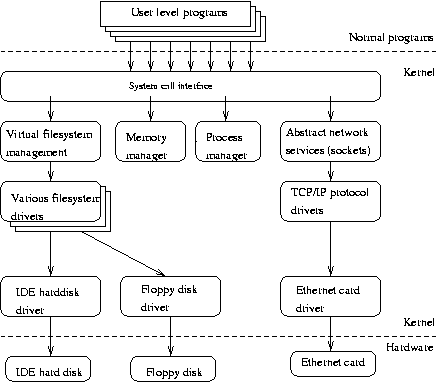
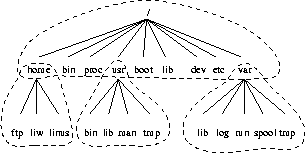
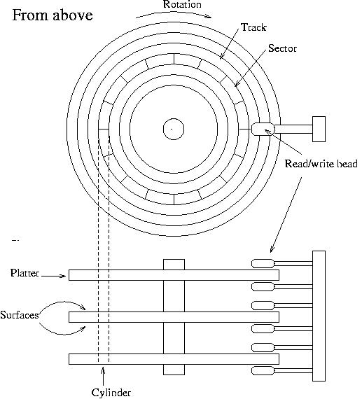
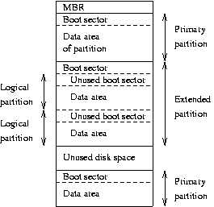
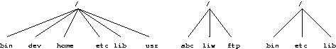
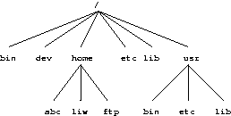
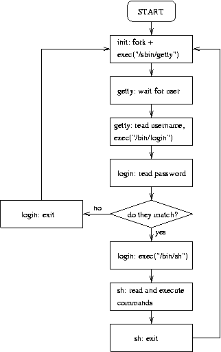
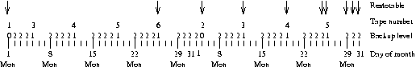

The Linux System Administrator's Guide
Version 0.8
Lars Wirzenius
<liw@iki.fi>
Joanna Oja
<viu@iki.fi>
Stephen Stafford
<stephen@clothcat.demon.co.uk>
Alex Weeks
<weeks_alex@yahoo.com.NOSPAM>
2003−12−03
An introduction to system administration of a Linux system for novices.
Copyright 1993−−1998 Lars Wirzenius.
Copyright 1998−−2001 Joanna Oja.
Copyright 2001−−2003 Stephen Stafford.
Copyright 2003−−Present Stephen Stafford & Alex Weeks.
Trademarks are owned by their owners.
Permission is granted to copy, distribute and/or modify this document under the terms of the GNU Free
Documentation License, Version 1.1; with no Invariant Sections, with no Front−Cover Texts, and with no
Back−Cover Texts. A copy of the license is included in the section entitled "GNU Free Documentation
License".
The Linux System Administrator's Guide
Table of Contents
Source and pre−formatted versions available..................................................................................................1
Chapter 1. Introduction......................................................................................................................................2
Chapter 2. About This Book..............................................................................................................................4
2.1. Acknowledgments.............................................................................................................................4
2.1.1. Joanna's acknowledgments......................................................................................................4
2.1.2. Stephen's acknowledgments....................................................................................................4
2.1.3. Alex's Acknowledgments........................................................................................................5
2.2. Typographical Conventions..............................................................................................................5
Chapter 3. Overview of a Linux System...........................................................................................................6
3.1. Various parts of an operating system................................................................................................6
3.2. Important parts of the kernel.............................................................................................................6
3.3. Major services in a UNIX system.....................................................................................................7
3.3.1. init............................................................................................................................................8
3.3.2. Logins from terminals.............................................................................................................8
3.3.3. Syslog......................................................................................................................................8
3.3.4. Periodic command execution: cron and at..............................................................................8
3.3.5. Graphical user interface...........................................................................................................9
3.3.6. Networking..............................................................................................................................9
3.3.7. Network logins........................................................................................................................9
3.3.8. Network file systems.............................................................................................................10
3.3.9. Mail.......................................................................................................................................10
3.3.10. Printing................................................................................................................................10
3.3.11. The filesystem layout..........................................................................................................10
Chapter 4. Overview of the Directory Tree....................................................................................................12
4.1. Background.....................................................................................................................................12
4.2. The root filesystem.........................................................................................................................13
4.3. The /etc directory............................................................................................................................14
4.4. The /dev directory...........................................................................................................................16
4.5. The /usr filesystem..........................................................................................................................16
4.6. The /var filesystem..........................................................................................................................16
4.7. The /proc filesystem........................................................................................................................17
Chapter 5. Device Files.....................................................................................................................................19
5.1. The MAKEDEV Script...................................................................................................................19
5.2. The mknod command.....................................................................................................................19
5.3. Device List......................................................................................................................................20
Chapter 6. Using Disks and Other Storage Media.........................................................................................22
6.1. Two kinds of devices......................................................................................................................22
6.2. Hard disks.......................................................................................................................................23
6.3. Floppies...........................................................................................................................................25
6.4. CD−ROMs......................................................................................................................................26
6.5. Tapes...............................................................................................................................................26
6.6. Formatting.......................................................................................................................................27
i
The Linux System Administrator's Guide
Table of Contents
Chapter 6. Using Disks and Other Storage Media
6.7. Partitions.........................................................................................................................................28
6.7.1. The MBR, boot sectors and partition table............................................................................29
6.7.2. Extended and logical partitions.............................................................................................29
6.7.3. Partition types........................................................................................................................30
6.7.4. Partitioning a hard disk..........................................................................................................31
6.7.5. Device files and partitions.....................................................................................................31
6.8. Filesystems......................................................................................................................................32
6.8.1. What are filesystems?............................................................................................................32
6.8.2. Filesystems galore.................................................................................................................32
6.8.3. Which filesystem should be used?........................................................................................34
6.8.4. Creating a filesystem.............................................................................................................35
6.8.5. Mounting and unmounting....................................................................................................36
6.8.6. Checking filesystem integrity with fsck................................................................................39
6.8.7. Checking for disk errors with badblocks...............................................................................39
6.8.8. Fighting fragmentation..........................................................................................................40
6.8.9. Other tools for all filesystems...............................................................................................40
6.8.10. Other tools for the ext2/ext3 filesystem..............................................................................41
6.9. Disks without filesystems...............................................................................................................42
6.10. Allocating disk space....................................................................................................................43
6.10.1. Partitioning schemes............................................................................................................43
6.10.2. Space requirements..............................................................................................................43
6.10.3. Examples of hard disk allocation........................................................................................44
6.10.4. Adding more disk space for Linux......................................................................................44
6.10.5. Tips for saving disk space...................................................................................................44
Chapter 7. Memory Management...................................................................................................................46
7.1. What is virtual memory?.................................................................................................................46
7.2. Creating a swap space.....................................................................................................................46
7.3. Using a swap space.........................................................................................................................47
7.4. Sharing swap spaces with other operating systems........................................................................49
7.5. Allocating swap space.....................................................................................................................49
7.6. The buffer cache.............................................................................................................................50
Chapter 8. Boots And Shutdowns....................................................................................................................52
8.1. An overview of boots and shutdowns.............................................................................................52
8.2. The boot process in closer look......................................................................................................52
8.3. More about shutdowns....................................................................................................................54
8.4. Rebooting........................................................................................................................................55
8.5. Single user mode.............................................................................................................................56
8.6. Emergency boot floppies................................................................................................................56
Chapter 9. init....................................................................................................................................................57
9.1. init comes first................................................................................................................................57
9.2. Configuring init to start getty: the /etc/inittab file..........................................................................57
9.3. Run levels.......................................................................................................................................58
9.4. Special configuration in /etc/inittab................................................................................................59
9.5. Booting in single user mode...........................................................................................................60
ii
The Linux System Administrator's Guide
Table of Contents
Chapter 10. Logging In And Out.....................................................................................................................61
10.1. Logins via terminals......................................................................................................................61
10.2. Logins via the network..................................................................................................................62
10.3. What login does............................................................................................................................63
10.4. X and xdm.....................................................................................................................................64
10.5. Access control...............................................................................................................................64
10.6. Shell startup..................................................................................................................................64
Chapter 11. Managing user accounts..............................................................................................................65
11.1. What's an account?........................................................................................................................65
11.2. Creating a user..............................................................................................................................65
11.2.1. /etc/passwd and other informative files...............................................................................65
11.2.2. Picking numeric user and group ids....................................................................................66
11.2.3. Initial environment: /etc/skel...............................................................................................66
11.2.4. Creating a user by hand.......................................................................................................67
11.3. Changing user properties..............................................................................................................67
11.4. Removing a user...........................................................................................................................68
11.5. Disabling a user temporarily.........................................................................................................68
Chapter 12. Backups.........................................................................................................................................70
12.1. On the importance of being backed up.........................................................................................70
12.2. Selecting the backup medium.......................................................................................................70
12.3. Selecting the backup tool..............................................................................................................71
12.4. Simple backups.............................................................................................................................72
12.4.1. Making backups with tar.....................................................................................................72
12.4.2. Restoring files with tar........................................................................................................73
12.5. Multilevel backups........................................................................................................................74
12.6. What to back up............................................................................................................................75
12.7. Compressed backups.....................................................................................................................76
Chapter 13. Keeping Time...............................................................................................................................77
13.1. The concept of localtime...............................................................................................................77
13.2. The hardware and software clocks................................................................................................78
13.3. Showing and setting time..............................................................................................................78
13.4. When the clock is wrong...............................................................................................................79
13.5. NTP − Network Time Protocol.....................................................................................................79
13.6. Basic NTP configuration...............................................................................................................80
13.7. NTP Toolkit..................................................................................................................................81
13.8. Some known NTP servers.............................................................................................................83
13.9. NTP Links.....................................................................................................................................83
Chapter 14. Finding Help.................................................................................................................................84
14.1. Newsgroups and Mailing Lists.....................................................................................................84
14.1.1. Finding The Right Forum....................................................................................................84
14.1.2. Before You Post..................................................................................................................84
14.1.3. Writing Your Post...............................................................................................................84
14.1.4. Formatting Your Post..........................................................................................................85
14.1.5. Follow Up............................................................................................................................85
iii
The Linux System Administrator's Guide
Table of Contents
Chapter 14. Finding Help
14.1.6. More Information................................................................................................................85
14.2. IRC................................................................................................................................................85
14.2.1. Colours................................................................................................................................86
14.2.2. Be Polite..............................................................................................................................86
14.2.3. Type Properly, in English....................................................................................................86
14.2.4. Port scanning.......................................................................................................................86
14.2.5. Keep it in the Channel.........................................................................................................86
14.2.6. Stay On Topic......................................................................................................................87
14.2.7. CTCPs.................................................................................................................................87
14.2.8. Hacking, Cracking, Phreaking, Warezing...........................................................................87
14.2.9. Round Up............................................................................................................................87
14.2.10. Further Reading.................................................................................................................87
Appendix A. GNU Free Documentation License...........................................................................................88
0. PREAMBLE......................................................................................................................................88
1. APPLICABILITY AND DEFINITIONS..........................................................................................88
2. VERBATIM COPYING....................................................................................................................89
3. COPYING IN QUANTITY...............................................................................................................89
4. MODIFICATIONS............................................................................................................................90
5. COMBINING DOCUMENTS...........................................................................................................91
6. COLLECTIONS OF DOCUMENTS................................................................................................91
7. AGGREGATION WITH INDEPENDENT WORKS.......................................................................92
8. TRANSLATION................................................................................................................................92
9. TERMINATION................................................................................................................................92
10. FUTURE REVISIONS OF THIS LICENSE...................................................................................92
How to use this License for your documents.........................................................................................93
Glossary (DRAFT, but not for long hopefully)..............................................................................................94
iv
Source and pre−formatted versions available
The source code and other machine readable formats of this book can be found on the Internet via anonymous
FTP at the Linux Documentation Project home page http://www.tldp.org/, or at the home page of this book at
http://www.taylexson.org/sag/. Available are at least HTML and PDF formats.
Source and pre−formatted versions available
1
Chapter 1. Introduction
"In the beginning, the file was without form, and void; and emptiness was upon the face of
the bits. And the Fingers of the Author moved upon the face of the keyboard. And the Author
said, Let there be words, and there were words."
The Linux System Administrator's Guide, describes the system administration aspects of using Linux. It is
intended for people who know next to nothing about system administration (those saying "what is it?"), but
who have already mastered at least the basics of normal usage. This manual doesn't tell you how to install
Linux; that is described in the Installation and Getting Started document. See below for more information
about Linux manuals.
System administration covers all the things that you have to do to keep a computer system in usable order. It
includes things like backing up files (and restoring them if necessary), installing new programs, creating
accounts for users (and deleting them when no longer needed), making certain that the filesystem is not
corrupted, and so on. If a computer were, say, a house, system administration would be called maintenance,
and would include cleaning, fixing broken windows, and other such things.
The structure of this manual is such that many of the chapters should be usable independently, so if you need
information about backups, for example, you can read just that chapter. However, this manual is first and
foremost a tutorial and can be read sequentially or as a whole.
This manual is not intended to be used completely independently. Plenty of the rest of the Linux
documentation is also important for system administrators. After all, a system administrator is just a user with
special privileges and duties. Very useful resources are the manual pages, which should always be consulted
when you are not familiar with a command. If you do not know which command you need, then the apropos
command can be used. Consult its manual page for more details.
While this manual is targeted at Linux, a general principle has been that it should be useful with other UNIX
based operating systems as well. Unfortunately, since there is so much variance between different versions of
UNIX in general, and in system administration in particular, there is little hope to cover all variants. Even
covering all possibilities for Linux is difficult, due to the nature of its development.
There is no one official Linux distribution, so different people have different setups and many people have a
setup they have built up themselves. This book is not targeted at any one distribution. Distributions can and do
vary considerably. When possible, differences have been noted and alternatives given.
In trying to describe how things work, rather than just listing "five easy steps" for each task, there is much
information here that is not necessary for everyone, but those parts are marked as such and can be skipped if
you use a preconfigured system. Reading everything will, naturally, increase your understanding of the system
and should make using and administering it more productive. [1]
Like all other Linux related development, the work to write this manual was done on a volunteer basis: I did it
because I thought it might be fun and because I felt it should be done. However, like all volunteer work, there
is a limit to how much time, knowledge and experience people have. This means that the manual is not
necessarily as good as it would be if a wizard had been paid handsomely to write it and had spent millennia to
perfect it. Be warned.
Chapter 1. Introduction
2
The Linux System Administrator's Guide
One particular point where corners have been cut is that many things that are already well documented in
other freely available manuals are not always covered here. This applies especially to program specific
documentation, such as all the details of using mkfs. Only the purpose of the program and as much of its
usage as is necessary for the purposes of this manual is described. For further information, consult these other
manuals. Usually, all of the referred to documentation is part of the full Linux documentation set.
Chapter 1. Introduction
3
Chapter 2. About This Book
2.1. Acknowledgments
2.1.1. Joanna's acknowledgments
Lars has tried to make this manual as good as possible and I would like, as a current maintainer, to keep up the
good work. I would really like to hear from you if you have any ideas on how to make it better. Bad language,
factual errors, ideas for new areas to cover, rewritten sections, information about how various UNIX versions
do things, I am interested in all of it. My contact information is available via the World Wide Web at
http://www.iki.fi/viu/.
Many people have helped me with this book, directly or indirectly. I would like to especially thank Matt
Welsh for inspiration and LDP leadership, Andy Oram for getting me to work again with much−valued
feedback, Olaf Kirch for showing me that it can be done, and Adam Richter at Yggdrasil and others for
showing me that other people can find it interesting as well.
Stephen Tweedie, H. Peter Anvin, Remy Card, Theodore Ts'o, and Stephen Tweedie have let me borrow their
work (and thus make the book look thicker and much more impressive): a comparison between the xia and
ext2 filesystems, the device list and a description of the ext2 filesystem. These aren't part of the book any
more. I am most grateful for this, and very apologetic for the earlier versions that sometimes lacked proper
attribution.
In addition, I would like to thank Mark Komarinski for sending his material in 1993 and the many system
administration columns in Linux Journal. They are quite informative and inspirational.
Many useful comments have been sent by a large number of people. My miniature black hole of an archive
doesn't let me find all their names, but some of them are, in alphabetical order: Paul Caprioli, Ales Cepek,
Marie−France Declerfayt, Dave Dobson, Olaf Flebbe, Helmut Geyer, Larry Greenfield and his father, Stephen
Harris, Jyrki Havia, Jim Haynes, York Lam, Timothy Andrew Lister, Jim Lynch, Michael J. Micek, Jacob
Navia, Dan Poirier, Daniel Quinlan, Jouni K Seppänen, Philippe Steindl, G.B. Stotte. My apologies to anyone
I have forgotten.
2.1.2. Stephen's acknowledgments
I would like to thank Lars and Joanna for their hard work on the guide.
In a guide like this one there are likely to be at least some minor inaccuracies. And there are almost certainly
going to be sections that become out of date from time to time. If you notice any of this then please let me
know by sending me an email to: <bagpuss@debian.org>. I will take virtually any form of input (diffs,
just plain text, html, whatever), I am in no way above allowing others to help me maintain such a large text as
this :)
Many thanks to Helen Topping Shaw for getting the red pen out and making the text far better than it would
otherwise have been. Also thanks are due just for being wonderful.
The current web home of the guide is http://people.debian.org/~bagpuss
Chapter 2. About This Book
4
The Linux System Administrator's Guide
2.1.3. Alex's Acknowledgments
I would like to thank Lars, Joanna, and Stephen for all the great work that they have done on this document
over the years. I only hope that my contribution will be worthy of continuing the work they started.
There have been many people who have helped me on my journey through the "Windows−Free" world, the
person I feel I need to thank the most is my first true UN*X mentor, Mike Velasco. Back in a time before
SCO became a "dirty word", Mike helped me on the path of tar's, cpio's, and many, many man pages. Thanks
Mike! You are the 'Sofa King'.
2.2. Typographical Conventions
Throughout this book, I have tried to use uniform typographical conventions. Hopefully they aid readability.
If you can suggest any improvements please contact me.
Filenames are expressed as: /usr/share/doc/foo.
Command names are expressed as: fsck
Email addresses are expressed as: <stephen@clothcat.demon.co.uk>
URLs are expressed as: http://www.tldp.org
I will add to this section as things come up whilst editing. If you notice anything that should be added then
please let me know.
Chapter 2. About This Book
5
Chapter 3. Overview of a Linux System
"God saw everything that he had made, and saw that it was very good. " −− Bible King James
Version. Genesis 1:31
This chapter gives an overview of a Linux system. First, the major services provided by the operating system
are described. Then, the programs that implement these services are described with a considerable lack of
detail. The purpose of this chapter is to give an understanding of the system as a whole, so that each part is
described in detail elsewhere.
3.1. Various parts of an operating system
A UNIX operating system consists of a kernel and some system programs. There are also some application
programs for doing work. The kernel is the heart of the operating system. [2] It keeps track of files on the
disk, starts programs and runs them concurrently, assigns memory and other resources to various processes,
receives packets from and sends packets to the network, and so on. The kernel does very little by itself, but it
provides tools with which all services can be built. It also prevents anyone from accessing the hardware
directly, forcing everyone to use the tools it provides. [3] This way the kernel provides some protection for
users from each other. The tools provided by the kernel are used via system calls. See manual page section 2
for more information on these.
The system programs use the tools provided by the kernel to implement the various services required from an
operating system. System programs, and all other programs, run `on top of the kernel', in what is called the
user mode. The difference between system and application programs is one of intent: applications are intended
for getting useful things done (or for playing, if it happens to be a game), whereas system programs are
needed to get the system working. A word processor is an application; mount is a system program. The
difference is often somewhat blurry, however, and is important only to compulsive categorizers.
An operating system can also contain compilers and their corresponding libraries (GCC and the C library in
particular under Linux), although not all programming languages need be part of the operating system.
Documentation, and sometimes even games, can also be part of it. Traditionally, the operating system has
been defined by the contents of the installation tape or disks; with Linux it is not as clear since it is spread all
over the FTP sites of the world.
3.2. Important parts of the kernel
The Linux kernel consists of several important parts: process management, memory management, hardware
device drivers, filesystem drivers, network management, and various other bits and pieces. Figure 3−1 shows
some of them.
Figure 3−1. Some of the more important parts of the Linux kernel
Chapter 3. Overview of a Linux System
6

The Linux System Administrator's Guide
Probably the most important parts of the kernel (nothing else works without them) are memory management
and process management. Memory management takes care of assigning memory areas and swap space areas
to processes, parts of the kernel, and for the buffer cache. Process management creates processes, and
implements multitasking by switching the active process on the processor.
At the lowest level, the kernel contains a hardware device driver for each kind of hardware it supports. Since
the world is full of different kinds of hardware, the number of hardware device drivers is large. There are
often many otherwise similar pieces of hardware that differ in how they are controlled by software. The
similarities make it possible to have general classes of drivers that support similar operations; each member of
the class has the same interface to the rest of the kernel but differs in what it needs to do to implement them.
For example, all disk drivers look alike to the rest of the kernel, i.e., they all have operations like `initialize the
drive', `read sector N', and `write sector N'.
Some software services provided by the kernel itself have similar properties, and can therefore be abstracted
into classes. For example, the various network protocols have been abstracted into one programming
interface, the BSD socket library. Another example is the virtual filesystem (VFS) layer that abstracts the
filesystem operations away from their implementation. Each filesystem type provides an implementation of
each filesystem operation. When some entity tries to use a filesystem, the request goes via the VFS, which
routes the request to the proper filesystem driver.
3.3. Major services in a UNIX system
This section describes some of the more important UNIX services, but without much detail. They are
described more thoroughly in later chapters.
Chapter 3. Overview of a Linux System
7
The Linux System Administrator's Guide
3.3.1. init
The single most important service in a UNIX system is provided by init. init is started as the first process of
every UNIX system, as the last thing the kernel does when it boots. When init starts, it continues the boot
process by doing various startup chores (checking and mounting filesystems, starting daemons, etc).
The exact list of things that init does depends on which flavor it is; there are several to choose from. init
usually provides the concept of single user mode, in which no one can log in and root uses a shell at the
console; the usual mode is called multiuser mode. Some flavors generalize this as run levels; single and
multiuser modes are considered to be two run levels, and there can be additional ones as well, for example, to
run X on the console.
Linux allows for up to 10 runlevels, 0−9, but usually only some of these are defined by default. Runlevel 0 is
defined as "system halt". Runlevel 1 is defined as "single user mode". Runlevel 6 is defined as "system
reboot". Other runlevels are dependent on how your particular distribution has defined them, and they vary
significantly between distributions. Looking at the contents of /etc/inittab usually will give some hint
what the predefined runlevels are and what they have been defined as.
In normal operation, init makes sure getty is working (to allow users to log in), and to adopt orphan processes
(processes whose parent has died; in UNIX all processes must be in a single tree, so orphans must be
adopted).
When the system is shut down, it is init that is in charge of killing all other processes, unmounting all
filesystems and stopping the processor, along with anything else it has been configured to do.
3.3.2. Logins from terminals
Logins from terminals (via serial lines) and the console (when not running X) are provided by the getty
program. init starts a separate instance of getty for each terminal upon which logins are to be allowed. getty
reads the username and runs the login program, which reads the password. If the username and password are
correct, login runs the shell. When the shell terminates, i.e., the user logs out, or when login terminated
because the username and password didn't match, init notices this and starts a new instance of getty. The
kernel has no notion of logins, this is all handled by the system programs.
3.3.3. Syslog
The kernel and many system programs produce error, warning, and other messages. It is often important that
these messages can be viewed later, even much later, so they should be written to a file. The program doing
this is syslog. It can be configured to sort the messages to different files according to writer or degree of
importance. For example, kernel messages are often directed to a separate file from the others, since kernel
messages are often more important and need to be read regularly to spot problems.
3.3.4. Periodic command execution: cron and at
Both users and system administrators often need to run commands periodically. For example, the system
administrator might want to run a command to clean the directories with temporary files (/tmp and
/var/tmp) from old files, to keep the disks from filling up, since not all programs clean up after themselves
correctly.
Chapter 3. Overview of a Linux System
8
The Linux System Administrator's Guide
The cron service is set up to do this. Each user can have a crontab file, where she lists the commands she
wishes to execute and the times they should be executed. The cron daemon takes care of starting the
commands when specified.
The at service is similar to cron, but it is once only: the command is executed at the given time, but it is not
repeated.
See the manual pages cron(1), crontab(1), crontab(5), at(1) and atd(8) for more in depth information.
3.3.5. Graphical user interface
UNIX and Linux don't incorporate the user interface into the kernel; instead, they let it be implemented by
user level programs. This applies for both text mode and graphical environments.
This arrangement makes the system more flexible, but has the disadvantage that it is simple to implement a
different user interface for each program, making the system harder to learn.
The graphical environment primarily used with Linux is called the X Window System (X for short). X also
does not implement a user interface; it only implements a window system, i.e., tools with which a graphical
user interface can be implemented. Some popular window managers are: fvwm, icewm, blackbox and
windowmaker. There are also two popular desktop managers, KDE and Gnome.
3.3.6. Networking
Networking is the act of connecting two or more computers so that they can communicate with each other.
The actual methods of connecting and communicating are slightly complicated, but the end result is very
useful.
UNIX operating systems have many networking features. Most basic services (filesystems, printing, backups,
etc) can be done over the network. This can make system administration easier, since it allows centralized
administration, while still reaping in the benefits of microcomputing and distributed computing, such as lower
costs and better fault tolerance.
However, this book merely glances at networking; see the Linux Network Administrators' Guide
http://www.tldp.org/LDP/nag2/index.html for more information, including a basic description of how
networks operate.
3.3.7. Network logins
Network logins work a little differently than normal logins. There is a separate physical serial line for each
terminal via which it is possible to log in. For each person logging in via the network, there is a separate
virtual network connection, and there can be any number of these. [4] It is therefore not possible to run a
separate getty for each possible virtual connection. There are also several different ways to log in via a
network, telnet and rlogin being the major ones in TCP/IP networks. [5]
Network logins have, instead of a herd of gettys, a single daemon per way of logging in (telnet and rlogin
have separate daemons) that listens for all incoming login attempts. When it notices one, it starts a new
instance of itself to handle that single attempt; the original instance continues to listen for other attempts. The
new instance works similarly to getty.
Chapter 3. Overview of a Linux System
9
The Linux System Administrator's Guide
3.3.8. Network file systems
One of the more useful things that can be done with networking services is sharing files via a network file
system. The one usually used is called the Network File System, or NFS, developed by Sun.
With a network file system any file operations done by a program on one machine are sent over the network to
another computer. This fools the program to think that all the files on the other computer are actually on the
computer the program is running on. This makes information sharing extremely simple, since it requires no
modifications to programs.
Another popular way of sharing files is Samba http://www.samba.org. This protocol allows the sharing of
files with MS Windows machines (via Network Neighbourhood). It also allows the sharing of printers across
machines.
3.3.9. Mail
Electronic mail is the most popularly used method for communicating via computer. An electronic letter is
stored in a file using a special format, and special mail programs are used to send and read the letters.
Each user has an incoming mailbox (a file in the special format), where all new mail is stored. When someone
sends mail, the mail program locates the receiver's mailbox and appends the letter to the mailbox file. If the
receiver's mailbox is in another machine, the letter is sent to the other machine, which delivers it to the
mailbox as it best sees fit.
The mail system consists of many programs. The delivery of mail to local or remote mailboxes is done by one
program (the mail transfer agent (MTA), e.g., sendmail or smail), while the programs users use are many and
varied (mail user agent (MUA), e.g., pine, mutt or elm). The mailboxes are usually stored in
/var/spool/mail.
3.3.10. Printing
Only one person can use a printer at one time, but it is uneconomical not to share printers between users. The
printer is therefore managed by software that implements a print queue: all print jobs are put into a queue and
whenever the printer is done with one job, the next one is sent to it automatically. This relieves the users from
organizing the print queue and fighting over control of the printer. [6]
The print queue software also spools the printouts on disk, i.e., the text is kept in a file while the job is in the
queue. This allows an application program to spit out the print jobs quickly to the print queue software; the
application does not have to wait until the job is actually printed to continue. This is really convenient, since it
allows one to print out one version, and not have to wait for it to be printed before one can make a completely
revised new version.
3.3.11. The filesystem layout
The filesystem is divided into many parts; usually along the lines of a root filesystem with /bin, /lib,
/etc, /dev, and a few others; a /usr filesystem with programs and unchanging data; a /var filesystem
with changing data (such as log files); and a /home filesystem for everyone's personal files. Depending on
the hardware configuration and the decisions of the system administrator, the division can be different; it can
Chapter 3. Overview of a Linux System
10
The Linux System Administrator's Guide
even be all in one filesystem.
Chapter 4 describes the filesystem layout in some little detail; the Filesystem Hierarchy Standard covers it in
somewhat more detail. [7]
Chapter 3. Overview of a Linux System
11

Chapter 4. Overview of the Directory Tree
" Two days later, there was Pooh, sitting on his branch, dangling his legs, and there, beside
him, were four pots of honey..." (A.A. Milne)
This chapter describes the important parts of a standard Linux directory tree, based on the Filesystem
Hierarchy Standard. It outlines the normal way of breaking the directory tree into separate filesystems with
different purposes and gives the motivation behind this particular split. Not all Linux distributions follow this
standard slavishly, but it is generic enough to give you an overview.
4.1. Background
This chapter is loosely based on the Filesystems Hierarchy Standard (FHS) [8] version 2.1, which attempts to
set a standard for how the directory tree in a Linux [9] system is organized. Such a standard has the advantage
that it will be easier to write or port software for Linux, and to administer Linux machines, since everything
should be in standardized places. There is no authority behind the standard that forces anyone to comply with
it, but it has gained the support of many Linux distributions. It is not a good idea to break with the FHS
without very compelling reasons. The FHS attempts to follow Unix tradition and current trends, making Linux
systems familiar to those with experience with other Unix systems, and vice versa.
This chapter is not as detailed as the FHS. A system administrator should also read the full FHS for a
complete understanding.
This chapter does not explain all files in detail. The intention is not to describe every file, but to give an
overview of the system from a filesystem point of view. Further information on each file is available
elsewhere in this manual or in the Linux manual pages.
The full directory tree is intended to be breakable into smaller parts, each capable of being on its own disk or
partition, to accommodate to disk size limits and to ease backup and other system administration tasks. The
major parts are the root (/), /usr, /var, and /home filesystems (see Figure 4−1). Each part has a different
purpose. The directory tree has been designed so that it works well in a network of Linux machines which
may share some parts of the filesystems over a read−only device (e.g., a CD−ROM), or over the network with
NFS.
Figure 4−1. Parts of a Unix directory tree. Dashed lines indicate partition limits.
The roles of the different parts of the directory tree are described below.
Chapter 4. Overview of the Directory Tree
12
The Linux System Administrator's Guide
The root filesystem is specific for each machine (it is generally stored on a local disk, although it
•
could be a ramdisk or network drive as well) and contains the files that are necessary for booting the
system up, and to bring it up to such a state that the other filesystems may be mounted. The contents
of the root filesystem will therefore be sufficient for the single user state. It will also contain tools for
fixing a broken system, and for recovering lost files from backups.
The
•
/usr filesystem contains all commands, libraries, manual pages, and other unchanging files
needed during normal operation. No files in /usr should be specific for any given machine, nor
should they be modified during normal use. This allows the files to be shared over the network, which
can be cost−effective since it saves disk space (there can easily be hundreds of megabytes,
increasingly multiple gigabytes in /usr). It can make administration easier (only the master /usr
needs to be changed when updating an application, not each machine separately) to have /usr network
mounted. Even if the filesystem is on a local disk, it could be mounted read−only, to lessen the chance
of filesystem corruption during a crash.
The
•
/var filesystem contains files that change, such as spool directories (for mail, news, printers,
etc), log files, formatted manual pages, and temporary files. Traditionally everything in /var has
been somewhere below /usr, but that made it impossible to mount /usr read−only.
The
•
/home filesystem contains the users' home directories, i.e., all the real data on the system.
Separating home directories to their own directory tree or filesystem makes backups easier; the other
parts often do not have to be backed up, or at least not as often as they seldom change. A big /home
might have to be broken across several filesystems, which requires adding an extra naming level
below /home, for example /home/students and /home/staff.
Although the different parts have been called filesystems above, there is no requirement that they actually be
on separate filesystems. They could easily be kept in a single one if the system is a small single−user system
and the user wants to keep things simple. The directory tree might also be divided into filesystems differently,
depending on how large the disks are, and how space is allocated for various purposes. The important part,
though, is that all the standard names work; even if, say, /var and /usr are actually on the same partition,
the names /usr/lib/libc.a and /var/log/messages must work, for example by moving files
below /var into /usr/var, and making /var a symlink to /usr/var.
The Unix filesystem structure groups files according to purpose, i.e., all commands are in one place, all data
files in another, documentation in a third, and so on. An alternative would be to group files files according to
the program they belong to, i.e., all Emacs files would be in one directory, all TeX in another, and so on. The
problem with the latter approach is that it makes it difficult to share files (the program directory often contains
both static and sharable and changing and non−sharable files), and sometimes to even find the files (e.g.,
manual pages in a huge number of places, and making the manual page programs find all of them is a
maintenance nightmare).
4.2. The root filesystem
The root filesystem should generally be small, since it contains very critical files and a small, infrequently
modified filesystem has a better chance of not getting corrupted. A corrupted root filesystem will generally
mean that the system becomes unbootable except with special measures (e.g., from a floppy), so you don't
want to risk it.
The root directory generally doesn't contain any files, except perhaps the standard boot image for the system,
usually called /vmlinuz. All other files are in subdirectories in the root filesystems:
/bin
Commands needed during bootup that might be used by normal users (probably after bootup).
Chapter 4. Overview of the Directory Tree
13
The Linux System Administrator's Guide
/sbin
Like /bin, but the commands are not intended for normal users, although they may use them if
necessary and allowed. /sbin is not usually in the default path of normal users, but will be in root's
default path.
/etc
Configuration files specific to the machine.
/root
The home directory for user root. This is usually not accessible to other users on the system
/lib
Shared libraries needed by the programs on the root filesystem.
/lib/modules
Loadable kernel modules, especially those that are needed to boot the system when recovering from
disasters (e.g., network and filesystem drivers).
/dev
Device files. Some of the more commonly used device files are examined in Chapter 5
/tmp
Temporary files. Programs running after bootup should use /var/tmp, not /tmp, since the former
is probably on a disk with more space. Often /tmp will be a symbolic link to /var/tmp.
/boot
Files used by the bootstrap loader, e.g., LILO. Kernel images are often kept here instead of in the root
directory. If there are many kernel images, the directory can easily grow rather big, and it might be
better to keep it in a separate filesystem. Another reason would be to make sure the kernel images are
within the first 1024 cylinders of an IDE disk. [10]
/mnt
Mount point for temporary mounts by the system administrator. Programs aren't supposed to mount
on /mnt automatically. /mnt might be divided into subdirectories (e.g., /mnt/dosa might be the
floppy drive using an MS−DOS filesystem, and /mnt/exta might be the same with an ext2
filesystem).
/proc, /usr, /var, /home
Mount points for the other filesystems. [11]
4.3. The /etc directory
The /etc directory contains a lot of files. Some of them are described below. For others, you should
determine which program they belong to and read the manual page for that program. Many networking
configuration files are in /etc as well, and are described in the Networking Administrators' Guide.
/etc/rc or /etc/rc.d or /etc/rc?.d
Scripts or directories of scripts to run at startup or when changing the run level. See Chapter 9 for
further information.
/etc/passwd
The user database, with fields giving the username, real name, home directory, encrypted password,
and other information about each user. The format is documented in the passwd manual page. The
encrypted passwords are much more commonly found in the /etc/shadow these days. This means
that almost everything about the user except the password is stored in the passwd file. History and
convention make a name change undesirable.
/etc/fdprm
Floppy disk parameter table. Describes what different floppy disk formats look like. Used by
setfdprm. See the setfdprm manual page for more information.
/etc/fstab
Chapter 4. Overview of the Directory Tree
14
The Linux System Administrator's Guide
Lists the filesystems mounted automatically at startup by the mount −a command (in /etc/rc or
equivalent startup file). Under Linux, also contains information about swap areas used automatically
by swapon −a. See Section 6.8.5 and the mount manual page for more information. Also fstab
usually has its own manual page in section 5.
/etc/group
Similar to /etc/passwd, but describes groups instead of users. See the group manual page in
section 5 for more information.
/etc/inittab
Configuration file for init.
/etc/issue
Output by getty before the login prompt. Usually contains a short description or welcoming message
to the system. The contents are up to the system administrator.
/etc/magic
The configuration file for file. Contains the descriptions of various file formats based on which file
guesses the type of the file. See the magic and file manual pages for more information.
/etc/motd
The message of the day, automatically output after a successful login. Contents are up to the system
administrator. Often used for getting information to every user, such as warnings about planned
downtimes.
/etc/mtab
List of currently mounted filesystems. Initially set up by the bootup scripts, and updated automatically
by the mount command. Used when a list of mounted filesystems is needed, e.g., by the df command.
/etc/shadow
Shadow password file on systems with shadow password software installed. Shadow passwords move
the encrypted password from /etc/passwd into /etc/shadow; the latter is not readable by
anyone except root. This makes it harder to crack passwords. If your distribution gives you a choice
(many do) of whether or not to use shadow passwords then you are highly recommended to do so.
/etc/login.defs
Configuration file for the login command. The login.defs file usually has a manual page in
section 5.
/etc/printcap
Like /etc/termcap, but intended for printers. However it uses different syntax. The printcap
has a manual page in section 5.
/etc/profile, /etc/csh.login, /etc/csh.cshrc
Files executed at login or startup time by the Bourne or C shells. These allow the system administrator
to set global defaults for all users. See the manual pages for the respective shells.
/etc/securetty
Identifies secure terminals, i.e., the terminals from which root is allowed to log in. Typically only the
virtual consoles are listed, so that it becomes impossible (or at least harder) to gain superuser
privileges by breaking into a system over a modem or a network. Do not allow root logins over a
network. Prefer to log in as an unprivileged user and use su or sudo to gain root privileges.
/etc/shells
Lists trusted shells. The chsh command allows users to change their login shell only to shells listed in
this file. ftpd, the server process that provides FTP services for a machine, will check that the user's
shell is listed in /etc/shells and will not let people log in unless the shell is listed there.
/etc/termcap
The terminal capability database. Describes by what "escape sequences" various terminals can be
controlled. Programs are written so that instead of directly outputting an escape sequence that only
works on a particular brand of terminal, they look up the correct sequence to do whatever it is they
want to do in /etc/termcap. As a result most programs work with most kinds of terminals. See
the termcap, curs_termcap, and terminfo manual pages for more information.
Chapter 4. Overview of the Directory Tree
15
The Linux System Administrator's Guide
4.4. The /dev directory
The /dev directory contains the special device files for all the devices. The device files are named using
special conventions; these are described in Chapter 5. The device files are created during installation, and later
with the /dev/MAKEDEV script. The /dev/MAKEDEV.local is a script written by the system administrator
that creates local−only device files or links (i.e. those that are not part of the standard MAKEDEV, such as
device files for some non−standard device driver).
4.5. The /usr filesystem
The /usr filesystem is often large, since all programs are installed there. All files in /usr usually come
from a Linux distribution; locally installed programs and other stuff goes below /usr/local. This makes it
possible to update the system from a new version of the distribution, or even a completely new distribution,
without having to install all programs again. Some of the subdirectories of /usr are listed below (some of the
less important directories have been dropped; see the FSSTND for more information).
/usr/X11R6
The X Window System, all files. To simplify the development and installation of X, the X files have
not been integrated into the rest of the system. There is a directory tree below /usr/X11R6 similar
to that below /usr itself.
/usr/bin
Almost all user commands. Some commands are in /bin or in /usr/local/bin.
/usr/sbin
System administration commands that are not needed on the root filesystem, e.g., most server
programs.
/usr/share/man, /usr/share/info, /usr/share/doc
Manual pages, GNU Info documents, and miscellaneous other documentation files, respectively.
/usr/include
Header files for the C programming language. This should actually be below /usr/lib for
consistency, but the tradition is overwhelmingly in support for this name.
/usr/lib
Unchanging data files for programs and subsystems, including some site−wide configuration files.
The name lib comes from library; originally libraries of programming subroutines were stored in
/usr/lib.
/usr/local
The place for locally installed software and other files. Distributions may not install anything in here.
It is reserved solely for the use of the local administrator. This way he can be absolutely certain that
no updates or upgrades to his distribution will overwrite any extra software he has installed locally.
4.6. The /var filesystem
The /var contains data that is changed when the system is running normally. It is specific for each system,
i.e., not shared over the network with other computers.
/var/cache/man
A cache for man pages that are formatted on demand. The source for manual pages is usually stored
in /usr/share/man/man?/ (where ? is the manual section. See the manual page for man in
section 7); some manual pages might come with a pre−formatted version, which might be stored in
Chapter 4. Overview of the Directory Tree
16
The Linux System Administrator's Guide
/usr/share/man/cat*. Other manual pages need to be formatted when they are first viewed;
the formatted version is then stored in /var/cache/man so that the next person to view the same
page won't have to wait for it to be formatted.
/var/games
Any variable data belonging to games in /usr should be placed here. This is in case /usr is mounted
read only.
/var/lib
Files that change while the system is running normally.
/var/local
Variable data for programs that are installed in /usr/local (i.e., programs that have been installed
by the system administrator). Note that even locally installed programs should use the other /var
directories if they are appropriate, e.g., /var/lock.
/var/lock
Lock files. Many programs follow a convention to create a lock file in /var/lock to indicate that
they are using a particular device or file. Other programs will notice the lock file and won't attempt to
use the device or file.
/var/log
Log files from various programs, especially login (/var/log/wtmp, which logs all logins and
logouts into the system) and syslog (/var/log/messages, where all kernel and system program
message are usually stored). Files in /var/log can often grow indefinitely, and may require
cleaning at regular intervals.
/var/mail
This is the FHS approved location for user mailbox files. Depending on how far your distribution has
gone towards FHS compliance, these files may still be held in /var/spool/mail.
/var/run
Files that contain information about the system that is valid until the system is next booted. For
example, /var/run/utmp contains information about people currently logged in.
/var/spool
Directories for news, printer queues, and other queued work. Each different spool has its own
subdirectory below /var/spool, e.g., the news spool is in /var/spool/news. Note that some
installations which are not fully compliant with the latest version of the FHS may have user mailboxes
under /var/spool/mail.
/var/tmp
Temporary files that are large or that need to exist for a longer time than what is allowed for /tmp.
(Although the system administrator might not allow very old files in /var/tmp either.)
4.7. The /proc filesystem
The /proc filesystem contains a illusionary filesystem. It does not exist on a disk. Instead, the kernel creates
it in memory. It is used to provide information about the system (originally about processes, hence the name).
Some of the more important files and directories are explained below. The /proc filesystem is described in
more detail in the proc manual page.
/proc/1
A directory with information about process number 1. Each process has a directory below /proc
with the name being its process identification number.
/proc/cpuinfo
Information about the processor, such as its type, make, model, and performance.
/proc/devices
List of device drivers configured into the currently running kernel.
Chapter 4. Overview of the Directory Tree
17
The Linux System Administrator's Guide
/proc/dma
Shows which DMA channels are being used at the moment.
/proc/filesystems
Filesystems configured into the kernel.
/proc/interrupts
Shows which interrupts are in use, and how many of each there have been.
/proc/ioports
Which I/O ports are in use at the moment.
/proc/kcore
An image of the physical memory of the system. This is exactly the same size as your physical
memory, but does not really take up that much memory; it is generated on the fly as programs access
it. (Remember: unless you copy it elsewhere, nothing under /proc takes up any disk space at all.)
/proc/kmsg
Messages output by the kernel. These are also routed to syslog.
/proc/ksyms
Symbol table for the kernel.
/proc/loadavg
The `load average' of the system; three meaningless indicators of how much work the system has to
do at the moment.
/proc/meminfo
Information about memory usage, both physical and swap.
/proc/modules
Which kernel modules are loaded at the moment.
/proc/net
Status information about network protocols.
/proc/self
A symbolic link to the process directory of the program that is looking at /proc. When two
processes look at /proc, they get different links. This is mainly a convenience to make it easier for
programs to get at their process directory.
/proc/stat
Various statistics about the system, such as the number of page faults since the system was booted.
/proc/uptime
The time the system has been up.
/proc/version
The kernel version.
Note that while the above files tend to be easily readable text files, they can sometimes be formatted in a way
that is not easily digestible. There are many commands that do little more than read the above files and format
them for easier understanding. For example, the free program reads /proc/meminfo and converts the
amounts given in bytes to kilobytes (and adds a little more information, as well).
Chapter 4. Overview of the Directory Tree
18
Chapter 5. Device Files
This chapter gives an overview of what a device file is, and how to create one. It also lists some of the more
common device files. The canonical list of device files is
/usr/src/linux/Documentation/devices.txt if you have the Linux kernel source code installed
on your system. The devices listed here are correct as of kernel version 2.2.17.
5.1. The MAKEDEV Script
Most device files will already be created and will be there ready to use after you install your Linux system. If
by some chance you need to create one which is not provided then you should first try to use the MAKEDEV
script. This script is usually located in /dev/MAKEDEV but might also have a copy (or a symbolic link) in
/sbin/MAKEDEV. If it turns out not to be in your path then you will need to specify the path to it explicitly.
In general the command is used as:
# /dev/MAKEDEV −v ttyS0
create ttyS0 c 4 64 root:dialout 0660
This will create the device file /dev/ttyS0 with major node 4 and minor node 64 as a character device
with access permissions 0660 with owner root and group dialout.
ttyS0 is a serial port. The major and minor node numbers are numbers understood by the kernel. The kernel
refers to hardware devices as numbers, this would be very difficult for us to remember, so we use filenames.
Access permissions of 0660 means read and write permission for the owner (root in this case) and read and
write permission for members of the group (dialout in this case) with no access for anyone else.
5.2. The mknod command
MAKEDEV is the preferred way of creating device files which are not present. However sometimes the
MAKEDEV script will not know about the device file you wish to create. This is where the mknod command
comes in. In order to use mknod you need to know the major and minor node numbers for the device you
wish to create. The devices.txt file in the kernel source documentation is the canonical source of this
information.
To take an example, let us suppose that our version of the MAKEDEV script does not know how to create the
/dev/ttyS0 device file. We need to use mknod to create it. We know from looking at the devices.txt
file that it should be a character device with major number 4 and minor number 64. So we now know all we
need to create the file.
# mknod /dev/ttyS0 c 4 64
# chown root.dialout /dev/ttyS0
# chmod 0644 /dev/ttyS0
# ls −l /dev/ttyS0
crw−rw−−−− 1 root dialout 4, 64 Oct 23 18:23 /dev/ttyS0
As you can see, many more steps are required to create the file. In this example you can see the process
required however. It is unlikely in the extreme that the ttyS0 file would not be provided by the MAKEDEV
Chapter 5. Device Files
19
The Linux System Administrator's Guide
script, but it suffices to illustrate the point.
5.3. Device List
This list which follows is by no means exhaustive or as detailed as it could be. Many of these device files will
need support compiled into your kernel for the hardware. Read the kernel documentation to find details of any
particular device.
If you think there are other devices which should be included here but aren't then let me know. I will try to
include them in the next revision.
/dev/dsp
Digital Signal Processor. Basically this forms the interface between software which produces sound
and your soundcard. It is a character device on major node 14 and minor 3.
/dev/fd0
The first floppy drive. If you are lucky enough to have several drives then they will be numbered
sequentially. It is a character device on major node 2 and minor 0.
/dev/fb0
The first framebuffer device. A framebuffer is an abstraction layer between software and graphics
hardware. This means that applications do not need to know about what kind of hardware you have
but merely how to communicate with the framebuffer driver's API (Application Programming
Interface) which is well defined and standardised. The framebuffer is a character device and is on
major node 29 and minor 0.
/dev/hda
/dev/hda is the master IDE drive on the primary IDE controller. /dev/hdb is the slave drive on
the primary controller. /dev/hdc and /dev/hdd are the master and slave devices on the secondary
controller respectively. Each disk is divided into partitions. Partitions 1−4 are primary partitions and
partitions 5 and above are logical partitions inside extended partitions. Therefore the device file which
references each partition is made up of several parts. For example /dev/hdc9 references partition 9
(a logical partition inside an extended partition type) on the master IDE drive on the secondary IDE
controller. The major and minor node numbers are somewhat complex. For the first IDE controller all
partitions are block devices on major node 3. The master drive hda is at minor 0 and the slave drive
hdb is at minor 64. For each partition inside the drive add the partition number to the minor node
number for the drive. For example /dev/hdb5 is major 3, minor 69 (64 + 5 = 69). Drives on the
secondary interface are handled the same way, but with major node 22.
/dev/ht0
The first IDE tape drive. Subsequent drives are numbered ht1 etc. They are character devices on
major node 37 and start at minor node 0 for ht0 1 for ht1 etc.
/dev/js0
The first analogue joystick. Subsequent joysticks are numbered js1, js2 etc. Digital joysticks are
called djs0, djs1 and so on. They are character devices on major node 15. The analogue joysticks
start at minor node 0 and go up to 127 (more than enough for even the most fanatic gamer). Digital
joysticks start at minor node 128.
/dev/lp0
The first parallel printer device. Subsequent printers are numbered lp1, lp2 etc. They are character
devices on major mode 6 and minor nodes starting at 0 and numbered sequentially.
/dev/loop0
The first loopback device. Loopback devices are used for mounting filesystems which are not located
on other block devices such as disks. For example if you wish to mount an iso9660 CD ROM image
without burning it to CD then you need to use a loopback device to do so. This is usually transparent
Chapter 5. Device Files
20
The Linux System Administrator's Guide
to the user and is handled by the mount command. Refer to the manual pages for mount and losetup.
The loopback devices are block devices on major node 7 and with minor nodes starting at 0 and
numbered sequentially.
/dev/md0
First metadisk group. Metadisks are related to RAID (Redundant Array of Independent Disks)
devices. Please refer to the various RAID HOWTOs at the LDP for more details. Metadisk devices
are block devices on major node 9 with minor nodes starting at 0 and numbered sequentially.
/dev/mixer
This is part of the OSS (Open Sound System) driver. Refer to the OSS documentation at
http://www.opensound.com for more details. It is a character device on major node 14, minor node 0.
/dev/null
The bit bucket. A black hole where you can send data for it never to be seen again. Anything sent to
/dev/null will disappear. This can be useful if, for example, you wish to run a command but not
have any feedback appear on the terminal. It is a character device on major node 1 and minor node 3.
/dev/psaux
The PS/2 mouse port. This is a character device on major node 10, minor node 1.
/dev/pda
Parallel port IDE disks. These are named similarly to disks on the internal IDE controllers
(/dev/hd*). They are block devices on major node 45. Minor nodes need slightly more explanation
here. The first device is /dev/pda and it is on minor node 0. Partitions on this device are found by
adding the partition number to the minor number for the device. Each device is limited to 15 partitions
each rather than 63 (the limit for internal IDE disks). /dev/pdb minor nodes start at 16, /dev/pdc
at 32 and /dev/pdd at 48. So for example the minor node number for /dev/pdc6 would be 38
(32 + 6 = 38). This scheme limits you to 4 parallel disks of 15 partitions each.
/dev/pcd0
Parallel port CD ROM drives. These are numbered from 0 onwards. All are block devices on major
node 46. /dev/pcd0 is on minor node 0 with subsequent drives being on minor nodes 1, 2, 3 etc.
/dev/pt0
Parallel port tape devices. Tapes do not have partitions so these are just numbered sequentially. They
are character devices on major node 96. The minor node numbers start from 0 for /dev/pt0, 1 for
/dev/pt1, and so on.
/dev/parport0
The raw parallel ports. Most devices which are attached to parallel ports have their own drivers. This
is a device to access the port directly. It is a character device on major node 99 with minor node 0.
Subsequent devices after the first are numbered sequentially incrementing the minor node.
/dev/random or /dev/urandom
These are kernel random number generators. /dev/random is a non−deterministic generator which
means that the value of the next number cannot be guessed from the preceding ones. It uses the
entropy of the system hardware to generate numbers. When it has no more entropy to use then it must
wait until it has collected more before it will allow any more numbers to be read from it.
/dev/urandom works similarly. Initially it also uses the entropy of the system hardware, but when
there is no more entropy to use it will continue to return numbers using a pseudo random number
generating formula. This is considered to be less secure for vital purposes such as cryptographic key
pair generation. If security is your overriding concern then use /dev/random, if speed is more
important then /dev/urandom works fine. They are character devices on major node 1 with minor
nodes 8 for /dev/random and 9 for /dev/urandom.
/dev/zero
This is a simple way of getting many 0s. Every time you read from this device it will return 0. This
can be useful sometimes, for example when you want a file of fixed length but don't really care what
it contains. It is a character device on major node 1 and minor node 5.
Chapter 5. Device Files
21
Chapter 6. Using Disks and Other Storage Media
"On a clear disk you can seek forever. "
When you install or upgrade your system, you need to do a fair amount of work on your disks. You have to
make filesystems on your disks so that files can be stored on them and reserve space for the different parts of
your system.
This chapter explains all these initial activities. Usually, once you get your system set up, you won't have to
go through the work again, except for using floppies. You'll need to come back to this chapter if you add a
new disk or want to fine−tune your disk usage.
The basic tasks in administering disks are:
Format your disk. This does various things to prepare it for use, such as checking for bad sectors.
•
(Formatting is nowadays not necessary for most hard disks.)
Partition a hard disk, if you want to use it for several activities that aren't supposed to interfere with
•
one another. One reason for partitioning is to store different operating systems on the same disk.
Another reason is to keep user files separate from system files, which simplifies back−ups and helps
protect the system files from corruption.
Make a filesystem (of a suitable type) on each disk or partition. The disk means nothing to Linux until
•
you make a filesystem; then files can be created and accessed on it.
Mount different filesystems to form a single tree structure, either automatically, or manually as
•
needed. (Manually mounted filesystems usually need to be unmounted manually as well.)
Chapter 7 contains information about virtual memory and disk caching, of which you also need to be aware
when using disks.
6.1. Two kinds of devices
UNIX, and therefore Linux, recognizes two different kinds of device: random−access block devices (such as
disks), and character devices (such as tapes and serial lines), some of which may be serial, and some
random−access. Each supported device is represented in the filesystem as a device file. When you read or
write a device file, the data comes from or goes to the device it represents. This way no special programs (and
no special application programming methodology, such as catching interrupts or polling a serial port) are
necessary to access devices; for example, to send a file to the printer, one could just say
$ cat filename > /dev/lp1
$
and the contents of the file are printed (the file must, of course, be in a form that the printer understands).
However, since it is not a good idea to have several people cat their files to the printer at the same time, one
usually uses a special program to send the files to be printed (usually lpr). This program makes sure that only
one file is being printed at a time, and will automatically send files to the printer as soon as it finishes with the
previous file. Something similar is needed for most devices. In fact, one seldom needs to worry about device
files at all.
Since devices show up as files in the filesystem (in the /dev directory), it is easy to see just what device files
Chapter 6. Using Disks and Other Storage Media
22
The Linux System Administrator's Guide
exist, using ls or another suitable command. In the output of ls −l, the first column contains the type of the file
and its permissions. For example, inspecting a serial device might give
$ ls −l /dev/ttyS0
crw−rw−r−− 1 root dialout 4, 64 Aug 19 18:56 /dev/ttyS0
$
The first character in the first column, i.e., `c' in crw−rw−rw− above, tells an informed user the type of the
file, in this case a character device. For ordinary files, the first character is `−', for directories it is `d', and for
block devices `b'; see the ls man page for further information.
Note that usually all device files exist even though the device itself might be not be installed. So just because
you have a file /dev/sda, it doesn't mean that you really do have an SCSI hard disk. Having all the device
files makes the installation programs simpler, and makes it easier to add new hardware (there is no need to
find out the correct parameters for and create the device files for the new device).
6.2. Hard disks
This subsection introduces terminology related to hard disks. If you already know the terms and concepts, you
can skip this subsection.
See Figure 6−1 for a schematic picture of the important parts in a hard disk. A hard disk consists of one or
more circular platters, [12] of which either or both surfaces are coated with a magnetic substance used for
recording the data. For each surface, there is a read−write head that examines or alters the recorded data. The
platters rotate on a common axis; typical rotation speed is 5400 or 7200 rotations per minute, although
high−performance hard disks have higher speeds and older disks may have lower speeds. The heads move
along the radius of the platters; this movement combined with the rotation of the platters allows the head to
access all parts of the surfaces.
The processor (CPU) and the actual disk communicate through a disk controller. This relieves the rest of the
computer from knowing how to use the drive, since the controllers for different types of disks can be made to
use the same interface towards the rest of the computer. Therefore, the computer can say just "hey disk, give
me what I want", instead of a long and complex series of electric signals to move the head to the proper
location and waiting for the correct position to come under the head and doing all the other unpleasant stuff
necessary. (In reality, the interface to the controller is still complex, but much less so than it would otherwise
be.) The controller may also do other things, such as caching, or automatic bad sector replacement.
The above is usually all one needs to understand about the hardware. There are also other things, such as the
motor that rotates the platters and moves the heads, and the electronics that control the operation of the
mechanical parts, but they are mostly not relevant for understanding the working principles of a hard disk.
The surfaces are usually divided into concentric rings, called tracks, and these in turn are divided into sectors.
This division is used to specify locations on the hard disk and to allocate disk space to files. To find a given
place on the hard disk, one might say "surface 3, track 5, sector 7". Usually the number of sectors is the same
for all tracks, but some hard disks put more sectors in outer tracks (all sectors are of the same physical size, so
more of them fit in the longer outer tracks). Typically, a sector will hold 512 bytes of data. The disk itself
can't handle smaller amounts of data than one sector.
Figure 6−1. A schematic picture of a hard disk.
Chapter 6. Using Disks and Other Storage Media
23

The Linux System Administrator's Guide
Each surface is divided into tracks (and sectors) in the same way. This means that when the head for one
surface is on a track, the heads for the other surfaces are also on the corresponding tracks. All the
corresponding tracks taken together are called a cylinder. It takes time to move the heads from one track
(cylinder) to another, so by placing the data that is often accessed together (say, a file) so that it is within one
cylinder, it is not necessary to move the heads to read all of it. This improves performance. It is not always
possible to place files like this; files that are stored in several places on the disk are called fragmented.
The number of surfaces (or heads, which is the same thing), cylinders, and sectors vary a lot; the specification
of the number of each is called the geometry of a hard disk. The geometry is usually stored in a special,
battery−powered memory location called the CMOS RAM, from where the operating system can fetch it
during bootup or driver initialization.
Unfortunately, the BIOS [13] has a design limitation, which makes it impossible to specify a track number
that is larger than 1024 in the CMOS RAM, which is too little for a large hard disk. To overcome this, the
hard disk controller lies about the geometry, and translates the addresses given by the computer into
something that fits reality. For example, a hard disk might have 8 heads, 2048 tracks, and 35 sectors per track.
[14] Its controller could lie to the computer and claim that it has 16 heads, 1024 tracks, and 35 sectors per
track, thus not exceeding the limit on tracks, and translates the address that the computer gives it by halving
the head number, and doubling the track number. The mathematics can be more complicated in reality,
Chapter 6. Using Disks and Other Storage Media
24
The Linux System Administrator's Guide
because the numbers are not as nice as here (but again, the details are not relevant for understanding the
principle). This translation distorts the operating system's view of how the disk is organized, thus making it
impractical to use the all−data−on−one−cylinder trick to boost performance.
The translation is only a problem for IDE disks. SCSI disks use a sequential sector number (i.e., the controller
translates a sequential sector number to a head, cylinder, and sector triplet), and a completely different method
for the CPU to talk with the controller, so they are insulated from the problem. Note, however, that the
computer might not know the real geometry of an SCSI disk either.
Since Linux often will not know the real geometry of a disk, its filesystems don't even try to keep files within
a single cylinder. Instead, it tries to assign sequentially numbered sectors to files, which almost always gives
similar performance. The issue is further complicated by on−controller caches, and automatic prefetches done
by the controller.
Each hard disk is represented by a separate device file. There can (usually) be only two or four IDE hard
disks. These are known as /dev/hda, /dev/hdb, /dev/hdc, and /dev/hdd, respectively. SCSI hard
disks are known as /dev/sda, /dev/sdb, and so on. Similar naming conventions exist for other hard disk
types; see Chapter 5 for more information. Note that the device files for the hard disks give access to the
entire disk, with no regard to partitions (which will be discussed below), and it's easy to mess up the partitions
or the data in them if you aren't careful. The disks' device files are usually used only to get access to the
master boot record (which will also be discussed below).
6.3. Floppies
A floppy disk consists of a flexible membrane covered on one or both sides with similar magnetic substance
as a hard disk. The floppy disk itself doesn't have a read−write head, that is included in the drive. A floppy
corresponds to one platter in a hard disk, but is removable and one drive can be used to access different
floppies, and the same floppy can be read by many drives, whereas the hard disk is one indivisible unit.
Like a hard disk, a floppy is divided into tracks and sectors (and the two corresponding tracks on either side of
a floppy form a cylinder), but there are many fewer of them than on a hard disk.
A floppy drive can usually use several different types of disks; for example, a 3.5 inch drive can use both 720
kB and 1.44 MB disks. Since the drive has to operate a bit differently and the operating system must know
how big the disk is, there are many device files for floppy drives, one per combination of drive and disk type.
Therefore, /dev/fd0H1440 is the first floppy drive (fd0), which must be a 3.5 inch drive, using a 3.5 inch,
high density disk (H) of size 1440 kB (1440), i.e., a normal 3.5 inch HD floppy.
The names for floppy drives are complex, however, and Linux therefore has a special floppy device type that
automatically detects the type of the disk in the drive. It works by trying to read the first sector of a newly
inserted floppy using different floppy types until it finds the correct one. This naturally requires that the
floppy is formatted first. The automatic devices are called /dev/fd0, /dev/fd1, and so on.
The parameters the automatic device uses to access a disk can also be set using the program setfdprm. This
can be useful if you need to use disks that do not follow any usual floppy sizes, e.g., if they have an unusual
number of sectors, or if the autodetecting for some reason fails and the proper device file is missing.
Linux can handle many nonstandard floppy disk formats in addition to all the standard ones. Some of these
require using special formatting programs. We'll skip these disk types for now, but in the mean time you can
examine the /etc/fdprm file. It specifies the settings that setfdprm recognizes.
Chapter 6. Using Disks and Other Storage Media
25
The Linux System Administrator's Guide
The operating system must know when a disk has been changed in a floppy drive, for example, in order to
avoid using cached data from the previous disk. Unfortunately, the signal line that is used for this is
sometimes broken, and worse, this won't always be noticeable when using the drive from within MS−DOS. If
you are experiencing weird problems using floppies, this might be the reason. The only way to correct it is to
repair the floppy drive.
6.4. CD−ROMs
A CD−ROM drive uses an optically read, plastic coated disk. The information is recorded on the surface of
the disk [15] in small `holes' aligned along a spiral from the center to the edge. The drive directs a laser beam
along the spiral to read the disk. When the laser hits a hole, the laser is reflected in one way; when it hits
smooth surface, it is reflected in another way. This makes it easy to code bits, and therefore information. The
rest is easy, mere mechanics.
CD−ROM drives are slow compared to hard disks. Whereas a typical hard disk will have an average seek time
less than 15 milliseconds, a fast CD−ROM drive can use tenths of a second for seeks. The actual data transfer
rate is fairly high at hundreds of kilobytes per second. The slowness means that CD−ROM drives are not as
pleasant to use as hard disks (some Linux distributions provide `live' filesystems on CD−ROMs, making it
unnecessary to copy the files to the hard disk, making installation easier and saving a lot of hard disk space),
although it is still possible. For installing new software, CD−ROMs are very good, since maximum speed is
not essential during installation.
There are several ways to arrange data on a CD−ROM. The most popular one is specified by the international
standard ISO 9660. This standard specifies a very minimal filesystem, which is even more crude than the one
MS−DOS uses. On the other hand, it is so minimal that every operating system should be able to map it to its
native system.
For normal UNIX use, the ISO 9660 filesystem is not usable, so an extension to the standard has been
developed, called the Rock Ridge extension. Rock Ridge allows longer filenames, symbolic links, and a lot of
other goodies, making a CD−ROM look more or less like any contemporary UNIX filesystem. Even better, a
Rock Ridge filesystem is still a valid ISO 9660 filesystem, making it usable by non−UNIX systems as well.
Linux supports both ISO 9660 and the Rock Ridge extensions; the extensions are recognized and used
automatically.
The filesystem is only half the battle, however. Most CD−ROMs contain data that requires a special program
to access, and most of these programs do not run under Linux (except, possibly, under dosemu, the Linux
MS−DOS emulator, or wine, the Windows emulator. [16] There is also VMWare, a commercial product
which emulates an entire x86 machine in software [17]) .
A CD−ROM drive is accessed via the corresponding device file. There are several ways to connect a
CD−ROM drive to the computer: via SCSI, via a sound card, or via EIDE. The hardware hacking needed to
do this is outside the scope of this book, but the type of connection decides the device file.
6.5. Tapes
A tape drive uses a tape, similar [18] to cassettes used for music. A tape is serial in nature, which means that
in order to get to any given part of it, you first have to go through all the parts in between. A disk can be
accessed randomly, i.e., you can jump directly to any place on the disk. The serial access of tapes makes them
slow.
Chapter 6. Using Disks and Other Storage Media
26
The Linux System Administrator's Guide
On the other hand, tapes are relatively cheap to make, since they do not need to be fast. They can also easily
be made quite long, and can therefore contain a large amount of data. This makes tapes very suitable for
things like archiving and backups, which do not require large speeds, but benefit from low costs and large
storage capacities.
6.6. Formatting
Formatting is the process of writing marks on the magnetic media that are used to mark tracks and sectors.
Before a disk is formatted, its magnetic surface is a complete mess of magnetic signals. When it is formatted,
some order is brought into the chaos by essentially drawing lines where the tracks go, and where they are
divided into sectors. The actual details are not quite exactly like this, but that is irrelevant. What is important
is that a disk cannot be used unless it has been formatted.
The terminology is a bit confusing here: in MS−DOS and MS Windows, the word formatting is used to cover
also the process of creating a filesystem (which will be discussed below). There, the two processes are often
combined, especially for floppies. When the distinction needs to be made, the real formatting is called
low−level formatting, while making the filesystem is called high−level formatting. In UNIX circles, the two
are called formatting and making a filesystem, so that's what is used in this book as well.
For IDE and some SCSI disks the formatting is actually done at the factory and doesn't need to be repeated;
hence most people rarely need to worry about it. In fact, formatting a hard disk can cause it to work less well,
for example because a disk might need to be formatted in some very special way to allow automatic bad
sector replacement to work.
Disks that need to be or can be formatted often require a special program anyway, because the interface to the
formatting logic inside the drive is different from drive to drive. The formatting program is often either on the
controller BIOS, or is supplied as an MS−DOS program; neither of these can easily be used from within
Linux.
During formatting one might encounter bad spots on the disk, called bad blocks or bad sectors. These are
sometimes handled by the drive itself, but even then, if more of them develop, something needs to be done to
avoid using those parts of the disk. The logic to do this is built into the filesystem; how to add the information
into the filesystem is described below. Alternatively, one might create a small partition that covers just the bad
part of the disk; this approach might be a good idea if the bad spot is very large, since filesystems can
sometimes have trouble with very large bad areas.
Floppies are formatted with fdformat. The floppy device file to use is given as the parameter. For example,
the following command would format a high density, 3.5 inch floppy in the first floppy drive:
$ fdformat /dev/fd0H1440
Double−sided, 80 tracks, 18 sec/track. Total capacity
1440 kB.
Formatting ... done
Verifying ... done
$
Note that if you want to use an autodetecting device (e.g., /dev/fd0), you must set the parameters of the
device with setfdprm first. To achieve the same effect as above, one would have to do the following:
$ setfdprm /dev/fd0 1440/1440
Chapter 6. Using Disks and Other Storage Media
27
The Linux System Administrator's Guide
$ fdformat /dev/fd0
Double−sided, 80 tracks, 18 sec/track. Total capacity
1440 kB.
Formatting ... done
Verifying ... done
$
It is usually more convenient to choose the correct device file that matches the type of the floppy. Note that it
is unwise to format floppies to contain more information than what they are designed for.
fdformat will also validate the floppy, i.e., check it for bad blocks. It will try a bad block several times (you
can usually hear this, the drive noise changes dramatically). If the floppy is only marginally bad (due to dirt
on the read/write head, some errors are false signals), fdformat won't complain, but a real error will abort the
validation process. The kernel will print log messages for each I/O error it finds; these will go to the console
or, if syslog is being used, to the file /usr/log/messages. fdformat itself won't tell where the error is
(one usually doesn't care, floppies are cheap enough that a bad one is automatically thrown away).
$ fdformat /dev/fd0H1440
Double−sided, 80 tracks, 18 sec/track. Total capacity
1440 kB.
Formatting ... done
Verifying ... read: Unknown error
$
The badblocks command can be used to search any disk or partition for bad blocks (including a floppy). It
does not format the disk, so it can be used to check even existing filesystems. The example below checks a 3.5
inch floppy with two bad blocks.
$ badblocks /dev/fd0H1440 1440
718
719
$
badblocks outputs the block numbers of the bad blocks it finds. Most filesystems can avoid such bad blocks.
They maintain a list of known bad blocks, which is initialised when the filesystem is made, and can be
modified later. The initial search for bad blocks can be done by the mkfs command (which initializes the
filesystem), but later checks should be done with badblocks and the new blocks should be added with fsck.
We'll describe mkfs and fsck later.
Many modern disks automatically notice bad blocks, and attempt to fix them by using a special, reserved good
block instead. This is invisible to the operating system. This feature should be documented in the disk's
manual, if you're curious if it is happening. Even such disks can fail, if the number of bad blocks grows too
large, although chances are that by then the disk will be so rotten as to be unusable.
6.7. Partitions
A hard disk can be divided into several partitions. Each partition functions as if it were a separate hard disk.
The idea is that if you have one hard disk, and want to have, say, two operating systems on it, you can divide
the disk into two partitions. Each operating system uses its partition as it wishes and doesn't touch the other
ones. This way the two operating systems can co−exist peacefully on the same hard disk. Without partitions
one would have to buy a hard disk for each operating system.
Chapter 6. Using Disks and Other Storage Media
28
The Linux System Administrator's Guide
Floppies are not usually partitioned. There is no technical reason against this, but since they're so small,
partitions would be useful only very rarely. CD−ROMs are usually also not partitioned, since it's easier to use
them as one big disk, and there is seldom a need to have several operating systems on one.
6.7.1. The MBR, boot sectors and partition table
The information about how a hard disk has been partitioned is stored in its first sector (that is, the first sector
of the first track on the first disk surface). The first sector is the master boot record (MBR) of the disk; this is
the sector that the BIOS reads in and starts when the machine is first booted. The master boot record contains
a small program that reads the partition table, checks which partition is active (that is, marked bootable), and
reads the first sector of that partition, the partition's boot sector (the MBR is also a boot sector, but it has a
special status and therefore a special name). This boot sector contains another small program that reads the
first part of the operating system stored on that partition (assuming it is bootable), and then starts it.
The partitioning scheme is not built into the hardware, or even into the BIOS. It is only a convention that
many operating systems follow. Not all operating systems do follow it, but they are the exceptions. Some
operating systems support partitions, but they occupy one partition on the hard disk, and use their internal
partitioning method within that partition. The latter type exists peacefully with other operating systems
(including Linux), and does not require any special measures, but an operating system that doesn't support
partitions cannot co−exist on the same disk with any other operating system.
As a safety precaution, it is a good idea to write down the partition table on a piece of paper, so that if it ever
corrupts you don't have to lose all your files. (A bad partition table can be fixed with fdisk). The relevant
information is given by the fdisk −l command:
$ fdisk −l /dev/hda
Disk /dev/hda: 15 heads, 57 sectors, 790 cylinders
Units = cylinders of 855 * 512 bytes
Device Boot Begin Start End Blocks Id System
/dev/hda1 1 1 24 10231+ 82 Linux swap
/dev/hda2 25 25 48 10260 83 Linux native
/dev/hda3 49 49 408 153900 83 Linux native
/dev/hda4 409 409 790 163305 5 Extended
/dev/hda5 409 409 744 143611+ 83 Linux native
/dev/hda6 745 745 790 19636+ 83 Linux native
$
6.7.2. Extended and logical partitions
The original partitioning scheme for PC hard disks allowed only four partitions. This quickly turned out to be
too little in real life, partly because some people want more than four operating systems (Linux, MS−DOS,
OS/2, Minix, FreeBSD, NetBSD, or Windows/NT, to name a few), but primarily because sometimes it is a
good idea to have several partitions for one operating system. For example, swap space is usually best put in
its own partition for Linux instead of in the main Linux partition for reasons of speed (see below).
To overcome this design problem, extended partitions were invented. This trick allows partitioning a primary
partition into sub−partitions. The primary partition thus subdivided is the extended partition; the
sub−partitions are logical partitions. They behave like primary partitions, but are created differently. There is
no speed difference between them.
Chapter 6. Using Disks and Other Storage Media
29

The Linux System Administrator's Guide
The partition structure of a hard disk might look like that in Figure 6−2. The disk is divided into three primary
partitions, the second of which is divided into two logical partitions. Part of the disk is not partitioned at all.
The disk as a whole and each primary partition has a boot sector.
Figure 6−2. A sample hard disk partitioning.
6.7.3. Partition types
The partition tables (the one in the MBR, and the ones for extended partitions) contain one byte per partition
that identifies the type of that partition. This attempts to identify the operating system that uses the partition,
or what it uses it for. The purpose is to make it possible to avoid having two operating systems accidentally
using the same partition. However, in reality, operating systems do not really care about the partition type
byte; e.g., Linux doesn't care at all what it is. Worse, some of them use it incorrectly; e.g., at least some
versions of DR−DOS ignore the most significant bit of the byte, while others don't.
There is no standardization agency to specify what each byte value means, but some commonly accepted ones
are included in in Table 6−1. A more complete list is available in the Linux fdisk program.
Table 6−1. Partition types (from the Linux fdisk program).
0 Empty
40 Venix 80286 94 Amoeba BBT
1 DOS 12−bit FAT
51 Novell?
a5 BSD/386
2 XENIX root
52 Microport
b7 BSDI fs
3 XENIX usr
63 GNU HURD b8 BSDI swap
4 DOS 16−bit FAT <32M 64 Novell
c7 Syrinx
5 Extended
75 PC/IX
db CP/M
6 DOS 16−bit >=32M
80 Old MINIX
e1 DOS access
7 OS/2 HPFS
81 Linux/MINIX e3 DOS R/O
8 AIX
82 Linux swap
f2 DOS secondary
9 AIX bootable
83 Linux native
ff BBT
a OS/2 Boot Manager
93 Amoeba
Chapter 6. Using Disks and Other Storage Media
30
The Linux System Administrator's Guide
6.7.4. Partitioning a hard disk
There are many programs for creating and removing partitions. Most operating systems have their own, and it
can be a good idea to use each operating system's own, just in case it does something unusual that the others
can't. Many of the programs are called fdisk, including the Linux one, or variations thereof. Details on using
the Linux fdisk are given on its man page. The cfdisk command is similar to fdisk, but has a nicer (full
screen) user interface.
When using IDE disks, the boot partition (the partition with the bootable kernel image files) must be
completely within the first 1024 cylinders. This is because the disk is used via the BIOS during boot (before
the system goes into protected mode), and BIOS can't handle more than 1024 cylinders. It is sometimes
possible to use a boot partition that is only partly within the first 1024 cylinders. This works as long as all the
files that are read with the BIOS are within the first 1024 cylinders. Since this is difficult to arrange, it is a
very bad idea to do it; you never know when a kernel update or disk defragmentation will result in an
unbootable system. Therefore, make sure your boot partition is completely within the first 1024 cylinders [19]
.
Some newer versions of the BIOS and IDE disks can, in fact, handle disks with more than 1024 cylinders. If
you have such a system, you can forget about the problem; if you aren't quite sure of it, put it within the first
1024 cylinders.
Each partition should have an even number of sectors, since the Linux filesystems use a 1 kilobyte block size,
i.e., two sectors. An odd number of sectors will result in the last sector being unused. This won't result in any
problems, but it is ugly, and some versions of fdisk will warn about it.
Changing a partition's size usually requires first backing up everything you want to save from that partition
(preferably the whole disk, just in case), deleting the partition, creating new partition, then restoring
everything to the new partition. If the partition is growing, you may need to adjust the sizes (and backup and
restore) of the adjoining partitions as well.
Since changing partition sizes is painful, it is preferable to get the partitions right the first time, or have an
effective and easy to use backup system. If you're installing from a media that does not require much human
intervention (say, from CD−ROM, as opposed to floppies), it is often easy to play with different configuration
at first. Since you don't already have data to back up, it is not so painful to modify partition sizes several
times.
There is a program for MS−DOS, called fips [20] , which resizes an MS−DOS partition without requiring the
backup and restore, but for other filesystems it is still necessary.
6.7.5. Device files and partitions
Each partition and extended partition has its own device file. The naming convention for these files is that a
partition's number is appended after the name of the whole disk, with the convention that 1−4 are primary
partitions (regardless of how many primary partitions there are) and number greater than 5 are logical
partitions (regardless of within which primary partition they reside). For example, /dev/hda1 is the first
primary partition on the first IDE hard disk, and /dev/sdb7 is the third extended partition on the second
SCSI hard disk.
Chapter 6. Using Disks and Other Storage Media
31
The Linux System Administrator's Guide
6.8. Filesystems
6.8.1. What are filesystems?
A filesystem is the methods and data structures that an operating system uses to keep track of files on a disk or
partition; that is, the way the files are organized on the disk. The word is also used to refer to a partition or
disk that is used to store the files or the type of the filesystem. Thus, one might say "I have two filesystems"
meaning one has two partitions on which one stores files, or that one is using the "extended filesystem",
meaning the type of the filesystem.
The difference between a disk or partition and the filesystem it contains is important. A few programs
(including, reasonably enough, programs that create filesystems) operate directly on the raw sectors of a disk
or partition; if there is an existing file system there it will be destroyed or seriously corrupted. Most programs
operate on a filesystem, and therefore won't work on a partition that doesn't contain one (or that contains one
of the wrong type).
Before a partition or disk can be used as a filesystem, it needs to be initialized, and the bookkeeping data
structures need to be written to the disk. This process is called making a filesystem.
Most UNIX filesystem types have a similar general structure, although the exact details vary quite a bit. The
central concepts are superblock, inode, data block, directory block, and indirection block. The superblock
contains information about the filesystem as a whole, such as its size (the exact information here depends on
the filesystem). An inode contains all information about a file, except its name. The name is stored in the
directory, together with the number of the inode. A directory entry consists of a filename and the number of
the inode which represents the file. The inode contains the numbers of several data blocks, which are used to
store the data in the file. There is space only for a few data block numbers in the inode, however, and if more
are needed, more space for pointers to the data blocks is allocated dynamically. These dynamically allocated
blocks are indirect blocks; the name indicates that in order to find the data block, one has to find its number in
the indirect block first.
UNIX filesystems usually allow one to create a hole in a file (this is done with the lseek() system call;
check the manual page), which means that the filesystem just pretends that at a particular place in the file
there is just zero bytes, but no actual disk sectors are reserved for that place in the file (this means that the file
will use a bit less disk space). This happens especially often for small binaries, Linux shared libraries, some
databases, and a few other special cases. (Holes are implemented by storing a special value as the address of
the data block in the indirect block or inode. This special address means that no data block is allocated for that
part of the file, ergo, there is a hole in the file.)
6.8.2. Filesystems galore
Linux supports several types of filesystems. As of this writing the most important ones are:
minix
The oldest, presumed to be the most reliable, but quite limited in features (some time stamps are
missing, at most 30 character filenames) and restricted in capabilities (at most 64 MB per filesystem).
xia
A modified version of the minix filesystem that lifts the limits on the filenames and filesystem sizes,
but does not otherwise introduce new features. It is not very popular, but is reported to work very
well.
Chapter 6. Using Disks and Other Storage Media
32
The Linux System Administrator's Guide
ext3
The ext3 filesystem has all the features of the ext2 filesystem. The difference is, journaling has been
added. This improves performance and recovery time in case of a system crash. This has become
more popular than ext2.
ext2
The most featureful of the native Linux filesystems. It is designed to be easily upwards compatible, so
that new versions of the filesystem code do not require re−making the existing filesystems.
ext
An older version of ext2 that wasn't upwards compatible. It is hardly ever used in new installations
any more, and most people have converted to ext2.
reiserfs
A more robust filesystem. Journalling is used which makes data loss less likely. Journalling is a
mechanism whereby a record is kept of transaction which are to be performed, or which have been
performed. This allows the filesystem to reconstruct itself fairly easily after damage caused by, for
example, improper shutdowns.
In addition, support for several foreign filesystems exists, to make it easier to exchange files with other
operating systems. These foreign filesystems work just like native ones, except that they may be lacking in
some usual UNIX features, or have curious limitations, or other oddities.
msdos
Compatibility with MS−DOS (and OS/2 and Windows NT) FAT filesystems.
umsdos
Extends the msdos filesystem driver under Linux to get long filenames, owners, permissions, links,
and device files. This allows a normal msdos filesystem to be used as if it were a Linux one, thus
removing the need for a separate partition for Linux.
vfat
This is an extension of the FAT filesystem known as FAT32. It supports larger disk sizes than FAT.
Most MS Windows disks are vfat.
iso9660
The standard CD−ROM filesystem; the popular Rock Ridge extension to the CD−ROM standard that
allows longer file names is supported automatically.
nfs
A networked filesystem that allows sharing a filesystem between many computers to allow easy
access to the files from all of them.
smbfs
A networks filesystem which allows sharing of a filesystem with an MS Windows computer. It is
compatible with the Windows file sharing protocols.
hpfs
The OS/2 filesystem.
sysv
SystemV/386, Coherent, and Xenix filesystems.
The choice of filesystem to use depends on the situation. If compatibility or other reasons make one of the
non−native filesystems necessary, then that one must be used. If one can choose freely, then it is probably
wisest to use ext3, since it has all the features of ext2, and is a journaled filesystem.
There is also the proc filesystem, usually accessible as the /proc directory, which is not really a filesystem at
all, even though it looks like one. The proc filesystem makes it easy to access certain kernel data structures,
such as the process list (hence the name). It makes these data structures look like a filesystem, and that
filesystem can be manipulated with all the usual file tools. For example, to get a listing of all processes one
Chapter 6. Using Disks and Other Storage Media
33
The Linux System Administrator's Guide
might use the command
$ ls −l /proc
total 0
dr−xr−xr−x 4 root root 0 Jan 31 20:37 1
dr−xr−xr−x 4 liw users 0 Jan 31 20:37 63
dr−xr−xr−x 4 liw users 0 Jan 31 20:37 94
dr−xr−xr−x 4 liw users 0 Jan 31 20:37 95
dr−xr−xr−x 4 root users 0 Jan 31 20:37 98
dr−xr−xr−x 4 liw users 0 Jan 31 20:37 99
−r−−r−−r−− 1 root root 0 Jan 31 20:37 devices
−r−−r−−r−− 1 root root 0 Jan 31 20:37 dma
−r−−r−−r−− 1 root root 0 Jan 31 20:37 filesystems
−r−−r−−r−− 1 root root 0 Jan 31 20:37 interrupts
−r−−−−−−−− 1 root root 8654848 Jan 31 20:37 kcore
−r−−r−−r−− 1 root root 0 Jan 31 11:50 kmsg
−r−−r−−r−− 1 root root 0 Jan 31 20:37 ksyms
−r−−r−−r−− 1 root root 0 Jan 31 11:51 loadavg
−r−−r−−r−− 1 root root 0 Jan 31 20:37 meminfo
−r−−r−−r−− 1 root root 0 Jan 31 20:37 modules
dr−xr−xr−x 2 root root 0 Jan 31 20:37 net
dr−xr−xr−x 4 root root 0 Jan 31 20:37 self
−r−−r−−r−− 1 root root 0 Jan 31 20:37 stat
−r−−r−−r−− 1 root root 0 Jan 31 20:37 uptime
−r−−r−−r−− 1 root root 0 Jan 31 20:37
version
$
(There will be a few extra files that don't correspond to processes, though. The above example has been
shortened.)
Note that even though it is called a filesystem, no part of the proc filesystem touches any disk. It exists only in
the kernel's imagination. Whenever anyone tries to look at any part of the proc filesystem, the kernel makes it
look as if the part existed somewhere, even though it doesn't. So, even though there is a multi−megabyte
/proc/kcore file, it doesn't take any disk space.
6.8.3. Which filesystem should be used?
There is usually little point in using many different filesystems. Currently, ext3 is the most popular filesystem,
because it is a journaled filesystem. Currently it is probably the wisest choice. Reiserfs is another popular
choice because it to is journaled. Depending on the overhead for bookkeeping structures, speed, (perceived)
reliability, compatibility, and various other reasons, it may be advisable to use another file system. This needs
to be decided on a case−by−case basis.
A filesystem that uses journaling is also called a journaled filesystem. A journaled filesystem maintains a log,
or journal, of what has happened on a filesystem. In the event of a system crash, or if your 2 year old son hits
the power button like mine loves to do, a journaled filesystem is designed to use the filesystem's logs to
recreate unsaved and lost data. This makes data loss much less likely and will likely become a standard
feature in Linux filesystems. However, do not get a false sense of security from this. Like everything else,
errors can arise. Always make sure to back up your data in the event of an emergency.
Chapter 6. Using Disks and Other Storage Media
34
The Linux System Administrator's Guide
6.8.4. Creating a filesystem
Filesystems are created, i.e., initialized, with the mkfs command. There is actually a separate program for
each filesystem type. mkfs is just a front end that runs the appropriate program depending on the desired
filesystem type. The type is selected with the −t fstype option.
The programs called by mkfs have slightly different command line interfaces. The common and most
important options are summarized below; see the manual pages for more.
−t fstype
Select the type of the filesystem.
−c
Search for bad blocks and initialize the bad block list accordingly.
−l filename
Read the initial bad block list from the name file.
To create an ext2 filesystem on a floppy, one would give the following commands:
$ fdformat −n /dev/fd0H1440
Double−sided, 80 tracks, 18 sec/track. Total capacity
1440 kB.
Formatting ... done
$ badblocks /dev/fd0H1440 1440 $>$
bad−blocks
$ mkfs −t ext2 −l bad−blocks
/dev/fd0H1440
mke2fs 0.5a, 5−Apr−94 for EXT2 FS 0.5, 94/03/10
360 inodes, 1440 blocks
72 blocks (5.00%) reserved for the super user
First data block=1
Block size=1024 (log=0)
Fragment size=1024 (log=0)
1 block group
8192 blocks per group, 8192 fragments per group
360 inodes per group
Writing inode tables: done
Writing superblocks and filesystem accounting information:
done
$
First, the floppy was formatted (the −n option prevents validation, i.e., bad block checking). Then bad blocks
were searched with badblocks, with the output redirected to a file, bad−blocks. Finally, the filesystem was
created, with the bad block list initialized by whatever badblocks found.
The −c option could have been used with mkfs instead of badblocks and a separate file. The example below
does that.
$ mkfs −t ext2 −c
/dev/fd0H1440
mke2fs 0.5a, 5−Apr−94 for EXT2 FS 0.5, 94/03/10
360 inodes, 1440 blocks
72 blocks (5.00%) reserved for the super user
First data block=1
Block size=1024 (log=0)
Fragment size=1024 (log=0)
Chapter 6. Using Disks and Other Storage Media
35


The Linux System Administrator's Guide
1 block group
8192 blocks per group, 8192 fragments per group
360 inodes per group
Checking for bad blocks (read−only test): done
Writing inode tables: done
Writing superblocks and filesystem accounting information:
done
$
The −c option is more convenient than a separate use of badblocks, but badblocks is necessary for checking
after the filesystem has been created.
The process to prepare filesystems on hard disks or partitions is the same as for floppies, except that the
formatting isn't needed.
6.8.5. Mounting and unmounting
Before one can use a filesystem, it has to be mounted. The operating system then does various bookkeeping
things to make sure that everything works. Since all files in UNIX are in a single directory tree, the mount
operation will make it look like the contents of the new filesystem are the contents of an existing subdirectory
in some already mounted filesystem.
For example, Figure 6−3 shows three separate filesystems, each with their own root directory. When the last
two filesystems are mounted below /home and /usr, respectively, on the first filesystem, we can get a
single directory tree, as in Figure 6−4.
Figure 6−3. Three separate filesystems.
Figure 6−4. /home and /usr have been mounted.
The mounts could be done as in the following example:
$ mount /dev/hda2 /home
$ mount /dev/hda3 /usr
$
Chapter 6. Using Disks and Other Storage Media
36
The Linux System Administrator's Guide
The mount command takes two arguments. The first one is the device file corresponding to the disk or
partition containing the filesystem. The second one is the directory below which it will be mounted. After
these commands the contents of the two filesystems look just like the contents of the /home and /usr
directories, respectively. One would then say that "/dev/hda2 is mounted on /home", and similarly for
/usr. To look at either filesystem, one would look at the contents of the directory on which it has been
mounted, just as if it were any other directory. Note the difference between the device file, /dev/hda2, and
the mounted−on directory, /home. The device file gives access to the raw contents of the disk, the
mounted−on directory gives access to the files on the disk. The mounted−on directory is called the mount
point.
Linux supports many filesystem types. mount tries to guess the type of the filesystem. You can also use the
−t fstype option to specify the type directly; this is sometimes necessary, since the heuristics mount uses
do not always work. For example, to mount an MS−DOS floppy, you could use the following command:
$ mount −t msdos /dev/fd0
/floppy
$
The mounted−on directory need not be empty, although it must exist. Any files in it, however, will be
inaccessible by name while the filesystem is mounted. (Any files that have already been opened will still be
accessible. Files that have hard links from other directories can be accessed using those names.) There is no
harm done with this, and it can even be useful. For instance, some people like to have /tmp and /var/tmp
synonymous, and make /tmp be a symbolic link to /var/tmp. When the system is booted, before the /var
filesystem is mounted, a /var/tmp directory residing on the root filesystem is used instead. When /var is
mounted, it will make the /var/tmp directory on the root filesystem inaccessible. If /var/tmp didn't exist
on the root filesystem, it would be impossible to use temporary files before mounting /var.
If you don't intend to write anything to the filesystem, use the −r switch for mount to do a read−only mount.
This will make the kernel stop any attempts at writing to the filesystem, and will also stop the kernel from
updating file access times in the inodes. Read−only mounts are necessary for unwritable media, e.g.,
CD−ROMs.
The alert reader has already noticed a slight logistical problem. How is the first filesystem (called the root
filesystem, because it contains the root directory) mounted, since it obviously can't be mounted on another
filesystem? Well, the answer is that it is done by magic. [21] The root filesystem is magically mounted at boot
time, and one can rely on it to always be mounted. If the root filesystem can't be mounted, the system does not
boot. The name of the filesystem that is magically mounted as root is either compiled into the kernel, or set
using LILO or rdev.
The root filesystem is usually first mounted read−only. The startup scripts will then run fsck to verify its
validity, and if there are no problems, they will re−mount it so that writes will also be allowed. fsck must not
be run on a mounted filesystem, since any changes to the filesystem while fsck is running will cause trouble.
Since the root filesystem is mounted read−only while it is being checked, fsck can fix any problems without
worry, since the remount operation will flush any metadata that the filesystem keeps in memory.
On many systems there are other filesystems that should also be mounted automatically at boot time. These
are specified in the /etc/fstab file; see the fstab man page for details on the format. The details of exactly
when the extra filesystems are mounted depend on many factors, and can be configured by each administrator
if need be; see Chapter 8.
Chapter 6. Using Disks and Other Storage Media
37
The Linux System Administrator's Guide
When a filesystem no longer needs to be mounted, it can be unmounted with umount. [22] umount takes one
argument: either the device file or the mount point. For example, to unmount the directories of the previous
example, one could use the commands
$ umount /dev/hda2
$ umount /usr
$
See the man page for further instructions on how to use the command. It is imperative that you always
unmount a mounted floppy. Don't just pop the floppy out of the drive! Because of disk caching, the data is not
necessarily written to the floppy until you unmount it, so removing the floppy from the drive too early might
cause the contents to become garbled. If you only read from the floppy, this is not very likely, but if you write,
even accidentally, the result may be catastrophic.
Mounting and unmounting requires super user privileges, i.e., only root can do it. The reason for this is that if
any user can mount a floppy on any directory, then it is rather easy to create a floppy with, say, a Trojan horse
disguised as /bin/sh, or any other often used program. However, it is often necessary to allow users to use
floppies, and there are several ways to do this:
Give the users the root password. This is obviously bad security, but is the easiest solution. It works
•
well if there is no need for security anyway, which is the case on many non−networked, personal
systems.
Use a program such as
•
sudo to allow users to use mount. This is still bad security, but doesn't directly
give super user privileges to everyone. [23]
Make the users use
•
mtools, a package for manipulating MS−DOS filesystems, without mounting
them. This works well if MS−DOS floppies are all that is needed, but is rather awkward otherwise.
List the floppy devices and their allowable mount points together with the suitable options in
•
/etc/fstab.
The last alternative can be implemented by adding a line like the following to the /etc/fstab file:
/dev/fd0 /floppy msdos user,noauto 0 0
The columns are: device file to mount, directory to mount on, filesystem type, options, backup frequency
(used by dump), and fsck pass number (to specify the order in which filesystems should be checked upon
boot; 0 means no check).
The noauto option stops this mount to be done automatically when the system is started (i.e., it stops mount
−a from mounting it). The user option allows any user to mount the filesystem, and, because of security
reasons, disallows execution of programs (normal or setuid) and interpretation of device files from the
mounted filesystem. After this, any user can mount a floppy with an msdos filesystem with the following
command:
$ mount /floppy
$
The floppy can (and needs to, of course) be unmounted with the corresponding umount command.
If you want to provide access to several types of floppies, you need to give several mount points. The settings
can be different for each mount point. For example, to give access to both MS−DOS and ext2 floppies, you
could have the following to lines in /etc/fstab:
Chapter 6. Using Disks and Other Storage Media
38
The Linux System Administrator's Guide
/dev/fd0 /dosfloppy msdos user,noauto 0 0
/dev/fd0 /ext2floppy ext2 user,noauto 0 0
For MS−DOS filesystems (not just floppies), you probably want to restrict access to it by using the uid, gid,
and umask filesystem options, described in detail on the mount manual page. If you aren't careful, mounting
an MS−DOS filesystem gives everyone at least read access to the files in it, which is not a good idea.
6.8.6. Checking filesystem integrity with fsck
Filesystems are complex creatures, and as such, they tend to be somewhat error−prone. A filesystem's
correctness and validity can be checked using the fsck command. It can be instructed to repair any minor
problems it finds, and to alert the user if there any unrepairable problems. Fortunately, the code to implement
filesystems is debugged quite effectively, so there are seldom any problems at all, and they are usually caused
by power failures, failing hardware, or operator errors; for example, by not shutting down the system properly.
Most systems are setup to run fsck automatically at boot time, so that any errors are detected (and hopefully
corrected) before the system is used. Use of a corrupted filesystem tends to make things worse: if the data
structures are messed up, using the filesystem will probably mess them up even more, resulting in more data
loss. However, fsck can take a while to run on big filesystems, and since errors almost never occur if the
system has been shut down properly, a couple of tricks are used to avoid doing the checks in such cases. The
first is that if the file /etc/fastboot exists, no checks are made. The second is that the ext2 filesystem has
a special marker in its superblock that tells whether the filesystem was unmounted properly after the previous
mount. This allows e2fsck (the version of fsck for the ext2 filesystem) to avoid checking the filesystem if the
flag indicates that the unmount was done (the assumption being that a proper unmount indicates no problems).
Whether the /etc/fastboot trick works on your system depends on your startup scripts, but the ext2 trick
works every time you use e2fsck. It has to be explicitly bypassed with an option to e2fsck to be avoided. (See
the e2fsck man page for details on how.)
The automatic checking only works for the filesystems that are mounted automatically at boot time. Use fsck
manually to check other filesystems, e.g., floppies.
If fsck finds unrepairable problems, you need either in−depth knowledge of how filesystems work in general,
and the type of the corrupt filesystem in particular, or good backups. The latter is easy (although sometimes
tedious) to arrange, the former can sometimes be arranged via a friend, the Linux newsgroups and mailing
lists, or some other source of support, if you don't have the know−how yourself. I'd like to tell you more about
it, but my lack of education and experience in this regard hinders me. The debugfs program by Theodore Ts'o
should be useful.
fsck must only be run on unmounted filesystems, never on mounted filesystems (with the exception of the
read−only root during startup). This is because it accesses the raw disk, and can therefore modify the
filesystem without the operating system realizing it. There will be trouble, if the operating system is confused.
6.8.7. Checking for disk errors with badblocks
It can be a good idea to periodically check for bad blocks. This is done with the badblocks command. It
outputs a list of the numbers of all bad blocks it can find. This list can be fed to fsck to be recorded in the
filesystem data structures so that the operating system won't try to use the bad blocks for storing data. The
following example will show how this could be done.
Chapter 6. Using Disks and Other Storage Media
39
The Linux System Administrator's Guide
$ badblocks /dev/fd0H1440 1440 >
bad−blocks
$ fsck −t ext2 −l bad−blocks
/dev/fd0H1440
Parallelizing fsck version 0.5a (5−Apr−94)
e2fsck 0.5a, 5−Apr−94 for EXT2 FS 0.5, 94/03/10
Pass 1: Checking inodes, blocks, and sizes
Pass 2: Checking directory structure
Pass 3: Checking directory connectivity
Pass 4: Check reference counts.
Pass 5: Checking group summary information.
/dev/fd0H1440: ***** FILE SYSTEM WAS MODIFIED *****
/dev/fd0H1440: 11/360 files, 63/1440 blocks
$
If badblocks reports a block that was already used, e2fsck will try to move the block to another place. If the
block was really bad, not just marginal, the contents of the file may be corrupted.
6.8.8. Fighting fragmentation
When a file is written to disk, it can't always be written in consecutive blocks. A file that is not stored in
consecutive blocks is fragmented. It takes longer to read a fragmented file, since the disk's read−write head
will have to move more. It is desirable to avoid fragmentation, although it is less of a problem in a system
with a good buffer cache with read−ahead.
The ext2 filesystem attempts to keep fragmentation at a minimum, by keeping all blocks in a file close
together, even if they can't be stored in consecutive sectors. Ext2 effectively always allocates the free block
that is nearest to other blocks in a file. For ext2, it is therefore seldom necessary to worry about fragmentation.
There is a program for defragmenting an ext2 filesystem called, strangely enough, defrag [24] .
There are many MS−DOS defragmentation programs that move blocks around in the filesystem to remove
fragmentation. For other filesystems, defragmentation must be done by backing up the filesystem, re−creating
it, and restoring the files from backups. Backing up a filesystem before defragmenting is a good idea for all
filesystems, since many things can go wrong during the defragmentation.
6.8.9. Other tools for all filesystems
Some other tools are also useful for managing filesystems. df shows the free disk space on one or more
filesystems; du shows how much disk space a directory and all its files contain. These can be used to hunt
down disk space wasters. Both have manual pages which detail the (many) options which can be used.
sync forces all unwritten blocks in the buffer cache (see Section 7.6) to be written to disk. It is seldom
necessary to do this by hand; the daemon process update does this automatically. It can be useful in
catastrophes, for example if update or its helper process bdflush dies, or if you must turn off power now and
can't wait for update to run. Again, there are manual pages. The man is your very best friend in linux. Its
cousin apropos is also very useful when you don't know what the name of the command you want is.
Chapter 6. Using Disks and Other Storage Media
40
The Linux System Administrator's Guide
6.8.10. Other tools for the ext2/ext3 filesystem
In addition to the filesystem creator (mke2fs) and checker (e2fsck) accessible directly or via the filesystem
type independent front ends, the ext2 filesystem has some additional tools that can be useful.
tune2fs adjusts filesystem parameters. Some of the more interesting parameters are:
A maximal mount count.
•
e2fsck enforces a check when filesystem has been mounted too many times,
even if the clean flag is set. For a system that is used for developing or testing the system, it might be
a good idea to reduce this limit.
A maximal time between checks.
•
e2fsck can also enforce a maximal time between two checks, even if
the clean flag is set, and the filesystem hasn't been mounted very often. This can be disabled,
however.
Number of blocks reserved for root. Ext2 reserves some blocks for root so that if the filesystem fills
•
up, it is still possible to do system administration without having to delete anything. The reserved
amount is by default 5 percent, which on most disks isn't enough to be wasteful. However, for
floppies there is no point in reserving any blocks.
See the tune2fs manual page for more information.
dumpe2fs shows information about an ext2 filesystem, mostly from the superblock. Figure 6−5 shows a
sample output. Some of the information in the output is technical and requires understanding of how the
filesystem works (see appendix XXX ext2fspaper), but much of it is readily understandable even for
layadmins.
Figure 6−5. Sample output from dumpe2fs
dumpe2fs 0.5b, 11−Mar−95 for EXT2 FS 0.5a, 94/10/23
Filesystem magic number: 0xEF53
Filesystem state: clean
Errors behavior: Continue
Inode count: 360
Block count: 1440
Reserved block count: 72
Free blocks: 1133
Free inodes: 326
First block: 1
Block size: 1024
Fragment size: 1024
Blocks per group: 8192
Fragments per group: 8192
Inodes per group: 360
Last mount time: Tue Aug 8 01:52:52 1995
Last write time: Tue Aug 8 01:53:28 1995
Mount count: 3
Maximum mount count: 20
Last checked: Tue Aug 8 01:06:31 1995
Check interval: 0
Chapter 6. Using Disks and Other Storage Media
41
The Linux System Administrator's Guide
Reserved blocks uid: 0 (user root)
Reserved blocks gid: 0 (group root)
Group 0:
Block bitmap at 3, Inode bitmap at 4, Inode table at 5
1133 free blocks, 326 free inodes, 2 directories
Free blocks: 307−1439
Free inodes: 35−360
debugfs is a filesystem debugger. It allows direct access to the filesystem data structures stored on disk and
can thus be used to repair a disk that is so broken that fsck can't fix it automatically. It has also been known to
be used to recover deleted files. However, debugfs very much requires that you understand what you're doing;
a failure to understand can destroy all your data.
dump and restore can be used to back up an ext2 filesystem. They are ext2 specific versions of the traditional
UNIX backup tools. See Chapter 12 for more information on backups.
6.9. Disks without filesystems
Not all disks or partitions are used as filesystems. A swap partition, for example, will not have a filesystem on
it. Many floppies are used in a tape−drive emulating fashion, so that a tar (tape archive) or other file is written
directly on the raw disk, without a filesystem. Linux boot floppies don't contain a filesystem, only the raw
kernel.
Avoiding a filesystem has the advantage of making more of the disk usable, since a filesystem always has
some bookkeeping overhead. It also makes the disks more easily compatible with other systems: for example,
the tar file format is the same on all systems, while filesystems are different on most systems. You will
quickly get used to disks without filesystems if you need them. Bootable Linux floppies also do not
necessarily have a filesystem, although they may.
One reason to use raw disks is to make image copies of them. For instance, if the disk contains a partially
damaged filesystem, it is a good idea to make an exact copy of it before trying to fix it, since then you can
start again if your fixing breaks things even more. One way to do this is to use dd:
$ dd if=/dev/fd0H1440
of=floppy−image
2880+0 records in
2880+0 records out
$ dd if=floppy−image
of=/dev/fd0H1440
2880+0 records in
2880+0 records out
$
The first dd makes an exact image of the floppy to the file floppy−image, the second one writes the image
to the floppy. (The user has presumably switched the floppy before the second command. Otherwise the
command pair is of doubtful usefulness.)
Chapter 6. Using Disks and Other Storage Media
42
The Linux System Administrator's Guide
6.10. Allocating disk space
6.10.1. Partitioning schemes
It is not easy to partition a disk in the best possible way. Worse, there is no universally correct way to do it;
there are too many factors involved.
The traditional way is to have a (relatively) small root filesystem, which contains /bin, /etc, /dev, /lib,
/tmp, and other stuff that is needed to get the system up and running. This way, the root filesystem (in its
own partition or on its own disk) is all that is needed to bring up the system. The reasoning is that if the root
filesystem is small and is not heavily used, it is less likely to become corrupt when the system crashes, and
you will therefore find it easier to fix any problems caused by the crash. Then you create separate partitions or
use separate disks for the directory tree below /usr, the users' home directories (often under /home), and
the swap space. Separating the home directories (with the users' files) in their own partition makes backups
easier, since it is usually not necessary to backup programs (which reside below /usr). In a networked
environment it is also possible to share /usr among several machines (e.g., by using NFS), thereby reducing
the total disk space required by several tens or hundreds of megabytes times the number of machines.
The problem with having many partitions is that it splits the total amount of free disk space into many small
pieces. Nowadays, when disks and (hopefully) operating systems are more reliable, many people prefer to
have just one partition that holds all their files. On the other hand, it can be less painful to back up (and
restore) a small partition.
For a small hard disk (assuming you don't do kernel development), the best way to go is probably to have just
one partition. For large hard disks, it is probably better to have a few large partitions, just in case something
does go wrong. (Note that `small' and `large' are used in a relative sense here; your needs for disk space decide
what the threshold is.)
If you have several disks, you might wish to have the root filesystem (including /usr) on one, and the users'
home directories on another.
It is a good idea to be prepared to experiment a bit with different partitioning schemes (over time, not just
while first installing the system). This is a bit of work, since it essentially requires you to install the system
from scratch several times [25] , but it is the only way to be sure you do it right.
6.10.2. Space requirements
The Linux distribution you install will give some indication of how much disk space you need for various
configurations. Programs installed separately may also do the same. This will help you plan your disk space
usage, but you should prepare for the future and reserve some extra space for things you will notice later that
you need.
The amount you need for user files depends on what your users wish to do. Most people seem to need as much
space for their files as possible, but the amount they will live happily with varies a lot. Some people do only
light text processing and will survive nicely with a few megabytes, others do heavy image processing and will
need gigabytes.
By the way, when comparing file sizes given in kilobytes or megabytes and disk space given in megabytes, it
can be important to know that the two units can be different. Some disk manufacturers like to pretend that a
Chapter 6. Using Disks and Other Storage Media
43
The Linux System Administrator's Guide
kilobyte is 1000 bytes and a megabyte is 1000 kilobytes, while all the rest of the computing world uses 1024
for both factors. Therefore, my 345 MB hard disk was really a 330 MB hard disk.
Swap space allocation is discussed in Section 7.5.
6.10.3. Examples of hard disk allocation
I used to have a 109 MB hard disk. Now I am using a 330 MB hard disk. I'll explain how and why I
partitioned those disks.
The 109 MB disk I partitioned in a lot of ways, when my needs and the operating systems I used changed; I'll
explain two typical scenarios. First, I used to run MS−DOS together with Linux. For that, I needed about 20
MB of hard disk, or just enough to have MS−DOS, a C compiler, an editor, a few other utilities, the program I
was working on, and enough free disk space to not feel claustrophobic. For Linux, I had a 10 MB swap
partition, and the rest, or 79 MB, was a single partition with all the files I had under Linux. I experimented
with having separate root, /usr, and /home partitions, but there was never enough free disk space in one
piece to do much interesting.
When I didn't need MS−DOS anymore, I repartitioned the disk so that I had a 12 MB swap partition, and
again had the rest as a single filesystem.
The 330 MB disk is partitioned into several partitions, like this:
5 MB
root filesystem
10 MB
swap partition
180 MB /usr filesystem
120 MB /home filesystem
15 MB
scratch partition
The scratch partition is for playing around with things that require their own partition, e.g., trying different
Linux distributions, or comparing speeds of filesystems. When not needed for anything else, it is used as swap
space (I like to have a lot of open windows). [26]
6.10.4. Adding more disk space for Linux
Adding more disk space for Linux is easy, at least after the hardware has been properly installed (the
hardware installation is outside the scope of this book). You format it if necessary, then create the partitions
and filesystem as described above, and add the proper lines to /etc/fstab so that it is mounted
automatically.
6.10.5. Tips for saving disk space
The best tip for saving disk space is to avoid installing unnecessary programs. Most Linux distributions have
an option to install only part of the packages they contain, and by analyzing your needs you might notice that
you don't need most of them. This will help save a lot of disk space, since many programs are quite large.
Even if you do need a particular package or program, you might not need all of it. For example, some on−line
documentation might be unnecessary, as might some of the Elisp files for GNU Emacs, some of the fonts for
Chapter 6. Using Disks and Other Storage Media
44
The Linux System Administrator's Guide
X11, or some of the libraries for programming.
If you cannot uninstall packages, you might look into compression. Compression programs such as gzip or
zip will compress (and uncompress) individual files or groups of files. The gzexe system will compress and
uncompress programs invisibly to the user (unused programs are compressed, then uncompressed as they are
used). The experimental DouBle system will compress all files in a filesystem, invisibly to the programs that
use them. (If you are familiar with products such as Stacker for MS−DOS or DriveSpace for Windows, the
principle is the same.)
Chapter 6. Using Disks and Other Storage Media
45
Chapter 7. Memory Management
"Minnet, jag har tappat mitt minne, är jag svensk eller finne, kommer inte ihåg..." (Bosse
österberg)
A Swedish drinking song, (rough) translation: "Memory, I have lost my memory. Am I
Swedish or Finnish? I can't remember"
This section describes the Linux memory management features, i.e., virtual memory and the disk buffer cache.
The purpose and workings and the things the system administrator needs to take into consideration are
described.
7.1. What is virtual memory?
Linux supports virtual memory, that is, using a disk as an extension of RAM so that the effective size of
usable memory grows correspondingly. The kernel will write the contents of a currently unused block of
memory to the hard disk so that the memory can be used for another purpose. When the original contents are
needed again, they are read back into memory. This is all made completely transparent to the user; programs
running under Linux only see the larger amount of memory available and don't notice that parts of them reside
on the disk from time to time. Of course, reading and writing the hard disk is slower (on the order of a
thousand times slower) than using real memory, so the programs don't run as fast. The part of the hard disk
that is used as virtual memory is called the swap space.
Linux can use either a normal file in the filesystem or a separate partition for swap space. A swap partition is
faster, but it is easier to change the size of a swap file (there's no need to repartition the whole hard disk, and
possibly install everything from scratch). When you know how much swap space you need, you should go for
a swap partition, but if you are uncertain, you can use a swap file first, use the system for a while so that you
can get a feel for how much swap you need, and then make a swap partition when you're confident about its
size.
You should also know that Linux allows one to use several swap partitions and/or swap files at the same time.
This means that if you only occasionally need an unusual amount of swap space, you can set up an extra swap
file at such times, instead of keeping the whole amount allocated all the time.
A note on operating system terminology: computer science usually distinguishes between swapping (writing
the whole process out to swap space) and paging (writing only fixed size parts, usually a few kilobytes, at a
time). Paging is usually more efficient, and that's what Linux does, but traditional Linux terminology talks
about swapping anyway. [27]
7.2. Creating a swap space
A swap file is an ordinary file; it is in no way special to the kernel. The only thing that matters to the kernel is
that it has no holes, and that it is prepared for use with mkswap. It must reside on a local disk, however; it
can't reside in a filesystem that has been mounted over NFS due to implementation reasons.
The bit about holes is important. The swap file reserves the disk space so that the kernel can quickly swap out
a page without having to go through all the things that are necessary when allocating a disk sector to a file.
Chapter 7. Memory Management
46
The Linux System Administrator's Guide
The kernel merely uses any sectors that have already been allocated to the file. Because a hole in a file means
that there are no disk sectors allocated (for that place in the file), it is not good for the kernel to try to use
them.
One good way to create the swap file without holes is through the following command:
$ dd if=/dev/zero of=/extra−swap bs=1024
count=1024
1024+0 records in
1024+0 records out
$
where /extra−swap is the name of the swap file and the size of is given after the count=. It is best for the
size to be a multiple of 4, because the kernel writes out memory pages, which are 4 kilobytes in size. If the
size is not a multiple of 4, the last couple of kilobytes may be unused.
A swap partition is also not special in any way. You create it just like any other partition; the only difference
is that it is used as a raw partition, that is, it will not contain any filesystem at all. It is a good idea to mark
swap partitions as type 82 (Linux swap); this will the make partition listings clearer, even though it is not
strictly necessary to the kernel.
After you have created a swap file or a swap partition, you need to write a signature to its beginning; this
contains some administrative information and is used by the kernel. The command to do this is mkswap, used
like this:
$ mkswap /extra−swap 1024
Setting up swapspace, size = 1044480
bytes
$
Note that the swap space is still not in use yet: it exists, but the kernel does not use it to provide virtual
memory.
You should be very careful when using mkswap, since it does not check that the file or partition isn't used for
anything else. You can easily overwrite important files and partitions with mkswap! Fortunately, you should
only need to use mkswap when you install your system.
The Linux memory manager limits the size of each swap space to about 127 MB (for various technical
reasons, the actual limit is (4096−10) * 8 * 4096 = 133890048$ bytes, or 127.6875 megabytes). You can,
however, use up to 8 swap spaces simultaneously, for a total of almost 1 GB. [28]
This is actually no longer true, this section is slated for a rewrite Real Soon Now (tm). With newer kernels and
versions of the mkswap command the actual limit depends on architecture. For i386 and compatibles it is
2Gigabytes, other architectures vary. Consult the mkswap(8) manual page for more details.
7.3. Using a swap space
An initialized swap space is taken into use with swapon. This command tells the kernel that the swap space
can be used. The path to the swap space is given as the argument, so to start swapping on a temporary swap
file one might use the following command.
Chapter 7. Memory Management
47
The Linux System Administrator's Guide
$ swapon /extra−swap
$
Swap spaces can be used automatically by listing them in the /etc/fstab file.
/dev/hda8 none swap sw 0 0
/swapfile none swap sw 0 0
The startup scripts will run the command swapon −a, which will start swapping on all the swap spaces listed
in /etc/fstab. Therefore, the swapon command is usually used only when extra swap is needed.
You can monitor the use of swap spaces with free. It will tell the total amount of swap space used.
$ free
total used free shared
buffers
Mem: 15152 14896 256 12404 2528
−/+ buffers: 12368 2784
Swap: 32452 6684 25768
$
The first line of output (Mem:) shows the physical memory. The total column does not show the physical
memory used by the kernel, which is usually about a megabyte. The used column shows the amount of
memory used (the second line does not count buffers). The free column shows completely unused memory.
The shared column shows the amount of memory shared by several processes; the more, the merrier. The
buffers column shows the current size of the disk buffer cache.
That last line (Swap:) shows similar information for the swap spaces. If this line is all zeroes, your swap
space is not activated.
The same information is available via top, or using the proc filesystem in file /proc/meminfo. It is
currently difficult to get information on the use of a specific swap space.
A swap space can be removed from use with swapoff. It is usually not necessary to do it, except for temporary
swap spaces. Any pages in use in the swap space are swapped in first; if there is not sufficient physical
memory to hold them, they will then be swapped out (to some other swap space). If there is not enough virtual
memory to hold all of the pages Linux will start to thrash; after a long while it should recover, but meanwhile
the system is unusable. You should check (e.g., with free) that there is enough free memory before removing
a swap space from use.
All the swap spaces that are used automatically with swapon −a can be removed from use with swapoff −a; it
looks at the file /etc/fstab to find what to remove. Any manually used swap spaces will remain in use.
Sometimes a lot of swap space can be in use even though there is a lot of free physical memory. This can
happen for instance if at one point there is need to swap, but later a big process that occupied much of the
physical memory terminates and frees the memory. The swapped−out data is not automatically swapped in
until it is needed, so the physical memory may remain free for a long time. There is no need to worry about
this, but it can be comforting to know what is happening.
Chapter 7. Memory Management
48
The Linux System Administrator's Guide
7.4. Sharing swap spaces with other operating systems
Virtual memory is built into many operating systems. Since they each need it only when they are running, i.e.,
never at the same time, the swap spaces of all but the currently running one are being wasted. It would be
more efficient for them to share a single swap space. This is possible, but can require a bit of hacking. The
Tips−HOWTO contains some advice on how to implement this.
7.5. Allocating swap space
Some people will tell you that you should allocate twice as much swap space as you have physical memory,
but this is a bogus rule. Here's how to do it properly:
Estimate your total memory needs. This is the largest amount of memory you'll probably need at a
•
time, that is the sum of the memory requirements of all the programs you want to run at the same
time. This can be done by running at the same time all the programs you are likely to ever be running
at the same time.
For instance, if you want to run X, you should allocate about 8 MB for it, gcc wants several
megabytes (some files need an unusually large amount, up to tens of megabytes, but usually about
four should do), and so on. The kernel will use about a megabyte by itself, and the usual shells and
other small utilities perhaps a few hundred kilobytes (say a megabyte together). There is no need to
try to be exact, rough estimates are fine, but you might want to be on the pessimistic side.
Remember that if there are going to be several people using the system at the same time, they are all
going to consume memory. However, if two people run the same program at the same time, the total
memory consumption is usually not double, since code pages and shared libraries exist only once.
The free and ps commands are useful for estimating the memory needs.
Add some security to the estimate in step 1. This is because estimates of program sizes will probably
•
be wrong, because you'll probably forget some programs you want to run, and to make certain that
you have some extra space just in case. A couple of megabytes should be fine. (It is better to allocate
too much than too little swap space, but there's no need to over−do it and allocate the whole disk,
since unused swap space is wasted space; see later about adding more swap.) Also, since it is nicer to
deal with even numbers, you can round the value up to the next full megabyte.
Based on the computations above, you know how much memory you'll be needing in total. So, in
•
order to allocate swap space, you just need to subtract the size of your physical memory from the total
memory needed, and you know how much swap space you need. (On some versions of UNIX, you
need to allocate space for an image of the physical memory as well, so the amount computed in step 2
is what you need and you shouldn't do the subtraction.)
If your calculated swap space is very much larger than your physical memory (more than a couple
•
times larger), you should probably invest in more physical memory, otherwise performance will be
too low.
It's a good idea to have at least some swap space, even if your calculations indicate that you need none. Linux
uses swap space somewhat aggressively, so that as much physical memory as possible can be kept free. Linux
will swap out memory pages that have not been used, even if the memory is not yet needed for anything. This
avoids waiting for swapping when it is needed: the swapping can be done earlier, when the disk is otherwise
idle.
Chapter 7. Memory Management
49
The Linux System Administrator's Guide
Swap space can be divided among several disks. This can sometimes improve performance, depending on the
relative speeds of the disks and the access patterns of the disks. You might want to experiment with a few
schemes, but be aware that doing the experiments properly is quite difficult. You should not believe claims
that any one scheme is superior to any other, since it won't always be true.
7.6. The buffer cache
Reading from a disk [29] is very slow compared to accessing (real) memory. In addition, it is common to read
the same part of a disk several times during relatively short periods of time. For example, one might first read
an e−mail message, then read the letter into an editor when replying to it, then make the mail program read it
again when copying it to a folder. Or, consider how often the command ls might be run on a system with
many users. By reading the information from disk only once and then keeping it in memory until no longer
needed, one can speed up all but the first read. This is called disk buffering, and the memory used for the
purpose is called the buffer cache.
Since memory is, unfortunately, a finite, nay, scarce resource, the buffer cache usually cannot be big enough
(it can't hold all the data one ever wants to use). When the cache fills up, the data that has been unused for the
longest time is discarded and the memory thus freed is used for the new data.
Disk buffering works for writes as well. On the one hand, data that is written is often soon read again (e.g., a
source code file is saved to a file, then read by the compiler), so putting data that is written in the cache is a
good idea. On the other hand, by only putting the data into the cache, not writing it to disk at once, the
program that writes runs quicker. The writes can then be done in the background, without slowing down the
other programs.
Most operating systems have buffer caches (although they might be called something else), but not all of them
work according to the above principles. Some are write−through: the data is written to disk at once (it is kept
in the cache as well, of course). The cache is called write−back if the writes are done at a later time.
Write−back is more efficient than write−through, but also a bit more prone to errors: if the machine crashes,
or the power is cut at a bad moment, or the floppy is removed from the disk drive before the data in the cache
waiting to be written gets written, the changes in the cache are usually lost. This might even mean that the
filesystem (if there is one) is not in full working order, perhaps because the unwritten data held important
changes to the bookkeeping information.
Because of this, you should never turn off the power without using a proper shutdown procedure (see Chapter
8), or remove a floppy from the disk drive until it has been unmounted (if it was mounted) or after whatever
program is using it has signaled that it is finished and the floppy drive light doesn't shine anymore. The sync
command flushes the buffer, i.e., forces all unwritten data to be written to disk, and can be used when one
wants to be sure that everything is safely written. In traditional UNIX systems, there is a program called
update running in the background which does a sync every 30 seconds, so it is usually not necessary to use
sync. Linux has an additional daemon, bdflush, which does a more imperfect sync more frequently to avoid
the sudden freeze due to heavy disk I/O that sync sometimes causes.
Under Linux, bdflush is started by update. There is usually no reason to worry about it, but if bdflush
happens to die for some reason, the kernel will warn about this, and you should start it by hand
(/sbin/update).
The cache does not actually buffer files, but blocks, which are the smallest units of disk I/O (under Linux,
they are usually 1 kB). This way, also directories, super blocks, other filesystem bookkeeping data, and
non−filesystem disks are cached.
Chapter 7. Memory Management
50
The Linux System Administrator's Guide
The effectiveness of a cache is primarily decided by its size. A small cache is next to useless: it will hold so
little data that all cached data is flushed from the cache before it is reused. The critical size depends on how
much data is read and written, and how often the same data is accessed. The only way to know is to
experiment.
If the cache is of a fixed size, it is not very good to have it too big, either, because that might make the free
memory too small and cause swapping (which is also slow). To make the most efficient use of real memory,
Linux automatically uses all free RAM for buffer cache, but also automatically makes the cache smaller when
programs need more memory.
Under Linux, you do not need to do anything to make use of the cache, it happens completely automatically.
Except for following the proper procedures for shutdown and removing floppies, you do not need to worry
about it.
Chapter 7. Memory Management
51
Chapter 8. Boots And Shutdowns
Start me up
Ah... you've got to... you've got to
Never, never never stop
Start it up
Ah... start it up, never, never, never
You make a grown man cry,
you make a grown man cry
(Rolling Stones)
This section explains what goes on when a Linux system is brought up and taken down, and how it should be
done properly. If proper procedures are not followed, files might be corrupted or lost.
8.1. An overview of boots and shutdowns
The act of turning on a computer system and causing its operating system to be loaded [30] is called booting.
The name comes from an image of the computer pulling itself up from its bootstraps, but the act itself slightly
more realistic.
During bootstrapping, the computer first loads a small piece of code called the bootstrap loader, which in turn
loads and starts the operating system. The bootstrap loader is usually stored in a fixed location on a hard disk
or a floppy. The reason for this two step process is that the operating system is big and complicated, but the
first piece of code that the computer loads must be very small (a few hundred bytes), to avoid making the
firmware unnecessarily complicated.
Different computers do the bootstrapping differently. For PCs, the computer (its BIOS) reads in the first sector
(called the boot sector) of a floppy or hard disk. The bootstrap loader is contained within this sector. It loads
the operating system from elsewhere on the disk (or from some other place).
After Linux has been loaded, it initializes the hardware and device drivers, and then runs init. init starts other
processes to allow users to log in, and do things. The details of this part will be discussed below.
In order to shut down a Linux system, first all processes are told to terminate (this makes them close any files
and do other necessary things to keep things tidy), then filesystems and swap areas are unmounted, and finally
a message is printed to the console that the power can be turned off. If the proper procedure is not followed,
terrible things can and will happen; most importantly, the filesystem buffer cache might not be flushed, which
means that all data in it is lost and the filesystem on disk is inconsistent, and therefore possibly unusable.
8.2. The boot process in closer look
You can boot Linux either from a floppy or from the hard disk. The installation section in the Installation and
Getting Started guide (XXX citation) tells you how to install Linux so you can boot it the way you want to.
When a PC is booted, the BIOS will do various tests to check that everything looks all right, [31] and will
then start the actual booting. It will choose a disk drive (typically the first floppy drive, if there is a floppy
Chapter 8. Boots And Shutdowns
52
The Linux System Administrator's Guide
inserted, otherwise the first hard disk, if one is installed in the computer; the order might be configurable,
however) and will then read its very first sector. This is called the boot sector; for a hard disk, it is also called
the master boot record, since a hard disk can contain several partitions, each with their own boot sectors.
The boot sector contains a small program (small enough to fit into one sector) whose responsibility is to read
the actual operating system from the disk and start it. When booting Linux from a floppy disk, the boot sector
contains code that just reads the first few hundred blocks (depending on the actual kernel size, of course) to a
predetermined place in memory. On a Linux boot floppy, there is no filesystem, the kernel is just stored in
consecutive sectors, since this simplifies the boot process. It is possible, however, to boot from a floppy with a
filesystem, by using LILO, the LInux LOader.
When booting from the hard disk, the code in the master boot record will examine the partition table (also in
the master boot record), identify the active partition (the partition that is marked to be bootable), read the boot
sector from that partition, and then start the code in that boot sector. The code in the partition's boot sector
does what a floppy disk's boot sector does: it will read in the kernel from the partition and start it. The details
vary, however, since it is generally not useful to have a separate partition for just the kernel image, so the code
in the partition's boot sector can't just read the disk in sequential order, it has to find the sectors wherever the
filesystem has put them. There are several ways around this problem, but the most common way is to use
LILO. (The details about how to do this are irrelevant for this discussion, however; see the LILO
documentation for more information; it is most thorough.)
When booting with LILO, it will normally go right ahead and read in and boot the default kernel. It is also
possible to configure LILO to be able to boot one of several kernels, or even other operating systems than
Linux, and it is possible for the user to choose which kernel or operating system is to be booted at boot time.
LILO can be configured so that if one holds down the alt, shift, or ctrl key at boot time (when LILO is
loaded), LILO will ask what is to be booted and not boot the default right away. Alternatively, LILO can be
configured so that it will always ask, with an optional timeout that will cause the default kernel to be booted.
With LILO, it is also possible to give a kernel command line argument, after the name of the kernel or
operating system.
Booting from floppy and from hard disk have both their advantages, but generally booting from the hard disk
is nicer, since it avoids the hassle of playing around with floppies. It is also faster. However, it can be more
troublesome to install the system to boot from the hard disk, so many people will first boot from floppy, then,
when the system is otherwise installed and working well, will install LILO and start booting from the hard
disk.
After the Linux kernel has been read into the memory, by whatever means, and is started for real, roughly the
following things happen:
The Linux kernel is installed compressed, so it will first uncompress itself. The beginning of the
•
kernel image contains a small program that does this.
If you have a super−VGA card that Linux recognizes and that has some special text modes (such as
•
100 columns by 40 rows), Linux asks you which mode you want to use. During the kernel
compilation, it is possible to preset a video mode, so that this is never asked. This can also be done
with LILO or rdev.
After this, the kernel checks what other hardware there is (hard disks, floppies, network adapters, etc),
•
and configures some of its device drivers appropriately; while it does this, it outputs messages about
its findings. For example, when I boot, I it looks like this:
LILO boot:
Loading linux.
Chapter 8. Boots And Shutdowns
53
The Linux System Administrator's Guide
Console: colour EGA+ 80x25, 8 virtual consoles
Serial driver version 3.94 with no serial options enabled
tty00 at 0x03f8 (irq = 4) is a 16450
tty01 at 0x02f8 (irq = 3) is a 16450
lp_init: lp1 exists (0), using polling driver
Memory: 7332k/8192k available (300k kernel code, 384k reserved, 176k
data)
Floppy drive(s): fd0 is 1.44M, fd1 is 1.2M
Loopback device init
Warning WD8013 board not found at i/o = 280.
Math coprocessor using irq13 error reporting.
Partition check:
hda: hda1 hda2 hda3
VFS: Mounted root (ext filesystem).
Linux version 0.99.pl9−1 (root@haven) 05/01/93 14:12:20
The exact texts are different on different systems, depending on the hardware, the version of Linux
being used, and how it has been configured.
Then the kernel will try to mount the root filesystem. The place is configurable at compilation time, or
•
any time with rdev or LILO. The filesystem type is detected automatically. If the mounting of the
root filesystem fails, for example because you didn't remember to include the corresponding
filesystem driver in the kernel, the kernel panics and halts the system (there isn't much it can do,
anyway).
The root filesystem is usually mounted read−only (this can be set in the same way as the place). This
makes it possible to check the filesystem while it is mounted; it is not a good idea to check a
filesystem that is mounted read−write.
After this, the kernel starts the program
•
init (located in /sbin/init) in the background (this will
always become process number 1). init does various startup chores. The exact things it does depends
on how it is configured; see Chapter 9 for more information (not yet written). It will at least start some
essential background daemons.
init
•
then switches to multi−user mode, and starts a getty for virtual consoles and serial lines. getty is
the program which lets people log in via virtual consoles and serial terminals. init may also start some
other programs, depending on how it is configured.
After this, the boot is complete, and the system is up and running normally.
•
8.3. More about shutdowns
It is important to follow the correct procedures when you shut down a Linux system. If you fail do so, your
filesystems probably will become trashed and the files probably will become scrambled. This is because
Linux has a disk cache that won't write things to disk at once, but only at intervals. This greatly improves
performance but also means that if you just turn off the power at a whim the cache may hold a lot of data and
that what is on the disk may not be a fully working filesystem (because only some things have been written to
the disk).
Another reason against just flipping the power switch is that in a multi−tasking system there can be lots of
things going on in the background, and shutting the power can be quite disastrous. By using the proper
shutdown sequence, you ensure that all background processes can save their data.
The command for properly shutting down a Linux system is shutdown. It is usually used in one of two ways.
If you are running a system where you are the only user, the usual way of using shutdown is to quit all
running programs, log out on all virtual consoles, log in as root on one of them (or stay logged in as root if
Chapter 8. Boots And Shutdowns
54
The Linux System Administrator's Guide
you already are, but you should change to root's home directory or the root directory, to avoid problems with
unmounting), then give the command shutdown −h now (substitute now with a plus sign and a number in
minutes if you want a delay, though you usually don't on a single user system).
Alternatively, if your system has many users, use the command shutdown −h +time message, where time is
the time in minutes until the system is halted, and message is a short explanation of why the system is
shutting down.
# shutdown −h +10 'We will install a new
disk. System should
> be back on−line in three hours.'
#
This will warn everybody that the system will shut down in ten minutes, and that they'd better get lost or lose
data. The warning is printed to every terminal on which someone is logged in, including all xterms:
Broadcast message from root (ttyp0) Wed Aug 2 01:03:25 1995...
We will install a new disk. System should
be back on−line in three hours.
The system is going DOWN for system halt in 10 minutes !!
The warning is automatically repeated a few times before the boot, with shorter and shorter intervals as the
time runs out.
When the real shutting down starts after any delays, all filesystems (except the root one) are unmounted, user
processes (if anybody is still logged in) are killed, daemons are shut down, all filesystem are unmounted, and
generally everything settles down. When that is done, init prints out a message that you can power down the
machine. Then, and only then, should you move your fingers towards the power switch.
Sometimes, although rarely on any good system, it is impossible to shut down properly. For instance, if the
kernel panics and crashes and burns and generally misbehaves, it might be completely impossible to give any
new commands, hence shutting down properly is somewhat difficult, and just about everything you can do is
hope that nothing has been too severely damaged and turn off the power. If the troubles are a bit less severe
(say, somebody hit your keyboard with an axe), and the kernel and the update program still run normally, it is
probably a good idea to wait a couple of minutes to give update a chance to flush the buffer cache, and only
cut the power after that.
Some people like to shut down using the command sync [32] three times, waiting for the disk I/O to stop, then
turn off the power. If there are no running programs, this is about equivalent to using shutdown. However, it
does not unmount any filesystems and this can lead to problems with the ext2fs "clean filesystem" flag. The
triple−sync method is not recommended.
(In case you're wondering: the reason for three syncs is that in the early days of UNIX, when the commands
were typed separately, that usually gave sufficient time for most disk I/O to be finished.)
8.4. Rebooting
Rebooting means booting the system again. This can be accomplished by first shutting it down completely,
turning power off, and then turning it back on. A simpler way is to ask shutdown to reboot the system,
instead of merely halting it. This is accomplished by using the −r option to shutdown, for example, by giving
Chapter 8. Boots And Shutdowns
55
The Linux System Administrator's Guide
the command shutdown −r now.
Most Linux systems run shutdown −r now when ctrl−alt−del is pressed on the keyboard. This reboots the
system. The action on ctrl−alt−del is configurable, however, and it might be better to allow for some delay
before the reboot on a multiuser machine. Systems that are physically accessible to anyone might even be
configured to do nothing when ctrl−alt−del is pressed.
8.5. Single user mode
The shutdown command can also be used to bring the system down to single user mode, in which no one can
log in, but root can use the console. This is useful for system administration tasks that can't be done while the
system is running normally.
8.6. Emergency boot floppies
It is not always possible to boot a computer from the hard disk. For example, if you make a mistake in
configuring LILO, you might make your system unbootable. For these situations, you need an alternative way
of booting that will always work (as long as the hardware works). For typical PCs, this means booting from
the floppy drive.
Most Linux distributions allow one to create an emergency boot floppy during installation. It is a good idea to
do this. However, some such boot disks contain only the kernel, and assume you will be using the programs
on the distribution's installation disks to fix whatever problem you have. Sometimes those programs aren't
enough; for example, you might have to restore some files from backups made with software not on the
installation disks.
Thus, it might be necessary to create a custom root floppy as well. The Bootdisk HOWTO by Graham
Chapman (XXX citation) contains instructions for doing this. You must, of course, remember to keep your
emergency boot and root floppies up to date.
You can't use the floppy drive you use to mount the root floppy for anything else. This can be inconvenient if
you only have one floppy drive. However, if you have enough memory, you can configure your boot floppy to
load the root disk to a ramdisk (the boot floppy's kernel needs to be specially configured for this). Once the
root floppy has been loaded into the ramdisk, the floppy drive is free to mount other disks.
Chapter 8. Boots And Shutdowns
56
Chapter 9. init
"Uuno on numero yksi" (Slogan for a series of Finnish movies.)
This chapter describes the init process, which is the first user level process started by the kernel. init has
many important duties, such as starting getty (so that users can log in), implementing run levels, and taking
care of orphaned processes. This chapter explains how init is configured and how you can make use of the
different run levels.
9.1. init comes first
init is one of those programs that are absolutely essential to the operation of a Linux system, but that you still
can mostly ignore. A good Linux distribution will come with a configuration for init that will work for most
systems, and on these systems there is nothing you need to do about init. Usually, you only need to worry
about init if you hook up serial terminals, dial−in (not dial−out) modems, or if you want to change the default
run level.
When the kernel has started itself (has been loaded into memory, has started running, and has initialized all
device drivers and data structures and such), it finishes its own part of the boot process by starting a user level
program, init. Thus, init is always the first process (its process number is always 1).
The kernel looks for init in a few locations that have been historically used for it, but the proper location for it
(on a Linux system) is /sbin/init. If the kernel can't find init, it tries to run /bin/sh, and if that also
fails, the startup of the system fails.
When init starts, it finishes the boot process by doing a number of administrative tasks, such as checking
filesystems, cleaning up /tmp, starting various services, and starting a getty for each terminal and virtual
console where users should be able to log in (see Chapter 10).
After the system is properly up, init restarts getty for each terminal after a user has logged out (so that the
next user can log in). init also adopts orphan processes: when a process starts a child process and dies before
its child, the child immediately becomes a child of init. This is important for various technical reasons, but it
is good to know it, since it makes it easier to understand process lists and process tree graphs. [33] There are a
few variants of init available. Most Linux distributions use sysvinit (written by Miquel van Smoorenburg),
which is based on the System V init design. The BSD versions of Unix have a different init. The primary
difference is run levels: System V has them, BSD does not (at least traditionally). This difference is not
essential. We'll look at sysvinit only.
9.2. Configuring init to start getty: the /etc/inittab file
When it starts up, init reads the /etc/inittab configuration file. While the system is running, it will
re−read it, if sent the HUP signal; [34] this feature makes it unnecessary to boot the system to make changes
to the init configuration take effect.
The /etc/inittab file is a bit complicated. We'll start with the simple case of configuring getty lines.
Lines in /etc/inittab consist of four colon−delimited fields:
Chapter 9. init
57
The Linux System Administrator's Guide
id:runlevels:action:process
The fields are described below. In addition, /etc/inittab can contain empty lines, and lines that begin
with a number sign (`#'); these are both ignored.
id
This identifies the line in the file. For getty lines, it specifies the terminal it runs on (the characters
after /dev/tty in the device file name). For other lines, it doesn't matter (except for length
restrictions), but it should be unique.
runlevels
The run levels the line should be considered for. The run levels are given as single digits, without
delimiters. (Run levels are described in the next section.)
action
What action should be taken by the line, e.g., respawn to run the command in the next field again,
when it exits, or once to run it just once.
process
The command to run.
To start a getty on the first virtual terminal (/dev/tty1), in all the normal multi−user run levels (2−5), one
would write the following line:
1:2345:respawn:/sbin/getty 9600 tty1
The first field says that this is the line for /dev/tty1. The second field says that it applies to run levels 2, 3,
4, and 5. The third field means that the command should be run again, after it exits (so that one can log in, log
out, and then log in again). The last field is the command that runs getty on the first virtual terminal. [35]
If you wanted to add terminals or dial−in modem lines to a system, you'd add more lines to /etc/inittab,
one for each terminal or dial−in line. For more details, see the manual pages init, inittab, and getty.
If a command fails when it starts, and init is configured to restart it, it will use a lot of system resources:
init starts it, it fails, init starts it, it fails, init starts it, it fails, and so on, ad infinitum. To prevent this, init will
keep track of how often it restarts a command, and if the frequency grows to high, it will delay for five
minutes before restarting again.
9.3. Run levels
A run level is a state of init and the whole system that defines what system services are operating. Run levels
are identified by numbers, see Table 9−1. There is no consensus of how to use the user defined run levels (2
through 5). Some system administrators use run levels to define which subsystems are working, e.g., whether
X is running, whether the network is operational, and so on. Others have all subsystems always running or
start and stop them individually, without changing run levels, since run levels are too coarse for controlling
their systems. You need to decide for yourself, but it might be easiest to follow the way your Linux
distribution does things.
Table 9−1. Run level numbers
0
Halt the system.
1
Single−user mode (for special administration).
Chapter 9. init
58
The Linux System Administrator's Guide
2−5 Normal operation (user defined).
6
Reboot.
Run levels are configured in /etc/inittab by lines like the following:
l2:2:wait:/etc/init.d/rc 2
The first field is an arbitrary label, the second one means that this applies for run level 2. The third field
means that init should run the command in the fourth field once, when the run level is entered, and that init
should wait for it to complete. The /etc/init.d/rc command runs whatever commands are necessary to
start and stop services to enter run level 2.
The command in the fourth field does all the hard work of setting up a run level. It starts services that aren't
already running, and stops services that shouldn't be running in the new run level any more. Exactly what the
command is, and how run levels are configured, depends on the Linux distribution.
When init starts, it looks for a line in /etc/inittab that specifies the default run level:
id:2:initdefault:
You can ask init to go to a non−default run level at startup by giving the kernel a command line argument of
single or emergency. Kernel command line arguments can be given via LILO, for example. This allows
you to choose the single user mode (run level 1).
While the system is running, the telinit command can change the run level. When the run level is changed,
init runs the relevant command from /etc/inittab.
9.4. Special configuration in /etc/inittab
The /etc/inittab has some special features that allow init to react to special circumstances. These
special features are marked by special keywords in the third field. Some examples:
powerwait
Allows init to shut the system down, when the power fails. This assumes the use of a UPS, and
software that watches the UPS and informs init that the power is off.
ctrlaltdel
Allows init to reboot the system, when the user presses ctrl−alt−del on the console keyboard. Note
that the system administrator can configure the reaction to ctrl−alt−del to be something else instead,
e.g., to be ignored, if the system is in a public location. (Or to start nethack.)
sysinit
Command to be run when the system is booted. This command usually cleans up /tmp, for example.
The list above is not exhaustive. See your inittab manual page for all possibilities, and for details on how
to use the above ones.
Chapter 9. init
59
The Linux System Administrator's Guide
9.5. Booting in single user mode
An important run level is single user mode (run level 1), in which only the system administrator is using the
machine and as few system services, including logins, as possible are running. Single user mode is necessary
for a few administrative tasks, [36] such as running fsck on a /usr partition, since this requires that the
partition be unmounted, and that can't happen, unless just about all system services are killed.
A running system can be taken to single user mode by using telinit to request run level 1. At bootup, it can be
entered by giving the word single or emergency on the kernel command line: the kernel gives the
command line to init as well, and init understands from that word that it shouldn't use the default run level.
(The kernel command line is entered in a way that depends on how you boot the system.)
Booting into single user mode is sometimes necessary so that one can run fsck by hand, before anything
mounts or otherwise touches a broken /usr partition (any activity on a broken filesystem is likely to break it
more, so fsck should be run as soon as possible).
The bootup scripts init runs will automatically enter single user mode, if the automatic fsck at bootup fails.
This is an attempt to prevent the system from using a filesystem that is so broken that fsck can't fix it
automatically. Such breakage is relatively rare, and usually involves a broken hard disk or an experimental
kernel release, but it's good to be prepared.
As a security measure, a properly configured system will ask for the root password before starting the shell in
single user mode. Otherwise, it would be simple to just enter a suitable line to LILO to get in as root. (This
will break if /etc/passwd has been broken by filesystem problems, of course, and in that case you'd better
have a boot floppy handy.)
Chapter 9. init
60
Chapter 10. Logging In And Out
"I don't care to belong to a club that accepts people like me as a member." (Groucho Marx)
This section describes what happens when a user logs in or out. The various interactions of background
processes, log files, configuration files, and so on are described in some detail.
10.1. Logins via terminals
Figure 10−1 shows how logins happen via terminals. First, init makes sure there is a getty program for the
terminal connection (or console). getty listens at the terminal and waits for the user to notify that he is ready
to login in (this usually means that the user must type something). When it notices a user, getty outputs a
welcome message (stored in /etc/issue), and prompts for the username, and finally runs the login
program. login gets the username as a parameter, and prompts the user for the password. If these match, login
starts the shell configured for the user; else it just exits and terminates the process (perhaps after giving the
user another chance at entering the username and password). init notices that the process terminated, and
starts a new getty for the terminal.
Figure 10−1. Logins via terminals: the interaction of init, getty, login, and the shell.
Chapter 10. Logging In And Out
61

The Linux System Administrator's Guide
Note that the only new process is the one created by init (using the fork system call); getty and login only
replace the program running in the process (using the exec system call).
A separate program, for noticing the user, is needed for serial lines, since it can be (and traditionally was)
complicated to notice when a terminal becomes active. getty also adapts to the speed and other settings of the
connection, which is important especially for dial−in connections, where these parameters may change from
call to call.
There are several versions of getty and init in use, all with their good and bad points. It is a good idea to learn
about the versions on your system, and also about the other versions (you could use the Linux Software Map
to search them). If you don't have dial−ins, you probably don't have to worry about getty, but init is still
important.
10.2. Logins via the network
Two computers in the same network are usually linked via a single physical cable. When they communicate
over the network, the programs in each computer that take part in the communication are linked via a virtual
connection, a sort of imaginary cable. As far as the programs at either end of the virtual connection are
concerned, they have a monopoly on their own cable. However, since the cable is not real, only imaginary, the
operating systems of both computers can have several virtual connections share the same physical cable. This
way, using just a single cable, several programs can communicate without having to know of or care about the
Chapter 10. Logging In And Out
62
The Linux System Administrator's Guide
other communications. It is even possible to have several computers use the same cable; the virtual
connections exist between two computers, and the other computers ignore those connections that they don't
take part in.
That's a complicated and over−abstracted description of the reality. It might, however, be good enough to
understand the important reason why network logins are somewhat different from normal logins. The virtual
connections are established when there are two programs on different computers that wish to communicate.
Since it is in principle possible to login from any computer in a network to any other computer, there is a huge
number of potential virtual communications. Because of this, it is not practical to start a getty for each
potential login.
There is a single process inetd (corresponding to getty) that handles all network logins. When it notices an
incoming network login (i.e., it notices that it gets a new virtual connection to some other computer), it starts a
new process to handle that single login. The original process remains and continues to listen for new logins.
To make things a bit more complicated, there is more than one communication protocol for network logins.
The two most important ones are telnet and rlogin. In addition to logins, there are many other virtual
connections that may be made (for FTP, Gopher, HTTP, and other network services). It would be ineffective
to have a separate process listening for a particular type of connection, so instead there is only one listener that
can recognize the type of the connection and can start the correct type of program to provide the service. This
single listener is called inetd; see the Linux Network Administrators' Guide for more information.
10.3. What login does
The login program takes care of authenticating the user (making sure that the username and password match),
and of setting up an initial environment for the user by setting permissions for the serial line and starting the
shell.
Part of the initial setup is outputting the contents of the file /etc/motd (short for message of the day) and
checking for electronic mail. These can be disabled by creating a file called .hushlogin in the user's home
directory.
If the file /etc/nologin exists, logins are disabled. That file is typically created by shutdown and
relatives. login checks for this file, and will refuse to accept a login if it exists. If it does exist, login outputs
its contents to the terminal before it quits.
login logs all failed login attempts in a system log file (via syslog). It also logs all logins by root. Both of
these can be useful when tracking down intruders.
Currently logged in people are listed in /var/run/utmp. This file is valid only until the system is next
rebooted or shut down; it is cleared when the system is booted. It lists each user and the terminal (or network
connection) he is using, along with some other useful information. The who, w, and other similar commands
look in utmp to see who are logged in.
All successful logins are recorded into /var/log/wtmp. This file will grow without limit, so it must be
cleaned regularly, for example by having a weekly cron job to clear it. [37] The last command browses
wtmp.
Both utmp and wtmp are in a binary format (see the utmp manual page); it is unfortunately not convenient
to examine them without special programs.
Chapter 10. Logging In And Out
63
The Linux System Administrator's Guide
10.4. X and xdm
XXX X implements logins via xdm; also: xterm −ls
10.5. Access control
The user database is traditionally contained in the /etc/passwd file. Some systems use shadow passwords,
and have moved the passwords to /etc/shadow. Sites with many computers that share the accounts use NIS or
some other method to store the user database; they might also automatically copy the database from one
central location to all other computers.
The user database contains not only the passwords, but also some additional information about the users, such
as their real names, home directories, and login shells. This other information needs to be public, so that
anyone can read it. Therefore the password is stored encrypted. This does have the drawback that anyone with
access to the encrypted password can use various cryptographic methods to guess it, without trying to actually
log into the computer. Shadow passwords try to avoid this by moving the password into another file, which
only root can read (the password is still stored encrypted). However, installing shadow passwords later onto a
system that did not support them can be difficult.
With or without passwords, it is important to make sure that all passwords in a system are good, i.e., not easily
guessed. The crack program can be used to crack passwords; any password it can find is by definition not a
good one. While crack can be run by intruders, it can also be run by the system administrator to avoid bad
passwords. Good passwords can also be enforced by the passwd program; this is in fact more effective in
CPU cycles, since cracking passwords requires quite a lot of computation.
The user group database is kept in /etc/group; for systems with shadow passwords, there can be a
/etc/shadow.group.
root usually can't login via most terminals or the network, only via terminals listed in the /etc/securetty
file. This makes it necessary to get physical access to one of these terminals. It is, however, possible to log in
via any terminal as any other user, and use the su command to become root.
10.6. Shell startup
When an interactive login shell starts, it automatically executes one or more pre−defined files. Different shells
execute different files; see the documentation of each shell for further information.
Most shells first run some global file, for example, the Bourne shell (/bin/sh) and its derivatives execute
/etc/profile; in addition, they execute .profile in the user's home directory. /etc/profile
allows the system administrator to have set up a common user environment, especially by setting the PATH to
include local command directories in addition to the normal ones. On the other hand, .profile allows the
user to customize the environment to his own tastes by overriding, if necessary, the default environment.
Chapter 10. Logging In And Out
64
Chapter 11. Managing user accounts
"The similarities of sysadmins and drug dealers: both measure stuff in Ks, and both have
users." (Old, tired computer joke.)
This chapter explains how to create new user accounts, how to modify the properties of those accounts, and
how to remove the accounts. Different Linux systems have different tools for doing this.
11.1. What's an account?
When a computer is used by many people it is usually necessary to differentiate between the users, for
example, so that their private files can be kept private. This is important even if the computer can only be used
by a single person at a time, as with most microcomputers. [38] Thus, each user is given a unique username,
and that name is used to log in.
There's more to a user than just a name, however. An account is all the files, resources, and information
belonging to one user. The term hints at banks, and in a commercial system each account usually has some
money attached to it, and that money vanishes at different speeds depending on how much the user stresses
the system. For example, disk space might have a price per megabyte and day, and processing time might
have a price per second.
11.2. Creating a user
The Linux kernel itself treats users are mere numbers. Each user is identified by a unique integer, the user id
or uid, because numbers are faster and easier for a computer to process than textual names. A separate
database outside the kernel assigns a textual name, the username, to each user id. The database contains
additional information as well.
To create a user, you need to add information about the user to the user database, and create a home directory
for him. It may also be necessary to educate the user, and set up a suitable initial environment for him.
Most Linux distributions come with a program for creating accounts. There are several such programs
available. Two command line alternatives are adduser and useradd; there may be a GUI tool as well.
Whatever the program, the result is that there is little if any manual work to be done. Even if the details are
many and intricate, these programs make everything seem trivial. However, Section 11.2.4 describes how to
do it by hand.
11.2.1. /etc/passwd and other informative files
The basic user database in a Unix system is the text file, /etc/passwd (called the password file), which
lists all valid usernames and their associated information. The file has one line per username, and is divided
into seven colon−delimited fields:
Username.
•
Password, in an encrypted form.
•
Numeric user id.
•
Numeric group id.
•
Chapter 11. Managing user accounts
65
The Linux System Administrator's Guide
Full name or other description of account.
•
Home directory.
•
Login shell (program to run at login).
•
The format is explained in more detail on the passwd manual page.
Any user on the system may read the password file, so that they can, for example, learn the name of another
user. This means that the password (the second field) is also available to everyone. The password file encrypts
the password, so in theory there is no problem. However, the encryption is breakable, especially if the
password is weak (e.g., it is short or it can be found in a dictionary). Therefore it is not a good idea to have the
password in the password file.
Many Linux systems have shadow passwords. This is an alternative way of storing the password: the
encrypted password is stored in a separate file, /etc/shadow, which only root can read. The
/etc/passwd file only contains a special marker in the second field. Any program that needs to verify a
user is setuid, and can therefore access the shadow password file. Normal programs, which only use the other
fields in the password file, can't get at the password. [39]
11.2.2. Picking numeric user and group ids
On most systems it doesn't matter what the numeric user and group ids are, but if you use the Network
filesystem (NFS), you need to have the same uid and gid on all systems. This is because NFS also identifies
users with the numeric uids. If you aren't using NFS, you can let your account creation tool pick them
automatically.
If you are using NFS, you'll have to be invent a mechanism for synchronizing account information. One
alternative is to the NIS system (see XXX network−admin−guide).
However, you should try to avoid re−using numeric uids (and textual usernames), because the new owner of
the uid (or username) may get access to the old owner's files (or mail, or whatever).
11.2.3. Initial environment: /etc/skel
When the home directory for a new user is created, it is initialized with files from the /etc/skel directory.
The system administrator can create files in /etc/skel that will provide a nice default environment for
users. For example, he might create a /etc/skel/.profile that sets the EDITOR environment variable
to some editor that is friendly towards new users.
However, it is usually best to try to keep /etc/skel as small as possible, since it will be next to impossible
to update existing users' files. For example, if the name of the friendly editor changes, all existing users would
have to edit their .profile. The system administrator could try to do it automatically, with a script, but that
is almost certain going to break someone's file.
Whenever possible, it is better to put global configuration into global files, such as /etc/profile. This
way it is possible to update it without breaking users' own setups.
Chapter 11. Managing user accounts
66
The Linux System Administrator's Guide
11.2.4. Creating a user by hand
To create a new account manually, follow these steps:
Edit
•
/etc/passwd with vipw and add a new line for the new account. Be careful with the syntax.
Do not edit directly with an editor! vipw locks the file, so that other commands won't try to update it
at the same time. You should make the password field be `*', so that it is impossible to log in.
Similarly, edit
•
/etc/group with vigr, if you need to create a new group as well.
Create the home directory of the user with
•
mkdir.
Copy the files from
•
/etc/skel to the new home directory.
Fix ownerships and permissions with
•
chown and chmod. The −R option is most useful. The correct
permissions vary a little from one site to another, but usually the following commands do the right
thing:
cd /home/newusername
chown −R username.group .
chmod −R go=u,go−w .
chmod go= .
Set the password with
•
passwd.
After you set the password in the last step, the account will work. You shouldn't set it until everything else has
been done, otherwise the user may inadvertently log in while you're still copying the files.
It is sometimes necessary to create dummy accounts [40] that are not used by people. For example, to set up
an anonymous FTP server (so that anyone can download files from it, without having to get an account first),
you need to create an account called ftp. In such cases, it is usually not necessary to set the password (last step
above). Indeed, it is better not to, so that no−one can use the account, unless they first become root, since root
can become any user.
11.3. Changing user properties
There are a few commands for changing various properties of an account (i.e., the relevant field in
/etc/passwd):
chfn
Change the full name field.
chsh
Change the login shell.
passwd
Change the password.
The super−user may use these commands to change the properties of any account. Normal users can only
change the properties of their own account. It may sometimes be necessary to disable these commands (with
chmod) for normal users, for example in an environment with many novice users.
Other tasks need to be done by hand. For example, to change the username, you need to edit /etc/passwd
directly (with vipw, remember). Likewise, to add or remove the user to more groups, you need to edit
/etc/group (with vigr). Such tasks tend to be rare, however, and should be done with caution: for
example, if you change the username, e−mail will no longer reach the user, unless you also create a mail alias.
[41]
Chapter 11. Managing user accounts
67
The Linux System Administrator's Guide
11.4. Removing a user
To remove a user, you first remove all his files, mailboxes, mail aliases, print jobs, cron and at jobs, and all
other references to the user. Then you remove the relevant lines from /etc/passwd and /etc/group
(remember to remove the username from all groups it's been added to). It may be a good idea to first disable
the account (see below), before you start removing stuff, to prevent the user from using the account while it is
being removed.
Remember that users may have files outside their home directory. The find command can find them:
find / −user username
However, note that the above command will take a long time, if you have large disks. If you mount network
disks, you need to be careful so that you won't trash the network or the server.
Some Linux distributions come with special commands to do this; look for deluser or userdel. However, it is
easy to do it by hand as well, and the commands might not do everything.
11.5. Disabling a user temporarily
It is sometimes necessary to temporarily disable an account, without removing it. For example, the user might
not have paid his fees, or the system administrator may suspect that a cracker has got the password of that
account.
The best way to disable an account is to change its shell into a special program that just prints a message. This
way, whoever tries to log into the account, will fail, and will know why. The message can tell the user to
contact the system administrator so that any problems may be dealt with.
It would also be possible to change the username or password to something else, but then the user won't know
what is going on. Confused users mean more work. [42]
A simple way to create the special programs is to write `tail scripts':
#!/usr/bin/tail +2
This account has been closed due to a security breach.
Please call 555−1234 and wait for the men in black to arrive.
The first two characters (`#!') tell the kernel that the rest of the line is a command that needs to be run to
interpret this file. The tail command in this case outputs everything except the first line to the standard output.
If user billg is suspected of a security breach, the system administrator would do something like this:
# chsh −s
/usr/local/lib/no−login/security billg
# su − tester
This account has been closed due to a security breach.
Please call 555−1234 and wait for the men in black to arrive.
#
The purpose of the su is to test that the change worked, of course.
Chapter 11. Managing user accounts
68
The Linux System Administrator's Guide
Tail scripts should be kept in a separate directory, so that their names don't interfere with normal user
commands.
Chapter 11. Managing user accounts
69
Chapter 12. Backups
Hardware is indeterministically reliable.
Software is deterministically unreliable.
People are indeterministically unreliable.
Nature is deterministically reliable.
This chapter explains about why, how, and when to make backups, and how to restore things from backups.
12.1. On the importance of being backed up
Your data is valuable. It will cost you time and effort re−create it, and that costs money or at least personal
grief and tears; sometimes it can't even be re−created, e.g., if it is the results of some experiments. Since it is
an investment, you should protect it and take steps to avoid losing it.
There are basically four reasons why you might lose data: hardware failures, software bugs, human action, or
natural disasters. [43] Although modern hardware tends to be quite reliable, it can still break seemingly
spontaneously. The most critical piece of hardware for storing data is the hard disk, which relies on tiny
magnetic fields remaining intact in a world filled with electromagnetic noise. Modern software doesn't even
tend to be reliable; a rock solid program is an exception, not a rule. Humans are quite unreliable, they will
either make a mistake, or they will be malicious and destroy data on purpose. Nature might not be evil, but it
can wreak havoc even when being good. All in all, it is a small miracle that anything works at all.
Backups are a way to protect the investment in data. By having several copies of the data, it does not matter as
much if one is destroyed (the cost is only that of the restoration of the lost data from the backup).
It is important to do backups properly. Like everything else that is related to the physical world, backups will
fail sooner or later. Part of doing backups well is to make sure they work; you don't want to notice that your
backups didn't work. [44] Adding insult to injury, you might have a bad crash just as you're making the
backup; if you have only one backup medium, it might destroyed as well, leaving you with the smoking ashes
of hard work. [45] Or you might notice, when trying to restore, that you forgot to back up something
important, like the user database on a 15000 user site. Best of all, all your backups might be working
perfectly, but the last known tape drive reading the kind of tapes you used was the one that now has a
bucketful of water in it.
When it comes to backups, paranoia is in the job description.
12.2. Selecting the backup medium
The most important decision regarding backups is the choice of backup medium. You need to consider cost,
reliability, speed, availability, and usability.
Cost is important, since you should preferably have several times more backup storage than what you need for
the data. A cheap medium is usually a must.
Reliability is extremely important, since a broken backup can make a grown man cry. A backup medium must
Chapter 12. Backups
70
The Linux System Administrator's Guide
be able to hold data without corruption for years. The way you use the medium affects it reliability as a
backup medium. A hard disk is typically very reliable, but as a backup medium it is not very reliable, if it is in
the same computer as the disk you are backing up.
Speed is usually not very important, if backups can be done without interaction. It doesn't matter if a backup
takes two hours, as long as it needs no supervision. On the other hand, if the backup can't be done when the
computer would otherwise be idle, then speed is an issue.
Availability is obviously necessary, since you can't use a backup medium if it doesn't exist. Less obvious is
the need for the medium to be available even in the future, and on computers other than your own. Otherwise
you may not be able to restore your backups after a disaster.
Usability is a large factor in how often backups are made. The easier it is to make backups, the better. A
backup medium mustn't be hard or boring to use.
The typical alternatives are floppies and tapes. Floppies are very cheap, fairly reliable, not very fast, very
available, but not very usable for large amounts of data. Tapes are cheap to somewhat expensive, fairly
reliable, fairly fast, quite available, and, depending on the size of the tape, quite comfortable.
There are other alternatives. They are usually not very good on availability, but if that is not a problem, they
can be better in other ways. For example, magneto−optical disks can have good sides of both floppies (they're
random access, making restoration of a single file quick) and tapes (contain a lot of data).
12.3. Selecting the backup tool
There are many tools that can be used to make backups. The traditional UNIX tools used for backups are tar,
cpio, and dump. In addition, there are large number of third party packages (both freeware and commercial)
that can be used. The choice of backup medium can affect the choice of tool.
tar and cpio are similar, and mostly equivalent from a backup point of view. Both are capable of storing files
on tapes, and retrieving files from them. Both are capable of using almost any media, since the kernel device
drivers take care of the low level device handling and the devices all tend to look alike to user level programs.
Some UNIX versions of tar and cpio may have problems with unusual files (symbolic links, device files, files
with very long pathnames, and so on), but the Linux versions should handle all files correctly.
dump is different in that it reads the filesystem directly and not via the filesystem. It is also written
specifically for backups; tar and cpio are really for archiving files, although they work for backups as well.
Reading the filesystem directly has some advantages. It makes it possible to back files up without affecting
their time stamps; for tar and cpio, you would have to mount the filesystem read−only first. Directly reading
the filesystem is also more effective, if everything needs to be backed up, since it can be done with much less
disk head movement. The major disadvantage is that it makes the backup program specific to one filesystem
type; the Linux dump program understands the ext2 filesystem only.
dump also directly supports backup levels (which we'll be discussing below); with tar and cpio this has to be
implemented with other tools.
A comparison of the third party backup tools is beyond the scope of this book. The Linux Software Map lists
many of the freeware ones.
Chapter 12. Backups
71
The Linux System Administrator's Guide
12.4. Simple backups
A simple backup scheme is to back up everything once, then back up everything that has been modified since
the previous backup. The first backup is called a full backup, the subsequent ones are incremental backups. A
full backup is often more laborious than incremental ones, since there is more data to write to the tape and a
full backup might not fit onto one tape (or floppy). Restoring from incremental backups can be many times
more work than from a full one. Restoration can be optimized so that you always back up everything since the
previous full backup; this way, backups are a bit more work, but there should never be a need to restore more
than a full backup and an incremental backup.
If you want to make backups every day and have six tapes, you could use tape 1 for the first full backup (say,
on a Friday), and tapes 2 to 5 for the incremental backups (Monday through Thursday). Then you make a new
full backup on tape 6 (second Friday), and start doing incremental ones with tapes 2 to 5 again. You don't
want to overwrite tape 1 until you've got a new full backup, lest something happens while you're making the
full backup. After you've made a full backup to tape 6, you want to keep tape 1 somewhere else, so that when
your other backup tapes are destroyed in the fire, you still have at least something left. When you need to
make the next full backup, you fetch tape 1 and leave tape 6 in its place.
If you have more than six tapes, you can use the extra ones for full backups. Each time you make a full
backup, you use the oldest tape. This way you can have full backups from several previous weeks, which is
good if you want to find an old, now deleted file, or an old version of a file.
12.4.1. Making backups with tar
A full backup can easily be made with tar:
# tar −−create −−file /dev/ftape
/usr/src
tar: Removing leading / from absolute path names in
the archive
#
The example above uses the GNU version of tar and its long option names. The traditional version of tar only
understands single character options. The GNU version can also handle backups that don't fit on one tape or
floppy, and also very long paths; not all traditional versions can do these things. (Linux only uses GNU tar.)
If your backup doesn't fit on one tape, you need to use the −−multi−volume (−M) option:
# tar −cMf /dev/fd0H1440
/usr/src
tar: Removing leading / from absolute path names in
the archive
Prepare volume #2 for /dev/fd0H1440 and hit return:
#
Note that you should format the floppies before you begin the backup, or else use another window or virtual
terminal and do it when tar asks for a new floppy.
After you've made a backup, you should check that it is OK, using the −−compare (−d) option:
# tar −−compare −−verbose −f
/dev/ftape
Chapter 12. Backups
72
The Linux System Administrator's Guide
usr/src/
usr/src/linux
usr/src/linux−1.2.10−includes/
....
#
Failing to check a backup means that you will not notice that your backups aren't working until after you've
lost the original data.
An incremental backup can be done with tar using the −−newer (−N) option:
# tar −−create −−newer '8 Sep 1995'
−−file /dev/ftape /usr/src
−−verbose
tar: Removing leading / from absolute path names in
the archive
usr/src/
usr/src/linux−1.2.10−includes/
usr/src/linux−1.2.10−includes/include/
usr/src/linux−1.2.10−includes/include/linux/
usr/src/linux−1.2.10−includes/include/linux/modules/
usr/src/linux−1.2.10−includes/include/asm−generic/
usr/src/linux−1.2.10−includes/include/asm−i386/
usr/src/linux−1.2.10−includes/include/asm−mips/
usr/src/linux−1.2.10−includes/include/asm−alpha/
usr/src/linux−1.2.10−includes/include/asm−m68k/
usr/src/linux−1.2.10−includes/include/asm−sparc/
usr/src/patch−1.2.11.gz
#
Unfortunately, tar can't notice when a file's inode information has changed, for example, that its permission
bits have been changed, or when its name has been changed. This can be worked around using find and
comparing current filesystem state with lists of files that have been previously backed up. Scripts and
programs for doing this can be found on Linux ftp sites.
12.4.2. Restoring files with tar
The −−extract (−x) option for tar extracts files:
# tar −−extract −−same−permissions
−−verbose −−file
/dev/fd0H1440
usr/src/
usr/src/linux
usr/src/linux−1.2.10−includes/
usr/src/linux−1.2.10−includes/include/
usr/src/linux−1.2.10−includes/include/linux/
usr/src/linux−1.2.10−includes/include/linux/hdreg.h
usr/src/linux−1.2.10−includes/include/linux/kernel.h
...
#
You also extract only specific files or directories (which includes all their files and subdirectories) by naming
on the command line:
# tar xpvf /dev/fd0H1440
Chapter 12. Backups
73
The Linux System Administrator's Guide
usr/src/linux−1.2.10−includes/include/linux/hdreg.h
usr/src/linux−1.2.10−includes/include/linux/hdreg.h
#
Use the −−list (−t) option, if you just want to see what files are on a backup volume:
# tar −−list −−file
/dev/fd0H1440
usr/src/
usr/src/linux
usr/src/linux−1.2.10−includes/
usr/src/linux−1.2.10−includes/include/
usr/src/linux−1.2.10−includes/include/linux/
usr/src/linux−1.2.10−includes/include/linux/hdreg.h
usr/src/linux−1.2.10−includes/include/linux/kernel.h
...
#
Note that tar always reads the backup volume sequentially, so for large volumes it is rather slow. It is not
possible, however, to use random access database techniques when using a tape drive or some other sequential
medium.
tar doesn't handle deleted files properly. If you need to restore a filesystem from a full and an incremental
backup, and you have deleted a file between the two backups, it will exist again after you have done the
restore. This can be a big problem, if the file has sensitive data that should no longer be available.
12.5. Multilevel backups
The simple backup method outlined in the previous section is often quite adequate for personal use or small
sites. For more heavy duty use, multilevel backups are more appropriate.
The simple method has two backup levels: full and incremental backups. This can be generalized to any
number of levels. A full backup would be level 0, and the different levels of incremental backups levels 1, 2,
3, etc. At each incremental backup level you back up everything that has changed since the previous backup at
the same or a previous level.
The purpose for doing this is that it allows a longer backup history cheaply. In the example in the previous
section, the backup history went back to the previous full backup. This could be extended by having more
tapes, but only a week per new tape, which might be too expensive. A longer backup history is useful, since
deleted or corrupted files are often not noticed for a long time. Even a version of a file that is not very up to
date is better than no file at all.
With multiple levels the backup history can be extended more cheaply. For example, if we buy ten tapes, we
could use tapes 1 and 2 for monthly backups (first Friday each month), tapes 3 to 6 for weekly backups (other
Fridays; note that there can be five Fridays in one month, so we need four more tapes), and tapes 7 to 10 for
daily backups (Monday to Thursday). With only four more tapes, we've been able to extend the backup
history from two weeks (after all daily tapes have been used) to two months. It is true that we can't restore
every version of each file during those two months, but what we can restore is often good enough.
Figure 12−1 shows which backup level is used each day, and which backups can be restored from at the end
of the month.
Figure 12−1. A sample multilevel backup schedule.
Chapter 12. Backups
74

The Linux System Administrator's Guide
Backup levels can also be used to keep filesystem restoration time to a minimum. If you have many
incremental backups with monotonously growing level numbers, you need to restore all of them if you need to
rebuild the whole filesystem. Instead you can use level numbers that aren't monotonous, and keep down the
number of backups to restore.
To minimize the number of tapes needed to restore, you could use a smaller level for each incremental tape.
However, then the time to make the backups increases (each backup copies everything since the previous full
backup). A better scheme is suggested by the dump manual page and described by the table XX
(efficient−backup−levels). Use the following succession of backup levels: 3, 2, 5, 4, 7, 6, 9, 8, 9, etc. This
keeps both the backup and restore times low. The most you have to backup is two day's worth of work. The
number of tapes for a restore depends on how long you keep between full backups, but it is less than in the
simple schemes.
Table 12−1. Efficient backup scheme using many backup levels
Tape Level Backup (days) Restore tapes
1
0
n/a
1
2
3
1
1, 2
3
2
2
1, 3
4
5
1
1, 2, 4
5
4
2
1, 2, 5
6
7
1
1, 2, 5, 6
7
6
2
1, 2, 5, 7
8
9
1
1, 2, 5, 7, 8
9
8
2
1, 2, 5, 7, 9
10
9
1
1, 2, 5, 7, 9, 10
11
9
1
1, 2, 5, 7, 9, 10, 11
...
9
1
1, 2, 5, 7, 9, 10, 11, ...
A fancy scheme can reduce the amount of labor needed, but it does mean there are more things to keep track
of. You must decide if it is worth it.
dump has built−in support for backup levels. For tar and cpio it must be implemented with shell scripts.
12.6. What to back up
You want to back up as much as possible. The major exception is software that can be easily reinstalled, [46]
but even they may have configuration files that it is important to back up, lest you need to do all the work to
configure them all over again. Another major exception is the /proc filesystem; since that only contains data
that the kernel always generates automatically, it is never a good idea to back it up. Especially the
/proc/kcore file is unnecessary, since it is just an image of your current physical memory; it's pretty large
Chapter 12. Backups
75
The Linux System Administrator's Guide
as well.
Gray areas include the news spool, log files, and many other things in /var. You must decide what you
consider important.
The obvious things to back up are user files (/home) and system configuration files (/etc, but possibly
other things scattered all over the filesystem).
12.7. Compressed backups
Backups take a lot of space, which can cost quite a lot of money. To reduce the space needed, the backups can
be compressed. There are several ways of doing this. Some programs have support for for compression built
in; for example, the −−gzip (−z) option for GNU tar pipes the whole backup through the gzip compression
program, before writing it to the backup medium.
Unfortunately, compressed backups can cause trouble. Due to the nature of how compression works, if a
single bit is wrong, all the rest of the compressed data will be unusable. Some backup programs have some
built in error correction, but no method can handle a large number of errors. This means that if the backup is
compressed the way GNU tar does it, with the whole output compressed as a unit, a single error makes all the
rest of the backup lost. Backups must be reliable, and this method of compression is not a good idea.
An alternative way is to compress each file separately. This still means that the one file is lost, but all other
files are unharmed. The lost file would have been corrupted anyway, so this situation is not much worse than
not using compression at all. The afio program (a variant of cpio) can do this.
Compression takes some time, which may make the backup program unable to write data fast enough for a
tape drive. [47] This can be avoided by buffering the output (either internally, if the backup program if smart
enough, or by using another program), but even that might not work well enough. This should only be a
problem on slow computers.
Chapter 12. Backups
76
Chapter 13. Keeping Time
"Time is an illusion. Lunchtime double so." (Douglas Adams.)
This chapter explains how a Linux system keeps time, and what you need to do to avoid causing trouble.
Usually, you don't need to do anything about time, but it is good to understand it.
13.1. The concept of localtime
Time measurement is based on mostly regular natural phenomena, such as alternating light and dark periods
caused by the rotation of the planet. The total time taken by two successive periods is constant, but the lengths
of the light and dark period vary. One simple constant is noon.
Noon is the time of the day when the Sun is at its highest position. Since the Earth is round, [48] noon
happens at different times in different places. This leads to the concept of local time. Humans measure time in
many units, most of which are tied to natural phenomena like noon. As long as you stay in the same place, it
doesn't matter that local times differ.
As soon as you need to communicate with distant places, you'll notice the need for a common time. In modern
times, most of the places in the world communicate with most other places in the world, so a global standard
for measuring time has been defined. This time is called universal time (UT or UTC, formerly known as
Greenwich Mean Time or GMT, since it used to be local time in Greenwich, England). When people with
different local times need to communicate, they can express times in universal time, so that there is no
confusion about when things should happen.
Each local time is called a time zone. While geography would allow all places that have noon at the same time
have the same time zone, politics makes it difficult. For various reasons, many countries use daylight savings
time, that is, they move their clocks to have more natural light while they work, and then move the clocks
back during winter. Other countries do not do this. Those that do, do not agree when the clocks should be
moved, and they change the rules from year to year. This makes time zone conversions definitely non−trivial.
Time zones are best named by the location or by telling the difference between local and universal time. In the
US and some other countries, the local time zones have a name and a three letter abbreviation. The
abbreviations are not unique, however, and should not be used unless the country is also named. It is better to
talk about the local time in, say, Helsinki, than about East European time, since not all countries in Eastern
Europe follow the same rules.
Linux has a time zone package that knows about all existing time zones, and that can easily be updated when
the rules change. All the system administrator needs to do is to select the appropriate time zone. Also, each
user can set his own time zone; this is important since many people work with computers in different
countries over the Internet. When the rules for daylight savings time change in your local time zone, make
sure you'll upgrade at least that part of your Linux system. Other than setting the system time zone and
upgrading the time zone data files, there is little need to bother about time.
Chapter 13. Keeping Time
77
The Linux System Administrator's Guide
13.2. The hardware and software clocks
A personal computer has a battery driven hardware clock. The battery ensures that the clock will work even if
the rest of the computer is without electricity. The hardware clock can be set from the BIOS setup screen or
from whatever operating system is running.
The Linux kernel keeps track of time independently from the hardware clock. During the boot, Linux sets its
own clock to the same time as the hardware clock. After this, both clocks run independently. Linux maintains
its own clock because looking at the hardware is slow and complicated.
The kernel clock always shows universal time. This way, the kernel does not need to know about time zones
at all. The simplicity results in higher reliability and makes it easier to update the time zone information. Each
process handles time zone conversions itself (using standard tools that are part of the time zone package).
The hardware clock can be in local time or in universal time. It is usually better to have it in universal time,
because then you don't need to change the hardware clock when daylight savings time begins or ends (UTC
does not have DST). Unfortunately, some PC operating systems, including MS−DOS, Windows, and OS/2,
assume the hardware clock shows local time. Linux can handle either, but if the hardware clock shows local
time, then it must be modified when daylight savings time begins or ends (otherwise it wouldn't show local
time).
13.3. Showing and setting time
In Linux, the system time zone is determined by the symbolic link /etc/localtime. This link points to a
time zone data file that describes the local time zone. The time zone data files are located at either
/usr/lib/zoneinfo or /usr/share/zoneinfo depending on what distribution of Linux you use.
For example, on a SuSE system located in New Jersey the /etc/localtime link would point to
/usr/share/zoneinfo/US/Eastern. On a Debian system the /etc/localtime link would point
to /usr/lib/zoneinfo/US/Eastern.
If you fail to find the zoneinfo directory in either the /usr/lib or /usr/share directories, either do a
find /usr −print | grep zoneinfo or consult your distribution's documentation.
What happens when you have a users located in a different timezone? A user can change his private time zone
by setting the TZ environment variable. If it is unset, the system time zone is assumed. The syntax of the TZ
variable is described in the tzset manual page.
The date command shows the current date and time. [49] For example:
$ date
Sun Jul 14 21:53:41 EET DST 1996
$
That time is Sunday, 14th of July, 1996, at about ten before ten at the evening, in the time zone called "EET
DST" (which might be East European Daylight Savings Time). date can also show the universal time:
$ date −u
Sun Jul 14 18:53:42 UTC 1996
$
Chapter 13. Keeping Time
78
The Linux System Administrator's Guide
date is also used to set the kernel's software clock:
# date 07142157
Sun Jul 14 21:57:00 EET DST 1996
# date
Sun Jul 14 21:57:02 EET DST 1996
#
See the date manual page for more details; the syntax is a bit arcane. Only root can set the time. While each
user can have his own time zone, the clock is the same for everyone.
date only shows or sets the software clock. The clock commands synchronizes the hardware and software
clocks. It is used when the system boots, to read the hardware clock and set the software clock. If you need to
set both clocks, you first set the software clock with date, and then the hardware clock with clock −w.
The −u option to clock tells it that the hardware clock is in universal time. You must use the −u option
correctly. If you don't, your computer will be quite confused about what the time is.
The clocks should be changed with care. Many parts of a Unix system require the clocks to work correctly.
For example, the cron daemon runs commands periodically. If you change the clock, it can be confused of
whether it needs to run the commands or not. On one early Unix system, someone set the clock twenty years
into the future, and cron wanted to run all the periodic commands for twenty years all at once. Current
versions of cron can handle this correctly, but you should still be careful. Big jumps or backward jumps are
more dangerous than smaller or forward ones.
13.4. When the clock is wrong
The Linux software clock is not always accurate. It is kept running by a periodic timer interrupt generated by
PC hardware. If the system has too many processes running, it may take too long to service the timer interrupt,
and the software clock starts slipping behind. The hardware clock runs independently and is usually more
accurate. If you boot your computer often (as is the case for most systems that aren't servers), it will usually
keep fairly accurate time.
If you need to adjust the hardware clock, it is usually simplest to reboot, go into the BIOS setup screen, and
do it from there. This avoids all trouble that changing system time might cause. If doing it via BIOS is not an
option, set the new time with date and clock (in that order), but be prepared to reboot, if some part of the
system starts acting funny.
Another method would be to use either hwclock −w or hwclock −−systohc to sync the hardware clock to the
software clock. If you want to sync your software clock to your hardware clock then you would use hwclock
−s or hwclock −−hctosys. For more information on this command read man hwclock.
13.5. NTP − Network Time Protocol
A networked computer (even if just over a modem) can check its own clock automatically by comparing it to
the time on another computer known to keep accurate time. Network Time Protocol (or NTP) does exactly
that. It is a method of verifying and correcting your computer's time by synchronizing it with a another
system. With NTP your system's time can be maintained to within milliseconds of Coordinated Universal
Time. [50]
For more casual Linux users, this is just a nice luxury. At my home all our clocks are set based upon what my
Linux system says the time is. For larger organizations this "luxury" can become essential. Being able to
Chapter 13. Keeping Time
79
The Linux System Administrator's Guide
search log files for events based upon time can make life a lot easier and take a lot of the "guess work" out of
debugging.
Another example of how important NTP can be is with a SAN. Some SAN's require NTP be configured and
running properly to allow for proper synchronization over filesystem usage, and proper timestamp control.
Some SANs (and some applications) can become confused when dealing with files that have timestamps that
are in the future.
Most Linux distributions come with a NTP package of some kind, either a .deb or .rpm package. You can use
that to install NTP, or you can download the source files from http://www.ntp.org/downloads.html and
compile it yourself. Either way, the basic configuration is the same.
13.6. Basic NTP configuration
The NTP program is configured using either the /etc/ntp.conf or /etc/xntp.conf file depending
on what distribution of Linux you have. I won't go into too much detail on how to configure NTP. Instead I'll
just cover the basics.
An example of a basic ntp.conf file would look like:
# −−− GENERAL CONFIGURATION −−−
server aaa.bbb.ccc.ddd
server 127.127.1.0
fudge 127.127.1.0 stratum 10
# Drift file.
driftfile /etc/ntp/drift
The most basic ntp.conf file will simply list 2 servers, one that it wishes to synchronize with, and a pseudo IP
address for itself (in this case 127.127.1.0). The pseudo IP is used in case of network problems or if the
remote NTP server goes down. NTP will synchronize against itself until the it can start synchronizing with the
remote server again. It is recommended that you list at least 2 remote servers that you can synchronize against.
One will act as a primary server and the other as a backup.
You should also list a location for a drift file. Over time NTP will "learn" the system clock's error rate and
automatically adjust for it.
The restrict option can be used to provide better control and security over what NTP can do, and who can
effect it. For example:
# Prohibit general access to this service.
restrict default ignore
# Permit systems on this network to synchronize with this
# time service. But not modify our time.
restrict aaa.bbb.ccc.ddd nomodify
# Allow the following unrestricted access to ntpd
restrict aaa.bbb.ccc.ddd
restrict 127.0.0.1
Chapter 13. Keeping Time
80
The Linux System Administrator's Guide
It is advised that you wait until you have NTP working properly before adding the restrict option. You can
accidental restrict yourself from synchronizing and waste time debugging why.
NTP slowly corrects your systems time. Be patient! A simple test is to change your system clock by 10
minutes before you go to bed and then check it when you get up. The time should be correct.
13.7. NTP Toolkit
There are a number of utilities available to check if NTP is doing it's job. The ntpq −p command will print
out your system's current time status.
# ntpq −p
remote refid st t when poll reach delay offset jitter
==============================================================================
*cudns.cit.corne ntp0.usno.navy. 2 u 832 1024 377 43.208 0.361 2.646
LOCAL(0) LOCAL(0) 10 l 13 64 377 0.000 0.000 0.008
The ntpdc −c loopinfo will display how far off the system time is in seconds, based upon the last time the
remote server was contacted.
# ntpdc −c loopinfo
offset: −0.004479 s
frequency: 133.625 ppm
poll adjust: 30
watchdog timer: 404 s
ntpdc −c kerninfo will display the current remaining correction.
# ntpdc −c kerninfo
pll offset: −0.003917 s
pll frequency: 133.625 ppm
maximum error: 0.391414 s
estimated error: 0.003676 s
status: 0001 pll
pll time constant: 6
precision: 1e−06 s
frequency tolerance: 512 ppm
pps frequency: 0.000 ppm
pps stability: 512.000 ppm
pps jitter: 0.0002 s
calibration interval: 4 s
calibration cycles: 0
jitter exceeded: 0
stability exceeded: 0
calibration errors: 0
A slightly more different version of ntpdc −c kerninfo is ntptime
# ntptime
ntp_gettime() returns code 0 (OK)
time c35e2cc7.879ba000 Thu, Nov 13 2003 11:16:07.529, (.529718),
maximum error 425206 us, estimated error 3676 us
ntp_adjtime() returns code 0 (OK)
Chapter 13. Keeping Time
81
The Linux System Administrator's Guide
modes 0x0 (),
offset −3854.000 us, frequency 133.625 ppm, interval 4 s,
maximum error 425206 us, estimated error 3676 us,
status 0x1 (PLL),
time constant 6, precision 1.000 us, tolerance 512 ppm,
pps frequency 0.000 ppm, stability 512.000 ppm, jitter 200.000 us,
intervals 0, jitter exceeded 0, stability exceeded 0, errors 0.
Yet another way to see how well NTP is working is with the ntpdate −d command. This will contact an NTP
server and determine the time difference but not change your system's time.
# ntpdate −d 132.236.56.250
13 Nov 14:43:17 ntpdate[29631]: ntpdate 4.1.1c−rc1@1.836 Thu Feb 13 12:17:20 EST 2003 (1)
transmit(132.236.56.250)
receive(132.236.56.250)
transmit(132.236.56.250)
receive(132.236.56.250)
transmit(132.236.56.250)
receive(132.236.56.250)
transmit(132.236.56.250)
receive(132.236.56.250)
transmit(132.236.56.250)
server 132.236.56.250, port 123
stratum 2, precision −17, leap 00, trust 000
refid [192.5.41.209], delay 0.06372, dispersion 0.00044
transmitted 4, in filter 4
reference time: c35e5998.4a46cfc8 Thu, Nov 13 2003 14:27:20.290
originate timestamp: c35e5d55.d69a6f82 Thu, Nov 13 2003 14:43:17.838
transmit timestamp: c35e5d55.d16fc9bc Thu, Nov 13 2003 14:43:17.818
filter delay: 0.06522 0.06372 0.06442 0.06442
0.00000 0.00000 0.00000 0.00000
filter offset: 0.000036 0.001020 0.000527 0.000684
0.000000 0.000000 0.000000 0.000000
delay 0.06372, dispersion 0.00044
offset 0.001020
13 Nov 14:43:17 ntpdate[29631]: adjust time server 132.236.56.250 offset 0.001020 sec
If you want actually watch the system synchronize you can use ntptrace.
# ntptrace 132.236.56.250
cudns.cit.cornell.edu: stratum 2, offset −0.003278, synch distance 0.02779
dtc−truetime.ntp.aol.com: stratum 1, offset −0.014363, synch distance 0.00000, refid 'ACTS'
If you need your system time synchronized immediately you can use the ntpdate remote−servername to
force a synchronization. No waiting!
# ntpdate 132.236.56.250
13 Nov 14:56:28 ntpdate[29676]: adjust time server 132.236.56.250 offset −0.003151 sec
Chapter 13. Keeping Time
82
The Linux System Administrator's Guide
13.8. Some known NTP servers
A list of public NTP servers can be obtained from: http://www.eecis.udel.edu/~mills/ntp/servers.html. Please
read the usage information on the page prior so using a server. Not all servers have the available bandwidth to
allow a large number of systems syncronizing against them. Therefore it is a good idea to contact a system's
administrator prior to using his/her server for NTP services.
13.9. NTP Links
More detailed information on NTP can be obtained from the NTP homepage:http://www.ntp.org.
Or from http://www.ntp.org/ntpfaq/NTP−a−faq.htm
Chapter 13. Keeping Time
83
Chapter 14. Finding Help
"Help me if you can I'm feeling down. And I do appreciate you being 'round." − The Beatles
14.1. Newsgroups and Mailing Lists
This guide cannot teach you everything about Linux. There just isn't enough space. It is almost inevitable that
at some point you will find something you need to do, that isn't covered in this (or any other) document at the
LDP.
One of the nicest things about Linux is the large number of forums devoted to it. There are forums relating to
almost all facets of Linux ranging from newbie FAQs to in depth kernel development issues. To receive the
most from them, there are a few things you can do.
14.1.1. Finding The Right Forum
The first thing to do is to find an appropriate forum. There are many newsgroups and mailing lists devoted to
Linux, so try to find and use the one which most closely matches your question. For example, there isn't much
point in you asking a question about sendmail in a forum devoted to Linux kernel development. At best the
people there will think you are stupid and you will get few responses, at worst you may receive lots of highly
insulting replies (flames). A quick look through the newsgroups available finds comp.mail.sendmail, which
looks like an appropriate place to ask a sendmail question. Your news client probably has a list of the
newsgroups available to you, but if not then a full list of newsgroups is available at
http://groups.google.com/groups?group=*.
14.1.2. Before You Post
Now that you have found your appropriate forum, you may think you are ready to post your question. Stop.
You aren't ready yet. Have you already looked for the answer yourself? There are a huge number of HOWTOs
and FAQs available, if any of them relate to the thing you are having a problem with then read them first.
Even if they don't contain the answer to your problem, what they will do is give you a better understanding of
the subject area, and that understanding will allow you to ask a more informed and sensible question. There
are also archives of newsgroups and mailing lists and it is entirely possible that your question has been asked
and answered previously. http://www.google.com or a similar search engine should be something you try
before posting a question.
14.1.3. Writing Your Post
Okay, you have found your appropriate forum, you have read the relevant HOWTOs and FAQs, you have
searched the web, but you still have not found the answer you need. Now you can start writing your post. It is
always a good idea to make it clear that you already have read up on the subject by saying something like "I
have read the Winmodem−HOWTO and the PPP FAQ, but neither contained what I was looking for,
searching for `Winmodem Linux PPP Setup' on google didn't return anything of use either". This shows you
to be someone who is willing to make an effort rather than a lazy idiot who requires spoonfeeding. The former
is likely to receive help if anyone knows the answer, the latter is likely to meet with either stony silence or
outright derision.
Chapter 14. Finding Help
84
The Linux System Administrator's Guide
Write in clear, grammatical and correctly spelt English. This is incredibly important. It marks you as a precise
and considered thinker. There are no such words as "u" or "b4." Try to make yourself look like an educated
and intelligent person rather than an idiot. It will help. I promise.
Similarly do not type in all capitals LIKE THIS. That is considered shouting and looks very rude.
Provide clear details stating what the problem is and what you have already tried to do to fix it. A question
like "My linux has stopped working, what can I do?" is totally useless. Where has it stopped working? In what
way has it stopped working? You need to be as precise as possible. There are limits however. Try not to
include irrelevant information either. If you are having problems with your mail client it is unlikely that a
dump of your kernel boot log (dmesg) would be of help.
Don't ask for replies by private email. The point of most Linux forums is that everybody can learn something
from each other. Asking for private replies simply removes value from the newsgroup or mailing list.
14.1.4. Formatting Your Post
Do not post in HTML. Many Linux users have mail clients which can't easily read HTML email. Whilst with
some effort, they can read HTML email, they usually don't. If you send them HTML mail it often gets deleted
unread. Send plain text emails, they will reach a wider audience that way.
14.1.5. Follow Up
After your problem has been solved, post a short followup explaining what the problem was and how you
solved it. People will appreciate this as it not only gives a sense of closure about the problem but also helps
the next time someone has a similar question. When they look at the archives of the newsgroup or mailing list,
they will see you had the same problem, the discussion that followed your question and your final solution.
14.1.6. More Information
This short guide is simply a paraphrase and summary of the excellent (and more detailed) document "How To
Ask Questions The Smart Way" by Eric S Raymond. http://www.tuxedo.org/~esr/faqs/smart−questions.html.
It is recommend that you read it before you post anything. It will help you formulate your question to
maximise your chances of getting the answer you are looking for.
14.2. IRC
IRC (Internet Relay Chat) is not covered in the Eric Raymond document, but IRC can also be an excellent
way of finding the answers you need. However it does require some practice in asking questions in the right
way. Most IRC networks have busy #linux channels and if the answer to your question is contained in the
manpages, or in the HOWTOs then expect to be told to go read them. The rule about typing in clear and
grammatical English still applies.
Most of what has been said about newsgroups and mailing lists is still relevant for IRC, with a the following
additions
Chapter 14. Finding Help
85
The Linux System Administrator's Guide
14.2.1. Colours
Do not use colours, bold, underline or strange (non ASCII) characters. This breaks some older terminals and is
just plain ugly to look at. If you arrive in a channel and start spewing colour or bold then expect to be kicked
out.
14.2.2. Be Polite
Remember you are not entitled to an answer. If you ask the question in the right way then you will probably
get one, but you have no right to get one. The people in Linux IRC channels are all there on their own time,
nobody is paying them, especially not you.
Be polite. Treat others as you would like to be treated. If you think people are not being polite to you then
don't start calling them names or getting annoyed, become even politer. This makes them look foolish rather
than dragging you down to their level.
Don't go slapping anyone with large trouts. Would you believe this has been done before once or twice? And
that we it wasn't funny the first time?
14.2.3. Type Properly, in English
Most #linux channels are English channels. Speak English whilst in them. Most of the larger IRC networks
also have #linux channel in other languages, for example the French language channel might be called
#linuxfr, the Spanish one might be #linuxes or #linuxlatino. If you can't find the right channel then asking in
the main #linux channel (preferably in English) should help you find the one you are looking for.
Do not type like a "1337 H4X0R d00d!!!". Even if other people are. It looks silly and thereby makes you look
silly. At best you will only look like an idiot, at worst you will be derided then kicked out.
14.2.4. Port scanning
Never ever ask anyone to port scan you, or try to "hack" you. This is inviolable. There is no way of knowing
that you are who you say you are, or that the IP that you are connected from belongs to you. Don't put people
in the position where they have to say no to a request like this.
Don't ever port scan anyone, even if they ask you to. You have no way to tell that they are who they say they
are or that the IP they are connected from is their own IP. In some jurisdictions port scanning may be illegal
and it is certainly against the Terms of Service of most ISPs. Most people log TCP connections, they will
notice they are being scanned. Most people will report you to your ISP for this (it is trivial to find out who that
is).
14.2.5. Keep it in the Channel
Don't /msg anyone unless they ask you to. It diminishes the usefulness of the channel and some people just
prefer that you not do it.
Chapter 14. Finding Help
86
The Linux System Administrator's Guide
14.2.6. Stay On Topic
Stay on topic. The channel is a "Linux" channel, not a "What Uncle Bob Got Up To Last Weekend" channel.
Even if you see other people being off topic, this does not mean that you should be. They are probably
channel regulars and different conventions apply to them.
14.2.7. CTCPs
If you are thinking of mass CTCP [51] pinging the channel or CTCP version or CTCP anything, then think
again. It is liable to get you kicked out very quickly.
14.2.8. Hacking, Cracking, Phreaking, Warezing
Don't ask about exploits, unless you are looking for a further way to be unceremoniously kicked out.
Don't be in hacker/cracker/phreaker/warezer channels whilst in a #linux channel. For some reason the people
in charge of #linux channels seem to hate people who like causing destruction to people's machines or who
like to steal software. Can't imagine why.
14.2.9. Round Up
Apologies if that seems like a lot of DON'Ts, and very few DOs. The DOs were already pretty much covered
in the section on newsgroups and mailing lists.
Probably the best thing you can do is to go into a #linux channel, sit there and watch, getting the feel for a half
hour before you say anything. This can help you to recognise the correct tone you should be using.
14.2.10. Further Reading
There are excellent FAQs about how to get the most of IRC #linux channels. Most #linux channels have an
FAQ and/or set or channel rules. How to find this will usually be in the channel topic (which you can see at
any time using the /topic command. Make sure you read the rules if there are any and follow them. One fairly
generic set of rules and advice is the "Undernet #linux FAQ" which can be found at
http://linuxfaq.quartz.net.nz .
Chapter 14. Finding Help
87
Appendix A. GNU Free Documentation License
Version 1.1, March 2000
Copyright (C) 2000 Free Software Foundation, Inc. 59 Temple Place, Suite 330, Boston, MA
02111−1307 USA Everyone is permitted to copy and distribute verbatim copies of this
license document, but changing it is not allowed.
0. PREAMBLE
The purpose of this License is to make a manual, textbook, or other written document "free" in the sense of
freedom: to assure everyone the effective freedom to copy and redistribute it, with or without modifying it,
either commercially or noncommercially. Secondarily, this License preserves for the author and publisher a
way to get credit for their work, while not being considered responsible for modifications made by others.
This License is a kind of "copyleft", which means that derivative works of the document must themselves be
free in the same sense. It complements the GNU General Public License, which is a copyleft license designed
for free software.
We have designed this License in order to use it for manuals for free software, because free software needs
free documentation: a free program should come with manuals providing the same freedoms that the software
does. But this License is not limited to software manuals; it can be used for any textual work, regardless of
subject matter or whether it is published as a printed book. We recommend this License principally for works
whose purpose is instruction or reference.
1. APPLICABILITY AND DEFINITIONS
This License applies to any manual or other work that contains a notice placed by the copyright holder saying
it can be distributed under the terms of this License. The "Document", below, refers to any such manual or
work. Any member of the public is a licensee, and is addressed as "you".
A "Modified Version" of the Document means any work containing the Document or a portion of it, either
copied verbatim, or with modifications and/or translated into another language.
A "Secondary Section" is a named appendix or a front−matter section of the Document that deals exclusively
with the relationship of the publishers or authors of the Document to the Document's overall subject (or to
related matters) and contains nothing that could fall directly within that overall subject. (For example, if the
Document is in part a textbook of mathematics, a Secondary Section may not explain any mathematics.) The
relationship could be a matter of historical connection with the subject or with related matters, or of legal,
commercial, philosophical, ethical or political position regarding them.
The "Invariant Sections" are certain Secondary Sections whose titles are designated, as being those of
Invariant Sections, in the notice that says that the Document is released under this License.
The "Cover Texts" are certain short passages of text that are listed, as Front−Cover Texts or Back−Cover
Texts, in the notice that says that the Document is released under this License.
Appendix A. GNU Free Documentation License
88
The Linux System Administrator's Guide
A "Transparent" copy of the Document means a machine−readable copy, represented in a format whose
specification is available to the general public, whose contents can be viewed and edited directly and
straightforwardly with generic text editors or (for images composed of pixels) generic paint programs or (for
drawings) some widely available drawing editor, and that is suitable for input to text formatters or for
automatic translation to a variety of formats suitable for input to text formatters. A copy made in an otherwise
Transparent file format whose markup has been designed to thwart or discourage subsequent modification by
readers is not Transparent. A copy that is not "Transparent" is called "Opaque".
Examples of suitable formats for Transparent copies include plain ASCII without markup, Texinfo input
format, LaTeX input format, SGML or XML using a publicly available DTD, and standard−conforming
simple HTML designed for human modification. Opaque formats include PostScript, PDF, proprietary
formats that can be read and edited only by proprietary word processors, SGML or XML for which the DTD
and/or processing tools are not generally available, and the machine−generated HTML produced by some
word processors for output purposes only.
The "Title Page" means, for a printed book, the title page itself, plus such following pages as are needed to
hold, legibly, the material this License requires to appear in the title page. For works in formats which do not
have any title page as such, "Title Page" means the text near the most prominent appearance of the work's
title, preceding the beginning of the body of the text.
2. VERBATIM COPYING
You may copy and distribute the Document in any medium, either commercially or noncommercially,
provided that this License, the copyright notices, and the license notice saying this License applies to the
Document are reproduced in all copies, and that you add no other conditions whatsoever to those of this
License. You may not use technical measures to obstruct or control the reading or further copying of the
copies you make or distribute. However, you may accept compensation in exchange for copies. If you
distribute a large enough number of copies you must also follow the conditions in section 3.
You may also lend copies, under the same conditions stated above, and you may publicly display copies.
3. COPYING IN QUANTITY
If you publish printed copies of the Document numbering more than 100, and the Document's license notice
requires Cover Texts, you must enclose the copies in covers that carry, clearly and legibly, all these Cover
Texts: Front−Cover Texts on the front cover, and Back−Cover Texts on the back cover. Both covers must also
clearly and legibly identify you as the publisher of these copies. The front cover must present the full title with
all words of the title equally prominent and visible. You may add other material on the covers in addition.
Copying with changes limited to the covers, as long as they preserve the title of the Document and satisfy
these conditions, can be treated as verbatim copying in other respects.
If the required texts for either cover are too voluminous to fit legibly, you should put the first ones listed (as
many as fit reasonably) on the actual cover, and continue the rest onto adjacent pages.
If you publish or distribute Opaque copies of the Document numbering more than 100, you must either
include a machine−readable Transparent copy along with each Opaque copy, or state in or with each Opaque
copy a publicly−accessible computer−network location containing a complete Transparent copy of the
Document, free of added material, which the general network−using public has access to download
anonymously at no charge using public−standard network protocols. If you use the latter option, you must
Appendix A. GNU Free Documentation License
89
The Linux System Administrator's Guide
take reasonably prudent steps, when you begin distribution of Opaque copies in quantity, to ensure that this
Transparent copy will remain thus accessible at the stated location until at least one year after the last time
you distribute an Opaque copy (directly or through your agents or retailers) of that edition to the public.
It is requested, but not required, that you contact the authors of the Document well before redistributing any
large number of copies, to give them a chance to provide you with an updated version of the Document.
4. MODIFICATIONS
You may copy and distribute a Modified Version of the Document under the conditions of sections 2 and 3
above, provided that you release the Modified Version under precisely this License, with the Modified
Version filling the role of the Document, thus licensing distribution and modification of the Modified Version
to whoever possesses a copy of it. In addition, you must do these things in the Modified Version:
Use in the Title Page (and on the covers, if any) a title distinct from that of the Document, and from
A.
those of previous versions (which should, if there were any, be listed in the History section of the
Document). You may use the same title as a previous version if the original publisher of that version
gives permission.
List on the Title Page, as authors, one or more persons or entities responsible for authorship of the
B.
modifications in the Modified Version, together with at least five of the principal authors of the
Document (all of its principal authors, if it has less than five).
State on the Title page the name of the publisher of the Modified Version, as the publisher.
C.
Preserve all the copyright notices of the Document.
D.
Add an appropriate copyright notice for your modifications adjacent to the other copyright notices.
E.
Include, immediately after the copyright notices, a license notice giving the public permission to use
F.
the Modified Version under the terms of this License, in the form shown in the Addendum below.
Preserve in that license notice the full lists of Invariant Sections and required Cover Texts given in the
G.
Document's license notice.
Include an unaltered copy of this License.
H.
Preserve the section entitled "History", and its title, and add to it an item stating at least the title, year,
I.
new authors, and publisher of the Modified Version as given on the Title Page. If there is no section
entitled "History" in the Document, create one stating the title, year, authors, and publisher of the
Document as given on its Title Page, then add an item describing the Modified Version as stated in
the previous sentence.
Preserve the network location, if any, given in the Document for public access to a Transparent copy
J.
of the Document, and likewise the network locations given in the Document for previous versions it
was based on. These may be placed in the "History" section. You may omit a network location for a
work that was published at least four years before the Document itself, or if the original publisher of
the version it refers to gives permission.
In any section entitled "Acknowledgements" or "Dedications", preserve the section's title, and
K.
preserve in the section all the substance and tone of each of the contributor acknowledgements and/or
dedications given therein.
Preserve all the Invariant Sections of the Document, unaltered in their text and in their titles. Section
L.
numbers or the equivalent are not considered part of the section titles.
Delete any section entitled "Endorsements". Such a section may not be included in the Modified
M.
Version.
Do not retitle any existing section as "Endorsements" or to conflict in title with any Invariant Section.
N.
If the Modified Version includes new front−matter sections or appendices that qualify as Secondary Sections
and contain no material copied from the Document, you may at your option designate some or all of these
Appendix A. GNU Free Documentation License
90
The Linux System Administrator's Guide
sections as invariant. To do this, add their titles to the list of Invariant Sections in the Modified Version's
license notice. These titles must be distinct from any other section titles.
You may add a section entitled "Endorsements", provided it contains nothing but endorsements of your
Modified Version by various parties−−for example, statements of peer review or that the text has been
approved by an organization as the authoritative definition of a standard.
You may add a passage of up to five words as a Front−Cover Text, and a passage of up to 25 words as a
Back−Cover Text, to the end of the list of Cover Texts in the Modified Version. Only one passage of
Front−Cover Text and one of Back−Cover Text may be added by (or through arrangements made by) any one
entity. If the Document already includes a cover text for the same cover, previously added by you or by
arrangement made by the same entity you are acting on behalf of, you may not add another; but you may
replace the old one, on explicit permission from the previous publisher that added the old one.
The author(s) and publisher(s) of the Document do not by this License give permission to use their names for
publicity for or to assert or imply endorsement of any Modified Version.
5. COMBINING DOCUMENTS
You may combine the Document with other documents released under this License, under the terms defined
in section 4 above for modified versions, provided that you include in the combination all of the Invariant
Sections of all of the original documents, unmodified, and list them all as Invariant Sections of your combined
work in its license notice.
The combined work need only contain one copy of this License, and multiple identical Invariant Sections may
be replaced with a single copy. If there are multiple Invariant Sections with the same name but different
contents, make the title of each such section unique by adding at the end of it, in parentheses, the name of the
original author or publisher of that section if known, or else a unique number. Make the same adjustment to
the section titles in the list of Invariant Sections in the license notice of the combined work.
In the combination, you must combine any sections entitled "History" in the various original documents,
forming one section entitled "History"; likewise combine any sections entitled "Acknowledgements", and any
sections entitled "Dedications". You must delete all sections entitled "Endorsements."
6. COLLECTIONS OF DOCUMENTS
You may make a collection consisting of the Document and other documents released under this License, and
replace the individual copies of this License in the various documents with a single copy that is included in
the collection, provided that you follow the rules of this License for verbatim copying of each of the
documents in all other respects.
You may extract a single document from such a collection, and distribute it individually under this License,
provided you insert a copy of this License into the extracted document, and follow this License in all other
respects regarding verbatim copying of that document.
Appendix A. GNU Free Documentation License
91
The Linux System Administrator's Guide
7. AGGREGATION WITH INDEPENDENT WORKS
A compilation of the Document or its derivatives with other separate and independent documents or works, in
or on a volume of a storage or distribution medium, does not as a whole count as a Modified Version of the
Document, provided no compilation copyright is claimed for the compilation. Such a compilation is called an
"aggregate", and this License does not apply to the other self−contained works thus compiled with the
Document, on account of their being thus compiled, if they are not themselves derivative works of the
Document.
If the Cover Text requirement of section 3 is applicable to these copies of the Document, then if the Document
is less than one quarter of the entire aggregate, the Document's Cover Texts may be placed on covers that
surround only the Document within the aggregate. Otherwise they must appear on covers around the whole
aggregate.
8. TRANSLATION
Translation is considered a kind of modification, so you may distribute translations of the Document under the
terms of section 4. Replacing Invariant Sections with translations requires special permission from their
copyright holders, but you may include translations of some or all Invariant Sections in addition to the
original versions of these Invariant Sections. You may include a translation of this License provided that you
also include the original English version of this License. In case of a disagreement between the translation and
the original English version of this License, the original English version will prevail.
9. TERMINATION
You may not copy, modify, sublicense, or distribute the Document except as expressly provided for under this
License. Any other attempt to copy, modify, sublicense or distribute the Document is void, and will
automatically terminate your rights under this License. However, parties who have received copies, or rights,
from you under this License will not have their licenses terminated so long as such parties remain in full
compliance.
10. FUTURE REVISIONS OF THIS LICENSE
The Free Software Foundation may publish new, revised versions of the GNU Free Documentation License
from time to time. Such new versions will be similar in spirit to the present version, but may differ in detail to
address new problems or concerns. See http://www.gnu.org/copyleft/.
Each version of the License is given a distinguishing version number. If the Document specifies that a
particular numbered version of this License "or any later version" applies to it, you have the option of
following the terms and conditions either of that specified version or of any later version that has been
published (not as a draft) by the Free Software Foundation. If the Document does not specify a version
number of this License, you may choose any version ever published (not as a draft) by the Free Software
Foundation.
Appendix A. GNU Free Documentation License
92
The Linux System Administrator's Guide
How to use this License for your documents
To use this License in a document you have written, include a copy of the License in the document and put the
following copyright and license notices just after the title page:
Copyright (c) YEAR YOUR NAME. Permission is granted to copy, distribute and/or modify
this document under the terms of the GNU Free Documentation License, Version 1.1 or any
later version published by the Free Software Foundation; with the Invariant Sections being
LIST THEIR TITLES, with the Front−Cover Texts being LIST, and with the Back−Cover
Texts being LIST. A copy of the license is included in the section entitled "GNU Free
Documentation License".
If you have no Invariant Sections, write "with no Invariant Sections" instead of saying which ones are
invariant. If you have no Front−Cover Texts, write "no Front−Cover Texts" instead of "Front−Cover Texts
being LIST"; likewise for Back−Cover Texts.
If your document contains nontrivial examples of program code, we recommend releasing these examples in
parallel under your choice of free software license, such as the GNU General Public License, to permit their
use in free software.
Appendix A. GNU Free Documentation License
93
Glossary (DRAFT, but not for long hopefully)
"The Librarian of the Unseen University had unilaterally decided to aid comprehension by
producing an Orang−utan/Human Dictionary. He'd been working on it for three months. It
wasn't easy. He'd got as far as `Oook.'" (Terry Pratchett, "Men At Arms")
This is a short list of word definitions for concepts relating to Linux and system administration.
CMOS RAM
CMOS stands for "Complementary Metal Oxide Semiconductor". It is a complex technology, but put
very simply it is a type of transistor which maintains its state even if there is no power flowing, so it
provides a sort of static RAM. ie RAM which does not lose what it was storing when the power is
switched off.
account
A Unix system gives users accounts. It gives them a username and a password with which to log on to
the account. A home directory in which to store files is usually provided, and permissions to access
hardware and software. These things taken as a whole are an account.
application program
Software that does something useful. The results of using an application program is what the
computer was bought for. See also system program, operating system.
bad block
A block (usually one sector on a disk) that cannot reliably hold data.
bad sector
Similar to bad block but more precise in the case where a block and a sector may be of differing sizes.
boot sector
Usually the first sector on any given partition. It contains a very short program (on the order of a few
hundred bytes) which will load and start running the operating system proper.
booting
Everything that happens between the time the computer is switched on and it is ready to accept
commands/input from the user is known as booting.
bootstrap loader
A very small program (usually residing in ROM) which reads a fixed location on a disk (eg. the MBR)
and passes control over to it. The data residing on that fixed location is, in general, slightly bigger and
more sophisticated, and it then takes responsibility for loading the actual operating system and
passing control to it.
cylinder
The set of tracks on a multi−headed disk that may be accessed without head movement. In other
words the tracks which are the same distance from the spindle about which the disk platters rotate.
Placing data that is more likely to be accessed at the same time on the same cylinder can reduce the
access time significantly as moving the read−write heads is slow compared to the speed with which
the disks rotate.
daemon
A process lurking in the background, usually unnoticed, until something triggers it into action. For
example, the update daemon wakes up every thirty seconds or so to flush the buffer cache, and the
sendmail daemon awakes whenever someone sends mail.
daylight savings time
A time of the year during which clocks are set forward one hour. Widely used around the world in
summer so that evenings have more daylight than they would otherwise.
disk controller
Glossary (DRAFT, but not for long hopefully)
94
The Linux System Administrator's Guide
A hardware circuit which translates instructions about disk access from the operating system to the
physical disk. This provides a layer of abstraction that means that an operating system does not need
to know how to talk to the many different types of disks, but only needs to know about the
(comparatively low) number of types of disk controller. Common disk controller types are IDE and
SCSI.
file system
The methods and data structures that an operating system uses to keep track of files on a disk or
partition; the way the files are organised on the disk. Also used about a partition or disk that is used to
store the files or the type of the filesystem.
emergency boot floppy
A floppy disk which can be used to boot the system even if the hard disk has suffered damage on its
filesystem. Most linux distributions offer to make one of these during installation, this is highly
recommended. If your Linux distribution does not offer this facility then read the Boot floppy
HOWTO, available at the LDP (**Find URL to cite**).
filesystem
A term which is used for two purposes and which can have two subtly different meanings. It is either
the collection of files and directories on a drive (whether hard drive, floppy, Cd−ROM, etc). Or it is
the markers put onto the disk media which the OS uses to decide where to write files to (inodes,
blocks, superblocks etc). The actual meaning can almost always be inferred from context.
formatting
Strictly, formatting is organising and marking the surface of a disk into tracks, sectors , and cylinders.
It is also sometimes (incorrectly) a term used to signify the action of writing a filesystem to a disk
(especially in the MS Windows/MS DOS world).
fragmented
When a file is not written to a disk in contiguous blocks. If there is not enough free space to write a
full file to a disk in one continuous stream of blocks then the file gets split up between two or more
parts of the disk surface. This is known as fragmenting and can make the time for loading a file longer
as the disk has to seek for the rest of the file.
full backup
Taking a copy of the whole filesystem to a backup media (eg tape, floppy, or CD).
geometry
How many cylinders, sectors per cylinder and heads a disk drive has.
high level formatting
An incorrect term for writing a filesystem to a disk. Often used in the MS Windows and MS DOS
world.
incremental backups
A backup of what has changed in a filesystem since the last full backup. Incremental backups if used
sensibly as part of a backup regime, can save a lot of time and effort in maintaining a backup of data.
inode
A data structure holding information about files in a Unix file system. There is an inode for each file
and a file is uniquely identified by the file system on which it resides and its inode number on that
system. Each inode contains the following information: the device where the inode resides, locking
information, mode and type of file, the number of links to the file, the owner's user and group ids, the
number of bytes in the file, access and modification times, the time the inode itself was last modified
and the addresses of the file's blocks on disk. A Unix directory is an association between file
leafnames and inode numbers. A file's inode number can be found using the "−i" switch to ls.
kernel
Part of an operating system that implements the interaction with hardware and the sharing of
resources. See also system program.
local time
Glossary (DRAFT, but not for long hopefully)
95
The Linux System Administrator's Guide
The official time in a local region (adjusted for location around the Earth); established by law or
custom.
logical partition
A partition inside an extended partition, which is "logical" in that it does not exist in reality, but only
inside the logical structure of the software.
low level formatting
Synonymous with formatting and used in the MS DOS world so differentiate from creating a
filesystem which is also known as formatting sometimes.
mail transfer agent
(MTA) The program responsible for delivering e−mail messages. Upon receiving a message from a
mail user agent or another MTA it stores it temporarily locally and analyses the recipients and either
delivers it (local addressee) or forwards it to another MTA. In either case it may edit and/or add to the
message headers. A widely used MTA for Unix is sendmail.
mail user agent
(MUA) The program that allows the user to compose and read electronic mail messages. The MUA
provides the interface between the user and the mail transfer agent . Outgoing mail is eventually
handed over to an MTA for delivery while the incoming messages are picked up from where the
MTA left it (although MUAs running on single−user machines may pick up mail using POP).
Examples of MUAs are pine, elm and mutt.
master boot record
(MBR) The first logical sector on a disk, this is (usually) where the BIOS looks to load a small
program that will boot the computer.
network file system
(NFS) A protocol developed by Sun Microsystems, and defined in RFC 1094 (FIND URL), which
allows a computer to access files over a network as if they were on its local disks.
operating system
Software that shares a computer system's resources (processor, memory, disk space, network
bandwidth, and so on) between users and the application programs they run. Controls access to the
system to provide security. See also kernel, system program, application program.
partition
A logical section of a disk. Each partition normally has its own file system. Unix tends to treat
partitions as though they were separate physical entities.
password file
A file that holds usernames and information about their accounts like their password. On Unix
systems this file is usually /etc/passwd. On most modern Linux systems the /etc/passwd file
does not actually hold password data. That tends to be held in a different file /etc/shadow for
security reasons. See manual pages passwd(5) and shadow(5) for more information.
platters
A physical disk inside a hard drive. Usually a hard drive is made up of multiple physical disks stacked
up on top of each other. One individual disk is known as a platter .
power on self test
(POST) A series of diagnostic tests which are run when a computer is powered on. Typically this
might include testing the memory, testing that the hardware configuration is the same as the last saved
configuration, checking that any floppy drives, or hard drives which are known about by the BIOS are
installed and working.
print queue
A file (or set of files) which the print daemon uses so that applications which wish to use the printer
do not have to wait until the print job they have sent is finished before they can continue. It also
allows multiple users to share a printer.
read−write head
Glossary (DRAFT, but not for long hopefully)
96
The Linux System Administrator's Guide
A tiny electromagnetic coil and metal pole used to write and read magnetic patterns on a disk. These
coils move laterally against the rotary motion on the platters.
root filesystem
The parent of all the other filesystems mounted in a Unix filesystem tree. Mounted as / it might have
other filesystems mounted on it (/usr for example). If the root filesystem cannot be mounted then the
kernel will panic and the system will not be able to continue booting
run level
Linux has up to 10 runlevels (0−9) available (of which usually only the first 7 are defined). Each
runlevel may start a different set of services, giving multiple different configurations in the same
system. Runlevel 0 is defined as "system halt", runlevel 1 is defined as "single user mode", and
runlevel 6 is defined as "reboot system". The remaining runlevels can, theoretically, be defined by the
system administrator in any way. However most distributions provide some other predefined
runlevels. For example, runlevel 2 might be defined as "multi−user console", and runlevel 5 as
"multi−user X−Window system". These definitions vary considerably from distribution to
distribution, so please check the documentation for your own distribution.
sectors
The minimum track length that can be allocated to store data. This is usually (but not always) 512
bytes.
shadow passwords
Because the password file on Unix systems often needs to be world readable it usually does not
actually contain the encrypted passwords for users' accounts. Instead a shadow file is employed
(which is not world readable) which holds the encrypted passwords for users' accounts.
single user mode
Usually runlevel 1. A runlevel where logins are not allowed except by the root account. Used either
for system repairs (if the filesystem is partially damaged it may still be possible to boot into runlevel 1
and repair it), or for moving filesystems around between partitions. These are just two examples. Any
task that requires a system where only one person can write to a disk at a time is a candidate for
requiring runlevel 1.
spool
To send a file (or other data) to a queue. Generally used in conjunction with printers, but might also
be used for other things (mail for example). The term is reported to be an acronym for "Simultaneous
Peripheral Operation On−Line", but according to the Jargon File it may have been a backronym
(something made up later for effect).
system call
The services provided by the kernel to application programs, and the way in which they are invoked.
See section 2 of the manual pages.
swap space
Space on a disk in which the system can write portions of memory to. Usually this is a dedicated
partition, but it may also be a swapfile.
system program
Programs that implement high level functionality of an operating system, i.e., things that aren't
directly dependent on the hardware. May sometimes require special privileges to run (e.g., for
delivering electronic mail), but often just commonly thought of as part of the system (e.g., a
compiler). See also application program, kernel, operating system.
track
The part of a disk platter which passes under one read−write head while the head is stationary but the
disk is spinning. Each track is divided into sectors, and a vertical collection of tracks is a cylinder
Glossary (DRAFT, but not for long hopefully)
97
The Linux System Administrator's Guide
Notes
[1]
Understanding is the key to success with Linux. This book could just provide recipes, but what would
you do when confronted by a problem this book had no recipe for? If the book can provide
understanding then recipes are not required, they will be self evident
[2]
In fact, it is often mistakenly considered to be the operating system itself, but it is not. An operating
system provides many more services than a plain kernel.
[3]
I always think of this as a form of encapsulation which may help those of you with an object oriented
programming background to visualize it better.
[4]
Well, at least there can be many. Network bandwidth still being a scarce resource, there is still some
practical upper limit to the number of concurrent logins via one network connection.
[5]
These days many Linux system administrators consider telnet and rlogin to be insecure and prefer ssh ,
the "secure shell", which encrypts traffic going over the network, thereby making it far less likely that
the malicious can "sniff" your connection and gain sensitive data like usernames and passwords. It is
highly recommended you use ssh rather than telnet or rlogin.
[6]
Instead, they form a new queue at the printer, waiting for their printouts, since no one ever seems to be
able to get the queue software to know exactly when anyone's printout is really finished. This is a great
boost to intra−office social relations.
[7]
http://www.pathname.com/fhs/
[8]
http://www.pathname.com/fhs/
[9]
Or any Unix like system. For example the BSD derivatives.
[10] This 1024 cylinder limit is no longer true in most cases. With modern BIOSes and later versions of
LILO (the LInux LOader) the 1024 cylinder limit can be passed with logical block addressing (LBA).
See the lilo manual page for more details.
[11] Although /proc does not reside on any disk in reality. See the section about /proc later in the
chapter.
[12] The platters are made of a hard substance, e.g., aluminum, which gives the hard disk its name.
[13] The BIOS is some built−in software stored on ROM chips. It takes care, among other things, of the
initial stages of booting.
[14] The numbers are completely imaginary.
[15] That is, the surface inside the disk, on the metal disk inside the plastic coating.
[16] Ironically perhaps, wine actually stands for "Wine Is Not an Emulator". Wine, more strictly, is an API
(Application Program Interface) replacement. Please see the wine documentation at
http://www.winehq.com for more information.
[17] See the VMWare website, http://www.vmware.com for more information.
[18] But completely different, of course.
[19] This may no longer be true with newer versions of LILO that support LBA (Logical Block Addressing).
Consult the documentation for your distribution to see if it has a version of LILO where LBA is
supported.
[20] The fips program is included in most Linux distributions. The commercial partition manager "Partition
Magic" also has a similar facility but with a nicer interface. Please do remember that partitioning is
dangerous. Make sure you have a recent backup of any important data before you try changing partition
sizes "on the fly". The GNU program parted can resize other types of partitions as well as MS−DOS,
but sometimes in a limited manner. Consult the parted documentation before using it, better safe than
sorry.
[21] For more information, see the kernel source or the Kernel Hackers' Guide.
Glossary (DRAFT, but not for long hopefully)
98
The Linux System Administrator's Guide
[22] It should of course be unmount, but the n mysteriously disappeared in the 70s, and hasn't been seen
since. Please return it to Bell Labs, NJ, if you find it.
[23] It requires several seconds of hard thinking on the users' behalf. Furthermore sudo can be configured to
only allow users to execute certain commands. See the sudo(8), sudoers(5), and visudo(8) manual
pages.
[24] http://www.go.dlr.de/linux/src/defrag−0.73.tar.gz
[25] This is not actually true, it is possible to move partitions and mountpoints without reinstalling, but it is
(currently) beyond the scope of this book to explain how. It is on the TODO list to write a section on
this. If you have experience and knowledge in this area then perhaps you could write it for me and save
me the bother? :)
[26] This section is somewhat out of date. Most people these days have disks that stretch into the multiple
Gigabytes. It is still quite scalable (just multiply by some factor to make it fit your hardware) for the
moment though, updating it to take account of larger disks is planned.
[27] Thus quite needlessly annoying a number of computer scientists greatly.
[28] A gigabyte here, a gigabyte there, pretty soon we start talking about real memory.
[29] Except a RAM disk, for obvious reasons.
[30] On early computers, it wasn't enough to merely turn on the computer, you had to manually load the
operating system as well. These new−fangled thing−a−ma−jigs do it all by themselves.
[31] This is called the power on self test, or POST for short.
[32] sync flushes the buffer cache.
[33] init itself is not allowed to die. You can't kill init even with SIGKILL.
[34] Using the command kill −HUP 1 as root, for example
[35] Different versions of getty are run differently. Consult your manual page, and make sure it is the correct
manual page.
[36] It probably shouldn't be used for playing nethack.
[37] Good Linux distributions do this out of the box.
[38] It might be quite embarrassing if my sister could read my love letters.
[39] Yes, this means that the password file has all the information about a user except his password. The
wonder of development.
[40] Surreal users?
[41] The user's name might change due to marriage, for example, and he might want to have his username
reflect his new name.
[42] But they can be so fun, if you're a BOFH.
[43] The fifth reason is "something else".
[44] Don't laugh. This has happened to several people.
[45] Been there, done that...
[46] You get to decide what's easy. Some people consider installing from dozens of floppies easy.
[47] If a tape drive doesn't data fast enough, it has to stop; this makes backups even slower, and can be bad
for the tape and the drive.
[48] According to recent research.
[49] Beware of the time command, which does not show the current time.
[50] Visit http://www.time.gov/about.html for more info.
[51] If you are not familiar with IRC, CTCP stands for Client To Client Protocol. It is a method whereby you
can find out things about other peoples' clients. See the documentation for your IRC client for more
Glossary (DRAFT, but not for long hopefully)
99
The Linux System Administrator's Guide
details
Glossary (DRAFT, but not for long hopefully)
100
Document Outline